page Théologie, Circoncis/Incirconcis, Créatures du Livre
Préambule
5ème page du site / 5ème jour de la Création
Et 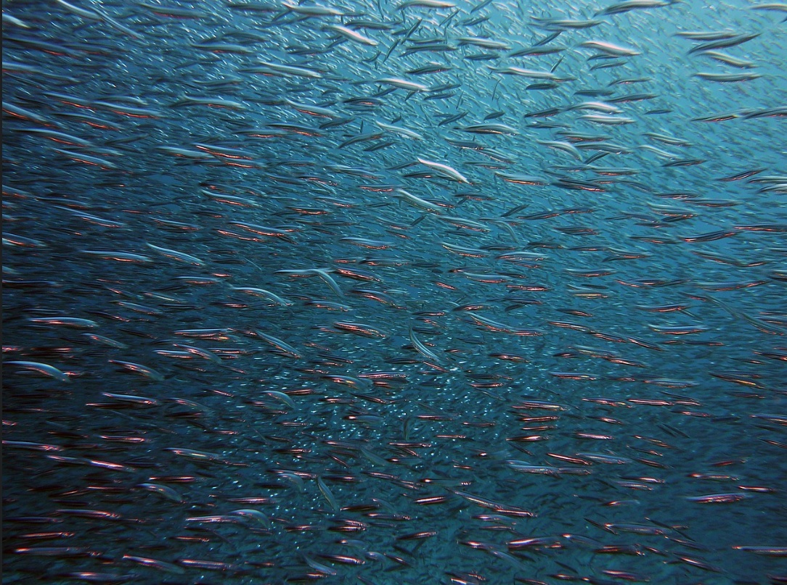
Et Dieu vit que cela était bon.
Et Dieu les bénit, disant: Fructifiez, et multipliez, et remplissez les eaux dans les mers, et que l'oiseau multiplie sur la terre.
Livre de la Genèse
Contenu de cette page 5
Le contenu de cette page : Quel rapport avec le 5ème jour de la Création?
Cette page est la page n°5 du site, mais quel rapport entre le chiffre 5 et le contenu de cette page? : Une page plutôt Théologie, avec considérations sur des textes de Théologie. Pourquoi une page Théologie / religions monothéistes. Le cinquième jour de la création, ce jour de Création des poissons, les oiseaux...
Pour le moment, au vendredi 3 octobre 2025, je ne saurais trop. Tantôt, pour d'autres pages, il me sembla y avoir un lien plus évident entre ce qui se serait passé le jour de la création et le numéro de la page, mais pour ce cinquième jour, ce serait moins clair le lien entre le numéro et ce qui se serait passé au même numéro du jour de la Création. Poissons et oiseaux et Théologie.. Peut-être avec le temps je trouverais des liens, ou je déplacerai certaines parties plutôt sur cette page 5, ou je déplacerai certaines parties vers d'autres pages..
Page 5 / que devrait représenter cette page par rapport à un processus de croisade
De 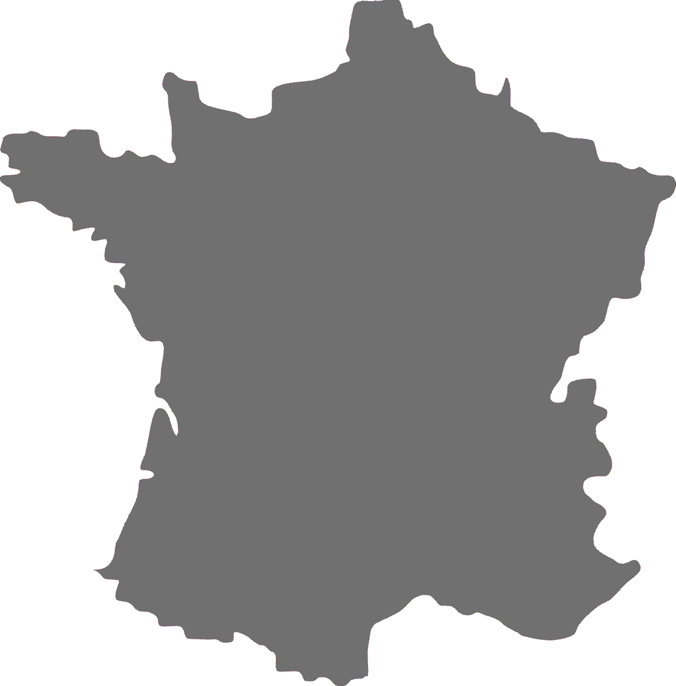
Dans la perspective d'une croisade, cette page serait plutôt sensée rassembler les Gens, ou du moins certaines Gens, en vue de la croisade. Parce que certains évoquèrent qu'une délivrance finale partirait de france.
Or bon, cette page servirait comme de réflexion, "d'appel", aux différents Gens du livres, pour se rassembler vers la croisade.
| jour de la page, numéro | Ce qu'aurait Créé Dieu | concordance entre le numéro de la page de ce site et le jour de Dieu | concordance avec croisade | concordance avec les différents âges de mon existence | ||||
| Jour 1, page 1 | début de la Création Lumière. Jour / nuit |
concordance peut-être assez correcte : première page du site : une page de présentation générale. La page du premier jour / la page du début | présentation générale du site. Présentation générale de la "croisade" / Trinitisation. (Ceci reste des hypothèses.) | |||||
| Jour 2, page 2 | Séparation des eaux. | Une page pour laquelle le monde, au deuxième jour, n'aurait pas été, lui non plus, encore, formé. | ✅ | Une page plutôt autobiographique, une partie de mon parcours. | Une page qui se rapporte plutôt à une étape "nébuleuse" de mon existence : l'enfance / l'adolescence. | |||
| Jour 3, page 3 | Dieu aurait créé la terre | une page qui s'intéresse à l'Orient et à l'Occident, aux Occidentaux et aux Orientaux, de manière générale. | ~ | |||||
| Jour 4, page 4 | Dieu aurait crée la lune, le Ciel, les étoiles | une page qui s'intéresse aux extra-terrestres, au spatial |
✅ | Une concordance peut-être assez correcte avec mon existence, car avant de me "focaliser" sur la Théologie, j'eus une période existentielle dans laquelle j'ai passé un certain temps à écouter des vidéos sur l'Ufologie, les extra-terrestres, le paranormal en général. | ||||
| Jour 5, page 5 | Dieu aurait créé les poissons et les oiseaux. | Pas trouvé encore le lien entre les poissons et les oiseaux et le chiffre 5, par contre | ~ ~ | Une page pour préparer les Gens du livre à la croisade. | après pas mal de temps passé dans le paranormal, depuis quelques années, de ma part, une priorité nette à la Théologie. | |||
| Jour 6, page 6 | Création des Humains. | Une page avec de ma part étude de Certains Archétypes Humains, qui pourraient aller vers la croisade. | ~ | |||||
| Jour 7, page 7 | Ceci aurait été un jour de repos | Une page plutôt musique / "détente". | ✅ |
Contenu de cette page 5
Cette page 5 est à propos de la circoncision et
des 3 grandes religions monothéistes : Christianisme, Islamisme, Judaïsme.
|
|
| musique du printemps, pas forcément adaptée actuellement : j'ai rédigé ceci le mardi 15 juillet 2025 (soit à la saison de l'été). Je changerais peut-être plus tard cette vidéo. |
Pendant quelques mois, j'avais plutôt présenté les titres de cette page dans cet ordre :
1. Le Christianisme
2. Les Musulmanisans
3. Le Judaïsme
4. Circoncis / Incirconcis
J'ai hésité pour savoir dans quel ordre placer ces titres.
Au vendredi 30 mai 2025, je choisis plutôt de placer la partie sur la circoncision en premier. Puis, comme il arrivera peut-être un Mahdi, je place les Musulmanisans en second. Puis les Judaïsants, puis le Christianisme.
Pendant un temps, dans le sens où le Christianisme serait quand même la religion, en théorie, la plus proche de la Trinité, il dut me sembler plus "respectueux" de placer le Christianisme en premier, mais enfin il y aurait Christianisme et Christianisme.. Catholiques, Protestants, Orthodoxes, tous ne seraient pas au même niveau. Et même au niveau de ceux qui seraient sensés être les plus proches de Dieu (les Catholiques), il y aurait Catholique et Catholique.. Depuis des années, je ne serais pas étonné que certains Musulmanisans auraient des comportement plus catholiques, sur certains points, que divers prétendus "Catholiques". (Pour peut-être compenser de ne pas avoir mis le Christianisme en premier, j'ai mis quand même un vidéo/musique de Vivaldi 🌸)
(Page mise en ligne pour la première fois le jeudi 5 décembre 2024.)
Update du lundi 1 septembre 2025 : avant la partie Circoncis / Incirconcis, je place une partie sur J*sus/ Luisa Piccarreta, le Livre du Ciel, car ce serait le plus important
Théologie / J*sus / Luisa Piccarreta, le livre du Ciel ☀️
Mon point de vue, sur ce livre du Ciel, actuellement : ce livre du Ciel, un aboutissement? actuellement, pour l'espèce, un des livres les plus important sur terre?
S'il y a un Dieu et que ce fut bien lui qui dicta cette œuvre, alors j'aurais, pour le moins, de quoi me demander si ce livre ferait parti actuellement des livres les plus importants sur terre
Je ne serais pas étonné que cette œuvre, puisse représenter un aboutissement de mon parcours philosophique/Théologique, actuellement (en 2025). Je préfère ne pas déclarer avec certitude que cette œuvre serait un aboutissement, parce que
Pas sûr que cette œuvre (le livre du Ciel) soit un aboutissement
→ c'est quand même une œuvre de quelques milliers de pages et je ne prétend pas avoir forcément avoir tout compris/assimilé. Prononcer un jugement définitif sur la qualité de cette œuvre, sur son classement parmi d'autres œuvre, serait trop précipité/ hasardeux, voire prétentieux, j'estime, en mon état.
→ ce n'est peut-être qu'à l'occasion d'événements futurs, collectifs?, que l'envergure / la compréhension / l'effet, de divers écrits de cette œuvre – le livre du Ciel –, pourront être mieux compris. Comme si les "formules magiques" de cette œuvre (le Livre du Ciel) devaient avoir fait leur effet sur l'espèce, avant de pouvoir juger si ce livre fut véritablement un aboutissement.
Mais hypothèse que cette œuvre (le livre du Ciel) soit un aboutissement
Je fais quand même l'hypothèse que ce livre serait un aboutissement, un aboutissement, ne serait-ce que parce que
- ce livre aurait été dicté par Dieu (s'il y a bien un Dieu et un seul, qu'est-ce qu'y serait plus haut que Lui? et même comparable à Lui?) et lui même évoqua l'importance de ce livre
- ce livre devrait servir à la transition deuxième fiat / troisième fiat, et tant que ce troisième fiat ne serait pas davantage établi, ce serait cette œuvre volumineuse (de 36 tomes) qui ferait référence. Dans ce sens, je garde l'hypothèse que ce serait, sur terre, une des œuvre les plus importantes, actuellement. Même si sur des millions d'œuvres, ce pourrait sembler incroyable qu'il n'y en ait qu'un et que ce soit ce livre du Ciel, le plus important, mais dans l'hypothèse où il n'y aurait qu'un Dieu, alors oui, ce serait ce livre qui serait le guide pour l'espèce, un guide pour une grande transition à venir.
|
|
Ce qui la rend malheureuse [la Créature] est la volonté humaine. Aussitôt enlevée, tous les malheurs disparaissent et n’ont même plus aucune raison d’exister. Mais seule ma Volonté fait mourir tout malheur humain. Devant elle, tous les maux s’effacent. Ma Volonté est comme le soleil du matin qui se lève et a la vertu de dissiper les ténèbres de la nuit. Devant la lumière, l’obscurité meurt et n’a plus aucun droit d’exister. Il en est ainsi avec ma Divine Volonté. |
|
|
↑ Comment interpréterait t'ai-je, ce passage? ↑ Je serais pas tout à fait sûr, de comment interpréter ce passage, mais je fais quand même une hypothèse : Ce serait que presque tout ce que firent les Humanoïdes, depuis des siècles, dès qu'il a s'agit de s'occuper de systèmes plus compliqué que simplement des actions de la vie courante : par ex. leurs systèmes politiques, scolaires, professionnels, presque tout était problématique. (À part à quelques moments de l'histoire, où de grand Dirigeants qui écoutèrent justement Dieu : par exemple du temps de St Louis, en france?). Parce qu'à la base, dans ces systèmes, ils ne respectèrent pas différentes règles de Dieu, et à la base, il y eut presque toujours un truc qui clochait. |
Mais ce n'est pas simplement parce que cette œuvre aurait été "dictée par Dieu" et que "Dieu" aurait dit ceci cela, que ce me serait suffisant à être sûr que ce livre soit validé à coup sûr. Encore faudrait-il que je m'assure de la qualité du contenu de cette œuvre. Or, le contenu de ce livre, de ce que j'en ai retenu, me sembla assez bien coller avec beaucoup de problématiques, sur cette planète : en effet, un des problèmes majeur, si ce n'est le problème majeur, actuellement – et depuis des millénaires – sur cette planète, c'aurait été ce que firent, ou plutôt défirent une grande partie des Humains de cette planète. Leur manière de "faire" certaines choses. Ou plutôt défaire/mal faire certaines choses. Et dans ce livre du Ciel, assez souvent c'est ce qu'y me sembla déclaré que la "volonté" de plein d'Humains posait problème. De mémoire, de plus d'une fois, il est évoqué que tous les malheurs viendraient des Humains et aucun de Dieu. Cet absolutisme, dans la manière de déclarer ceci, pourrait avoir sa véracité, s'il se trouve que ce fut bien Dieu qui s'exprima.
| Tableau de ce que m'auraient semblé savoir faire les Humanoïdes, depuis des siècles ou décennies, et ce pour quoi ils auraient été plutôt incapables, voire dangereux | |
|
choses relativement simples : conduire des voitures, faire des travaux à domicile (réparation), cuisiner |
capables |
|
plus compliqué, mais ceci reste de la science : en occident : faire des routes, des ponts, des voitures, des technologies |
capables |
|
faire des systèmes dans lesquels les relations Humaines auraient été viables? Les écoles, système professionnels, furent-ils viables? : Dans énormément d'écoles, il y eut des bagarres, humiliations de profs ou d'élèves, moqueries sur le physiques, etc. |
incapables |
|
profondément incapables de gérer des systèmes collectifs avec relations Humaines viables. En particulier les Garçons. En général ceci termine en maltraitance au moins pour une partie de la collectivité (système scolaire problématique, camps de concentration, goulag) |
incapables |
|
dès qu'il s'agit d'aller davantage dans les sciences Humaines, dans le relationnel, dans des systèmes d'ampleur, ceci aurait été la catastrophe, depuis des millénaires, avec la plupart des Humanoïdes. Ils auraient été des bidochons. Une hypothèse (et aussi selon ce qu'y aurait été déclaré, du moins à certaines Mystiques) une hypothèse sur un aboutissement de cette bidochonnerie collective (les élections etc.) : – bientôt? – : l'antéChrist (avec en arrière plan de l'antéChrist : satan).
|
|
|
Le seul moyen de réussite pour arriver à gérer les relations Humaines, le seul moyen de réussite pour des systèmes d'ampleur, ce serait Dieu. Seulement à quelques moments de l'histoire, avec des Âmes spéciales, liées à Dieu, ceci aurait convenu (du temps du roi David, de Moïse, etc., et surtout du temps du Fils). |
|
En fait, la problématique serait qu'il y a un monde. Dessus il y a des Humanoïdes, pour la plupart, dès qu'il aurait s'agit de sciences Humaines, la plupart auraient fait plus ou moins n'importe quoi, depuis des millénaires.
Pas n'importe quoi dans leur quotidien, sur des tâches simples : genre faire à manger, ou conduire des voitures, cuisiner, s'habiller, faire telle ou telle réparation, construction. Non; ce serait plutôt dans leur gestion de système, dans leur manœuvres politiques, dès que l'on commence à sortir de tâches relativement simples, que la plupart des Humanoïdes, depuis des millénaires, se seraient dispersés. En fait y se seraient comportés comme des sortes de bidochons, (à part à quelques moments de l'histoire où y aurait eu des pauses : comme par exemple du temps de Moïse, ou du roi David, ou du Fils (vers l'an 0), ou d'autres figures de la religion) à part ces quelques moments, la plupart auraient été des
sûr d'eux mêmes, (un comportement qui pourrait s'appeler l'orgueil) et tant que Dieu ne sera pas clairement davantage revenu là dedans, ce sera plus ou moins du n'importe quoi / de l'égarement : Tout leur truc de politique, la plus grande partie de leur système scolaire, de leurs systèmes professionnels. La plus grande partie de tout ceci, ce serait du n'importe quoi : le fruit de Gens qui essayèrent de faire un monde à leurs manières, leurs manières décalées de Dieu.
Pourquoi aussi ce livre du Ciel serait un aboutissement : parce que justement, tant que ces principes émis par Dieu seraient pas remis en avant, la situation restera bloquée.

Ce
- déjà dès l'enfance, ce livre du Ciel viendrait en confirmation aussi de mon expérience existentielle, sensible, selon laquelle ce me semblait clocher, en général, avec les Humanoïdes, leur système scolaire.
- et aussi de divers écrits de Mystiques / Gens de religion, à travers les siècles : c'est-à-dire que globalement, depuis des siècles, les sociétés Humanoïdes furent plus ou moins invivables.
- Dans l'enfance / adolescence → la sensation d'un truc qui cloche dans ces sociétés Humaines.
2. À l'adolescence, lecture de philosophie. (F. Nietzsche, essentiellement)
3. Plus tard, écoute/lecture de Théologie.
4. À partir d'un certain âge → écoute et/ou lecture du livre du Ciel : confirmation de cette sensation, que depuis l'enfance, y a un truc qui cloche avec les Humains, en général.
Grand Monarque et/ou Mahdi et/ou Machia'h et livre du Ciel. Y aura-t-il une œuvre (ou des œuvres) qui fera(ont) suite au livre du Ciel / Questionnements
Est-ce que si un grand Monarque et/ou Mahdi et/ou Machia'h survien(nen)t, il(s?) prendra(ont?) appui sur ce livre du Ciel. À priori il me semblerait assez plausible / logique que oui. Dans l'hypothèse où un grand Monarque et/ou Mahdi et/ou Machia'h survienne, serait-il même concevable qu'une autre œuvre fasse suite au livre du Ciel? Une fois la transition deuxième fiat / troisième fiat mieux établie.

Luisa Piccarreta / le livre ''du Ciel''
Présentation de Luisa Piccarreta, quelques considérations

Image représentant quelques tomes du livre du Ciel. Image issue de http://www.scrittidiluisaPiccarreta.it/gli-scritti-Luisa-Piccarreta/
pour donner un ordre d'idée
Pour résumer : une Mystique italienne. Sur ce site, à plusieurs endroits, j'ai cité ce qu'aurait dicté le Fils à
. Cette Fille aurait vécue de la fin du XIXᵉ siècle au milieu du XXᵉ. Pendant des décennies alitée et en communication avec le Fils. Aurait rédigé le "livre du Ciel", un livre qui aurait été dicté pour majeure partie, par le Fils. Taille de l'œuvre en format "livre de poche" : au moins 5000 pages, sur 36 tomes (ou cahiers).
Position/statut de Luisa Piccarreta par rapport au Fils et à la V. Marie
De ce que j'ai compris, Luisa Piccarreta tiendrait la troisième place :
| 1.La Trinité (si tant est que la Trinité soit comparable/hiérarchisable) |
||
| 2. Marie/Reine du Ciel | ||
| 3. Luisa Piccarreta |
|
|
Un extrait à propos de Luisa Piccarreta, extrait issu du livre du Ciel
D'autre part, afin que ma Volonté soit connue et que le Ciel s'ouvre pour la laisser descendre sur la terre afin qu'elle puisse y régner comme elle le fait au Ciel, J'ai eu à choisir une autre petite parmi toutes les générations. Puisqu'il s'agit de la plus grande œuvre que je veux accomplir - restaurer l'homme dans ses origines et lui ramener la Divine Volonté qu'il a rejetée, - lui ouvrir mes bras et le recevoir de nouveau au sein de ma Volonté, mon infinie Sagesse appelle la plus petite, sortie de rien. Il était juste qu'elle fut petite: - si J'ai placé une petite à la tête de la Rédemption, - Je devais placer une autre petite à la tête du « que ta Volonté soit faite sur la terre comme au Ciel. » Avec deux petites, Je devais réaliser -l'objectif de la création de l'homme, -mes desseins sur lui. À travers l'une, - Je devais racheter l'homme, - le laver de sa laideur avec mon Sang et - lui accorder le pardon. A travers l'autre, je devais ramener l'homme - à ses origines, - à sa noblesse perdue, - aux frontières de ma Volonté qu'il avait franchies, l'admettre de nouveau devant le sourire de mon Éternelle Volonté, afin que Nous puissions Nous embrasser l'un l'autre et vivre l'un dans l'autre. Le but de la création de l'homme n'était rien d'autre que cela. Ce que J'ai décidé, personne ne peut s'y opposer. Les siècles peuvent s'écouler mais, -tout comme la Rédemption a été réalisée, -l'homme va revenir dans mes bras tel que prévu lors de sa création. Pour ce faire, J'ai dû d'abord choisir celle qui serait la première à vivre dans ma Volonté Éternelle, -la lier à toute la création, et -vivre avec elle sans séparation de nos volontés, sa volonté et la nôtre ne faisant qu'un. D'où la nécessité qu'elle fut la plus petite, issue de la création de manière à ce que, -en se voyant si petite, elle veuille fuir sa volonté en la liant étroitement à la nôtre au point de ne jamais faire la sienne , et que, bien que petite, elle puisse vivre avec Nous à partir du souffle par lequel nous avions créé l'homme. Notre Volonté l'a gardée fraîche et belle Elle est notre sourire, notre amusement. Et nous faisons d'elle ce que nous voulons. Oh! comme elle est heureuse! Jouissant de sa petitesse et de son heureuse destinée, -elle a supplié pour ses frères et -elle n'a rien fait d'autre que de compenser pour eux auprès de Nous pour tout le mal qu'ils nous font en demeurant détachés de notre Volonté.
10 novembre 1923 - tome 16 - Le livre du Ciel
La série de films star wars et la ''divine volonté'' du livre du Ciel
La force, le côté obscur, les Jedis, tout serait vrai aussi... dans le monde réel?
Il me sembla y avoir comme une ressemblance entre divers concepts du livre du Ciel et divers passages de star wars.
| la force | la divine volonté | |
| les jedis | les saints | |
| le côté obscur |
le diable, les démons, les puissances démoniaques |
La force, le côté obscur, ces concepts dont il est question dans les films star wars seraient vrais aussi dans le réel? Pas simplement dans ce film? Et même plus vrais dans le réel que dans ce film?
À l'occasion de ce lundi 16 décembre 2024, j'ai fait un montage star wars. Sur la base du trailer de star wars 7. star wars 7 qui sortit au cinéma le 16 décembre 2015, en france. (source youtube du trailer : https://www.youtube.com/watch?v=mH9Ygfs5avo)
| Film à l'occasion du lundi 16 décembre 2024 |
(montage vidéo, au moins quelque peu édité depuis le 16 décembre 2024)
Quelques Gens apparaissant dans cette vidéo:
La ''divine Volonté'' du livre du Ciel et la force des films star wars
|
|
Le livre du ciel, 1er Mai 1926
Le Fils à Luisa Piccarreta "Ma volonté est en perpétuel mouvement. Elle ne s'arrête jamais. Si son mouvement cessait, ce qui est impossible, la Création n'aurait plus de vie, le Soleil, le ciel étoilé, les arbres, l'eau, le feu, les créatures, tout se dissoudrait dans le néant Ceci signifie que ma Volonté avec son évolution éternelle, -est la vie de toute chose créée, -Elle lie tout, -Elle est plus que l'air qui permet de respirer, développer, pousser tout ce qui sort de nos mains. Tu comprends donc l'affront subi par les créatures, qui, alors qu'Elle est la vie de tout et le centre de toute chose, sans Elle rien ni aucun bien n'existerait, ne veulent reconnaître ni sa domination, ni que sa vie qui coule en elles C'est pourquoi celle qui reconnaît la Vie de ma Volonté en elle et en toute chose, est le triomphe de notre Volonté et la conquête de nos victoires, elle est la contrepartie de notre amour au mouvement perpétuel, notre Volonté la liant à toute la Création, lui faisant faire tout le bien opéré par ma propre Volonté. Par conséquent, tout lui appartient et moi Je l'aime tellement, au point de ne savoir rien faire sans elle, du fait que, en vertu de ma Volonté, nous sommes la même vie, le même amour, une seule palpitation, un seul soupir." Le livre du Ciel tome 19, téléchargé depuis lumenluminis
"Ma volonté est en perpétuel mouvement. Elle ne s'arrête jamais. Si son mouvement cessait, ce qui est impossible, la Création n'aurait plus de vie, le Soleil, le ciel étoilé, les arbres, l'eau, le feu, les créatures, tout se dissoudrait dans le néant Ceci signifie que ma Volonté avec son évolution éternelle, -est la vie de toute chose créée, -Elle lie tout, -Elle est plus que l'air qui permet de respirer, développer, pousser tout ce qui sort de nos mains. Tu comprends donc l'affront subi par les créatures, qui, alors qu'Elle est la vie de tout et le centre de toute chose, sans Elle rien ni aucun bien n'existerait, ne veulent reconnaître ni sa domination, ni que sa vie qui coule en elles C'est pourquoi celle qui reconnaît la Vie de ma Volonté en elle et en toute chose, est le triomphe de notre Volonté et la conquête de nos victoires, elle est la contrepartie de notre amour au mouvement perpétuel, notre Volonté la liant à toute la Création, lui faisant faire tout le bien opéré par ma propre Volonté. Par conséquent, tout lui appartient et moi Je l'aime tellement, au point de ne savoir rien faire sans elle, du fait que, en vertu de ma Volonté, nous sommes la même vie, le même amour, une seule palpitation, un seul soupir." Le livre du Ciel tome 19, téléchargé depuis lumenluminis
| Quelques propos du personnage yoda, dans le film star wars 5 |
La "divine Volonté"..
Nous serions tous investis de cette "divine Volonté" (ce qui serait la force dans star wars), je mettrai peut-être plus tard des extraits du livre du Ciel, à ce propos. Mais même si nous serions tous investis de cette "divine Volonté", il y aurait tout de même des différences entre les uns et les autres, par rapport à cette "divine Volonté". Peut-être plus tard aussi, je mettrai au moins un extrait du livre du Ciel, à ce propos.
Luisa Piccarreta - Quelques liens
|
Luisa Piccarreta
|
|
|
|
Bienvenue sur le site Disciples Amoureux Missionnaires - Missionnaires de la Divine Volonté
|
|
Les lettres de Luisa Piccarreta - Missionnaires de la Divine Volonté
|
|
|
Circoncis📌 et Incirconcis🚀
Chiffres Circoncis et Incirconcis Hommes, approximativement actuellement
| Circoncis | Incirconcis | |
| ~ un tiers des Hommes ~ 1,4 milliard |
~ deux tiers des Hommes ~ 3,6 milliard |
|
| quasiment tous les Juifs (~100%) et quasiment tous les Musulmans (~100%) seraient circoncis |
Histoire / bible et circoncision
Mentalité et conflits Circoncis / Incirconcis
Mentalité Circoncis, Incirconcis. Spéculations.
En fait, ce que j'ai ressenti/suspecté depuis des années, c'est qu'en général les Circoncis, sur la libido/sexualité furent beaucoup plus "froids" que les Incirconcis, en général. Mais, en général, plus stables, aussi peut-être. D'où ceci viendrait-il? Serait-ce parce que le gla*d, chez le Circoncis, le gla*d frotte davantage sur du tissu, ou est à l'air libre, alors que chez l'Incirconcis le gla*d frotte sur le prépuce (et ceci ferait, parfois, comme un effet de succion?).
Au niveau de la mentalité, en général, les Circoncis malades, concernant la s*xualité, me semblèrent beaucoup plus culpabilisateurs que les Incirconcis.
Un exemple de Circoncis qui me sembla relativement castrateur (pas trop non plus) serait Pierre-Marie P., qui je crois, avait lui-même déclaré qu'il était Circoncis. Avec une mentalité assez sévère/extrême envers les p*do"philes". Or, en partie, cette mentalité castratrice, assez sévère, voire violente, sur la sexualité, j'estime, ne serait pas Christique. (Le comportement plutôt Christique aurait été le comportement du Christ par rapport à Marie-Madeleine : une tentative de calme / de transcendance).
Parmi les Circoncis, je serais pas étonné qu'il y ait aussi Salim Laïbi, depuis le nombre d'années qu'il me sembla assez castrateur / extrémiste, railleur, par rapport à la sex*alité.
| Mentalité Circoncis / Incirconcis, ce que je dus ressentir / suspecter, depuis bien des années Une situation/ambiance mondiale qui date, bien probablement, d'il y a des millénaires (Qui n'a pas réfléchi à ceci, ne serait-ce qu'un minimum, au cours de son existence, n'a peut-être pas encore compris grand chose, à ce monde) |
||||
| Circoncis ↓ ~1,4 milliards ↓ ~ 1 sur 3 |
Incirconcis ↓ ~ 3,6 milliards ↓ ~ 2 sur 3 |
|||
| Circoncis malades 😈🔱 ↓ |
sains ↓ |
sains ↓ |
Incirconcis malades 😱🫣🫢😰🤢🤮 ↓ |
|
| Parmi les Circoncis, les Circoncis malades seraient, de loin? les plus nombreux, dans le monde actuel? d'où la taille de la colonne, pour les Circoncis malades, comparativement à la taille de la colonne pour les Circoncis sains |
Parmi les Incirconcis, les Incirconcis malades seraient, de loin? les plus nombreux, dans le monde actuel? d'où la taille de la colonne, pour les Incirconcis malades, comparativement à la taille de la colonne pour les Incirconcis sains |
|||
| Diverses puissances démoniaques les poussèrent à prendre les Incirconcis pour des anim*ux. Ils essayèrent de transmettre aux Incirconcis des puissances démoniaques. Puissances démoniaques qui poussèrent/poussent ensuite les Incirconcis à la destruction. Promotion de diverses images : → images de violence physique (promotion des armes), → promotion de certaines images du corps Humain → promotions de diverses activités qui font passer le Circoncis, et même l'Humain, pour un anim*l "Délectation" à anim*liser, à diminuer, castrer l'Humain, le mettre en compétition gagnant/perdant, castrer le divin en l'Humain (ce que chercherait à faire satan, en utilisant les Circoncis malades) |
Respect de l'Humain, attention pour les Humains Utilisation de leur relative stabilité pour pardonner, aider les Autres |
Respect de l'Humain, attention pour les Humains | Certains auraient souhaités l'ext*rmination de certains Circoncis. Je dus avoir de quoi, pour le moins, le suspecter. Les n*zis? |
|
| Sexual*té/ libido : je ne serais pas étonné que pas mal de Circoncis, étant moins excités, au niveau de leur libido, ils eurent une sorte de dédain pour ceux qui furent relativement énergiques, au niveau de leur libido. Autrement rédigé, je serais pas étonné, qu'assez souvent, divers Circoncis prirent les Incirconcis pour des sortes d'*nimaux, au niveau de leur libido. Or ce dédain serait assez sordide, car à la base, la libido ne serait pas quelque chose de négatif. Mais même serait quelque chose de vivant. Maintenant, je ne serais pas étonné non plus que divers Circoncis crurent s'amuser à essayer de faire aller divers Incirconcis vers certains comportements s*xuels. (Certains Incirconcis firent? la promotion de la divulgation de diverses images, sur internet et/ou dans les publicités papier ou à la télévision. De mémoire, parfois je vis certains sites internet seraient présidés par des Gens se revendiquant d'une certaine communauté) |
J'dirais relativement stables dans leurs comportements et essayant d'avoir aussi un certain pardon, pour ceux qui seraient fragilisés s*xuellement |
Sexual*té / libido : Chez certains Incirconcis une sorte de maturité, de vie, par rapport à la s*xualité, un pardon, quelque chose qui pardonne, quelque chose de paternel |
Sexual*té/ libido : Chez pas mal d'Incirconcis, une sorte de vie assez décousue, qui part "dans tous les sens" et donc parfois, problématique. |
|
| Vecteurs d'excitations 🔱📺🎦 Le Circoncis malade organise des fêtes à outrance, des jeux d'argent, en particulier pour ceux qu'il prend pour des G*ys, le Circoncis malade promeut l'alcool à outrance pour ceux qu'il prend pour des G*ys, promeut les compétitions sportives à outrance pour ceux qu'il prend pour des G*ys. Le Circoncis malade pousse Gilbert à l'animalisation à outrance : il pousse Gilbert à passer une partie considérable de son temps à courir, à sauter, derrière des balles, des ballons. Le Circoncis malade croit se nourrir de la destruction de ceux qu'il prend pour des G*ys. moins directement victimes que les Incirconcis Par contre, s'il y a un Dieu, l'hypothèse c'est qu'il faudra un jour payer pour avoir obstinément, sur la durée, pour avoir été transmetteur, promoteur de puissances démoniaques envers des Incirconcis Le Circoncis malade se fait le vecteur de puissances démoniaques. Il participe à promouvoir excessivement diverses images, l'alcool, la drogue, les armes, enfin des choses qui peuvent pousser à la destruction. La différence, je dirais, en général, par rapport à l'Incirconcis malade, c'est que le Circoncis malade ne participe pas tellement directement à divers excès. Il promeut simplement. Genre il va promouvoir la drogue à outrance, l'alcool à outrance, l'argent à outrance, les armes à feu, certains comportements avec diverses Fi**es. Il promeut, tout en restant, lui, à distance. (Par exemple, il sera plutôt Gérant de casino, plutôt que Joueur au casino, Vendeur d'armes plutôt que Soldat, Tenancier de bar ou Commerçant en alcool, plutôt qu'alcoolique). Le Circoncis reste relativement sobre. |
Essayent de ne pas être Vecteurs de puissances démoniaques. Stabilisateurs. Ne promeut pas certains comportements Utilise sa relative stabilité pour apaiser. |
Essayent de ne pas être Vecteurs de puissances démoniaques. Stabilisateurs. Ne promeut pas certains comportements |
Victimes/réceptacles 🥣 d'excitations Plus directement victimes directes que les Circoncis. Peut-être moins manipulateurs que les Circoncis, mais, par ailleurs, davantage directement impliqués dans des excès. Pauvre Créature piégée, (qui serait considérée comme un(e) G*y(a) par le Circoncis. Pauvre Créature qui participe à outrance à ce que diverses puissances démoniaques du Circoncis lui promeuvent : l'alcool, la drogue, l'argent à outrance (machines à sous ou autre), etc. C'est celui que le Circoncis malade prend pour un G*y. C'est l'Incirconcis qui mange en excès, c'est l'Incirconcis, qui bois en excès, c'est l'Incirconcis qui dépense au casino en excès. L'Occidental qui passe une partie considérable de son temps comme obnubilé par le sport, les balles, les ballons etc. |
|
| Promoteurs de la politique Politicien |
Promotion de la Théologie | Promotion de la Théologie | Excités à aller voter. Votants |
|
| Promotion du new age, Promotion du "Judaïsme" déviant, extrémiste "Islamisme" déviant, violent |
En général plutôt dans la Théologie de l'ancien testament, plutôt dans la Théologie des Circoncis. Islamisme sain Judaïsme sain |
En général plutôt dans la Théologie du nouveau testament, dans la Théologie des Incirconcis. Christianisme sain |
Participation à diverses Théologies genre polythéistes, ou pratiques : New age, Bouddhisme, Tantrisme "Christianisme" déviant |
|
| Ce tableau précédent, ce tableau de diverses différences Circoncis, Incirconcis, je ne serais pas étonné que pas mal de Filles, en occident surtout, pas mal de Filles n'aient pas trop conscience comme pourraient en avoir conscience des Garçons, depuis au moins des siècles, de ce qu'il se passa. Elle n'auraient pas trop conscience des différences évoquées dans ce tableau. La plupart des Filles, surtout en Occident, la plupart ne seraient pas "Circoncises" (excisées). Cette circoncision ou incirconcision, depuis des millénaires, ce serait vraiment un "truc" de Garçon(s). Mais, par ailleurs, j'estime bien que diverses Filles eurent quand même d'autres "antennes", pour ressentir, dans d'autres domaines, la psyche d'un Garçon, ou du moins une partie de la psyche d'un Garçon. Mais dans ce domaine spécifique, je suspecte la plupart des Filles, en occident en particulier, la plupart comprennent assez peu la situation. J'imagine que beaucoup de Filles mesurent assez peu l'ampleur que peut jouer la circoncision sur la psyche d'un Garçon. |
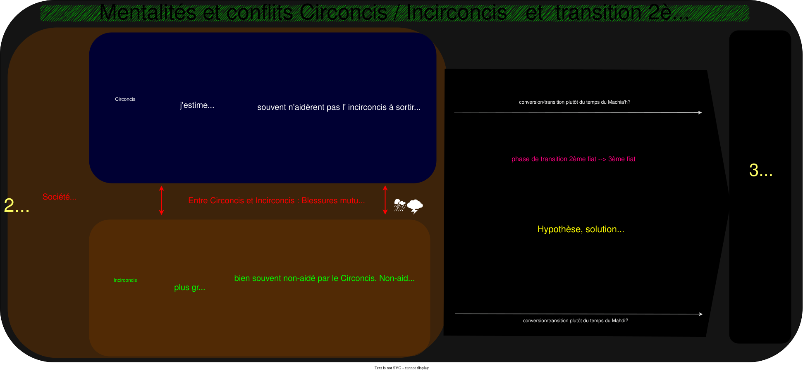
Circoncis / Incirconcis et système scolaire
État actuel de la situation système scolaire / Circoncis / Incirconcis
| Circoncis | Incirconcis | |
| Je ne serais pas étonné que beaucoup de Circoncis furent relativement forts, dans le système scolaire, car une certaine performance dans la rationalité dépendrait d'une certaine stabilité de la "s*xualité" : De mémoire j'ai entendu que la stabilité s*x*elle était liée aux performances "en rationalité", dans un passage dans M. Valtorta, ou je ne sais plus quel texte théologique. Je le rajouterai peut-être plus tard, ici | Pour beaucoups, souvent déshonnorés/rendus malades par ce système scolaire qui prone les Gens aux bons résultats scolaires. | |
| Partant de là, je serais pas étonné que beaucoup de Circoncis veillèrent à ce que perdure ce système scolaire. Ou enfin, du moins, il s ne furent pas des plus préssés à le faire changer. Un système scolaire dans lequel beaucoup de Circoncis, en général, tinrent les premières places? Et ensuite divers postes à responsabilité, divers postes de pouvoir... |
Avenir? de la situation du système scolaire
partie à venir, peut-être
Circoncision - Stabilité sexuelle - Avenir?
Évolution avec le temps d'un Circoncis par rapport à un Incirconcis, avec le temps, depuis la venue du Fils, il y a ~2000 ans
| Hypothèse : Dieu = la Trinité | ||
| Incirconcis | Circoncis, en particulier les Judaïsants |
|
|
Depuis à peu près deux millénaires, de base, pendant l'enfance, les Incirconcis eurent-ils plus de proximité avec Dieu que les Circoncis, dans l'hypothèse où Dieu serait le Fils et qu'il n'exigea pas la circoncision, depuis ~2000 ans et sa venue "en chair et en os" sur terre. De base une amplitude émotionnelle plus grande qu'un circoncis. Par contre, en général, dans cette époque ils "tombent" plus bas qu'un circoncis. |
Depuis à peu près deux millénaires, de base, à la naissance, davantage écartés de Dieu qu'un Circoncis, mais en général, dans cette époque (début XXIème siècle), plus stables sexuellement. | |
|
|
||

| Considérations sur la circoncision. Hypothèse de base : le Fils = Dieu | ||||
|
Étape 1 |
Étape 2 |
Étape 3 |
Étape 4 |
Étape 5 |
|
1er fiat |
|
2ème fiat |
|
3ème fiat |
| Déroulé de la circoncision ? --> Déroulé de la circoncision ?--> Déroulé de la circoncision ?--> Déroulé de la circoncision ? | ||||
|
Monde méli-mélo, pagaille. Les Juifs alors relativement se stabilisent et peuvent devenir les gouvernants du monde |
Appa-rition du Fils et du Christianisme. |
Monde méli-mélo, pagaille, mais tout de même nouveau fiat, rédemption. (Moins la pagaille qu'avant, en quelque sorte.) |
Apparition d'un Mahdi/ Machia'h/ Christ/ grand Monarque. Il fait (font ?) comprendre aux Circoncis les problèmes des Incirconcis. Il fait(font ?) la jonction circoncis, Incirconcis. Il(s) remet(tent) les peuples à leur place. |
L'Humanité est stabilisée sexuellement, les Judaïsants et Musulmanisans reconnaissent le Fils et arrêtent la circoncision. |
Diverses considérations ''d'extrême droite'' sur les Juifs et les Arabes/Musulmanisans
Est-ce que diverses considérations de Gens parfois dit d'extrême droite concernant les "Juifs" me semblèrent vraies? En partie, oui, je dirais.
Est-ce que diverses considérations d'extrême droite selon lesquels, proportionnellement, beaucoup de Judaïsants furent et seraient encore à des postes de pouvoir, seraient vrais? Eh bien, je dirais qu'en partie, oui : ce me sembla vrai.
De plus, il me sembla vrai aussi, par ailleurs, qu'il y ait eut une prévalence proportionnellement beaucoup plus importante de Musulmanisans impliqués dans divers attentats (en particulier en france, au cours des dernières décennies).
Par contre, attention, en général, "l'extrême droite" me semblèrent partir de l'à priori que les Judaïsants et les Musulmanisans, seraient de base, mauvais. Or les juifs et les Musulmanisans seraient plutôt à considérer comme des mutilés, des victimes pour lesquelles il y aurait de quoi avoir une indulgence, de la charité, ce qu'en général, l'extrême droite ne me sembla pas tellement, en apparence du moins, prendre en compte. Autrement rédigé, ce n'est pas parce que beaucoup de Judaïsants ou de Musulmanisans furent malades, qu'il y aurait à considérer que de base, ils soient mauvais. Ce raccourci me semblerait "démoniaque". Plus à même d'aggraver la situation plutôt que de la résoudre.
Je me demande donc si en fait, pendant environ 2 millénaires, il y eut une sorte de système sur terre qui aurait été formé ainsi :
Circoncision et 2ᵉ fiat, fiat de rédemption, pendant environ 2000 ans
| Judaïsants circoncis et Circoncis "à la juive" | Agnostiques | Non-circoncis et purs | Agnostiques | Musulmans circoncis | |
| Quantité | quelques millions dans le monde | Des milliards | Une minorité dans le monde | Des milliards | Plusieurs centaines de millions |
| Depuis deux millénaires en particulier, tout le monde serait dans une société plus ou moins malade. (excepté certaines Gens isolés sur des iles désertes ou dans la forêt amazonienne) |
|||||
| Judaïsant aux capacités psychiques supérieures à la moyenne | Créature instable sexuellement | Le plus stable qui soit. Stabilité acquise par dépassement de soi, contrôle des passions. | Créature instable sexuellement | Créature plus stable que les pécheurs Incirconcis, mais moins stable que les Judaïsants | |
| Mais Judaïsant tout de même complexé, écarté, par défaut, de Dieu | |||||
| Judaïsant qui n'est pas à sa place de pouvoir et d'échange dans le monde | |||||
| Judaïsant qui croit avoir besoin de maintenir un système de contrôle en place : l'école, qui lui permet d'avoir la première place, la mixité de genre (car le Judaïsant, en général plus stable sexuellement, s'en sort relativement bien) | |||||
| Judaïsant devenu malade | |||||
| Musulmanisan qui fait du mal aux non-croyants | |||||
Musulmanisans 🕌🕋
Préambule - Hypothèse sur ce que va devenir cette communauté musulmane
En fait, une hypothèse, c'est que cette communauté musulmane(ou vaudrait-il mieux rédiger musulmanisante, car cette communauté ne deviendrait musulmane qu'à l'apparition du Mahdi) cette communauté, j'estime, je suspecte, est la communauté par laquelle devrait commencer la délivrance finale.
Beaucoup d'éléments me semblèrent converger et me laisser penser que c'est par les Musulmans, les Musulmans sous l'égide d'un Mahdi que commencera à revenir bien davantage Dieu sur terre.
Voici divers de ces éléments:
Un monde problématique.
Des Gens éclatés entre eux, à travers le monde, dans différentes communautés.
Un seul Dieu qui serait la Trinité.
La communauté musulmane, une communauté entre deux eaux: avec une ascendance Abrahamique (du côté du père) et une ascendance maternelle "du peuple" du côté de la Mère. Cette position entre deux eaux, leurs conféreraient justement bien davantage que toutes les autres communautés, un rôle de jonction entre les nations et Dieu.
Comme s'ils pouvaient faire la jonction entre les Gens plutôt issus du peuple (les Gens sans ascendance Abrahamique) et les Gens issus de lignée Abrahamique (divers Judaïsants, entre autres).
Les Musulmans - une communauté entre deux
Je dirais, les Musulmanisans, une communauté entre deux par excellence. Peut-être bien pour cette raison aussi, la communaté la plus adaptée à faire une jonction "Païens/G*ys" / Croyants.
| Les deux "casquettes" du Musulmanisan | ||
| en partie | en partie | |
| Mi-Incirconcis Mi-stables au niveau de libido, mi-instables. |
↔️ | Mi-circoncis (Circoncis, mais pas la même circoncision que les Judaïsants.) Mi-stables sexuellement, mi-instables. |
| Mi d'ascendance populaire | ↔️ | Mi d'ascendance divine (du côté du père (Abraham)). |
| Mi-occidental (pour les Maghrébins du moins). | ↔️ | Mi-oriental (pour les Maghrébins du moins). |
| Mi-Christianisant | ↔️ | Mi-Judaïsant |
Parmi les Musulmanisans les plus entre deux : les Maghrébins. (Certains évoquèrent que le Mahdi devrait d'abord apparaître au maghreb.)
Objectif de l'islam?
L'islamisme serait-il une fin en soi ou une étape vers le Christianisme premier? Une étape vers la Trinité?
Si je pars de l'hypothèse que le vrai Dieu serait le Fils, alors, je suspecte de l'islam que ce soit une religion de transition.

Musulmans et absence du père/Père

J'estime un caractère commun aux Musulmanisans serait la sensation d'abandon et/ou d'absence du père. Peut-être ceci expliquerait pourquoi les Musulmanisans, en général, me semblèrent avoir eut une certaine rigueur et une certaine attention pour le comportement d'Autrui (par exemple Salim Laïbi). Une exigence qu'ils auraient pour la société. Comme si pour eux, la société devait se substituer à un père absent.
Cette rigueur viendrait aussi d'une origine divine : Abraham/Ismaël. (Mais pas forcément pour tous les Musulmanisans, car tous ne descendraient pas d'Ismaël.)
Cette sensation d'absence du père, dans une telle époque, j'estime, ceci concernerait peut-être bien au moins des centaines de millions de Créatures sur terre. Au moins des centaines de millions à être portées vers l'islam.
Je dus suspecter que ceci fut issu de leur origine:
Pour les Ismaéliens : d'un côté leur Mère, servante et peut-être tout de même pas véritable femme d'Abraham (sa véritable femme aurait plutôt été Sarah?). Et d'un autre côté, leur père, Abraham. Les ismaélites qui auraient ainsi une double origine: à la fois sacrée du côté du père, et d'un autre côté, "populaire", du côté de la Mère. Un peuple qui aurait comme atavisme collectif une sensation d'abandon paternel intrinsèque. (Lié à la séparation d'Avraham et l'exil d'Agar (mère d'Ismaël)). Les Musulmans descendants d'Ismaël auraient ainsi cette bipolarité, cette sensation d'abandon. Un complexe de rejet, ou si ce n'est un complexe de rejet, du moins, un complexe de manque.
Je verrais 4 types de Musulmanisans :
| Au moins 4 types de Musulmanisans ou, si ce n'est Musulmanisan, du moins des Créatures attirées par le Musulmanisme | ||||||
| Créature croyant au coran, au Prophète de l'islam. Ou du moins qui se sentit attirée par cette religion ou les Gens qui en composaient sa communauté. | Créature croyant au coran, au Prophète de l'islam. Ou du moins qui se sentit attirée par cette religion ou les Gens qui en composaient sa communauté. | Créature croyant au coran, au Prophète de l'islam. Ou du moins qui se sentit attirée par cette religion ou les Gens qui en composaient sa communauté. | Créature croyant au coran, au Prophète de l'islam. Ou du moins qui se sentit attirée par cette religion ou les Gens qui en composaient sa communauté. | |||
| D'ascendance seulement Ismaélienne (Ismaël, fils d'Abraham (vers -3500 av JC?)) | D'ascendance Mahométane (Mohammed, vers 700) et non Ismaélienne | D'ascendance Ismaélienne et Mahométane | Ni d'Ascendance Ismaélienne et ni Mahométane | |||
 |
 |
|
||||
| La Créature aurait cet atavisme "d'abandon" du père (Abraham). | La Créature aurait cet atavisme de Muhammad, cet atavisme d'une sensation d'un manque d'avoir eut un père. | "Abandon" du père Abraham et sensation d'absence de père (Muhammad) | Diverses Créatures qui n'auraient pas vraiment eut de père seraient-elles plus volontiers portées (de cœur, du moins), vers l'Islam? : Enfants orphelins, Enfants issus de familles monoparentales. Enfants qui auraient été maltraités par leur père. Enfants issus de familles nombreuses sans vraiment eut de père présent. | |||
Une partie des Ismaélites ne seraient pas Musulmanisans (c'est-à-dire seraient non adeptes du Prophète Muhammad)? La question serait de savoir si Muhammad était lui-même Ismaélite d'origine.
Mais toute une partie de la psyché Ismaélite (sensation d'abandon du père) pourrait se retrouver, au moins en partie, chez beaucoup de Créatures nées en afrique, en ce que beaucoup de Créatures africaines (dont les Enfants africains) seraient issues de familles nombreuses et auraient de quoi se sentir comme abandonnées/délaissées par le Père, au milieu de fratries importantes en nombre, la polygamie étant aussi fréquente en afrique, or avec Agar, Avraham aurait été aussi ponctuellement dans une polygamie.
Pour les Mahométans : la sensation de ne jamais avoir eut de père.
Pour les Créatures n'ayant eu comme ascendants ni Ismaël, ni Abraham, certaines seraient portées vers l'islam. Par exemple les Enfants nés dans des familles nombreuses, les Enfants orphelins, abandonnés par leur père.
Car une question, sans arrière-pensée particulière de ma part, pourrait se poser tout de même pour les Musulmans/magrébins du moins de france: que font-ils en france ou dans des pays appliquant moins diverses règles musulmanes que la france Alors qu'il n'y a plus tout à fait la guerre maintenant au maghreb ou en arabie. Une hypothèse serait qu'ils chercheraient symboliquement un père, le retour, ou plutôt une réconciliation avec Avraham, en quelque sorte. Ou, un père qu'ils n'auraient jamais eu, comme ceci aurait été le cas pour Muhammad (quoique Muhammad aurait eut un père jusqu'à un certain âge, mais ce père serait décédé alors que Muhammad était très jeune). Et tant que les Musulmanisans n'auraient pas retrouvé ce père, une partie d'entre eux seraient éparpillés à travers le monde, inconsciemment (ou consciemment) à la ?recherche? de ce père? Ce père qui sera/serait le futur Mahdi? Un Dirigeant qui un jour, calmement, par amour plutôt que par force, leur fera retrouver une grandeur et peut-être aussi une patrie. Les amènera au maghreb et/ou en arabie? En particulier le rôle des Musulmanisans expatriés serait de trouver ce Mahdi?
Une réponse à la question que font-ils en terre étrangère: c'est-à-dire ni sur les terres du Prophète (arabie saoudite), ni en pays Musulmanisan, serait donc qu'ils chercheraient symboliquement ce père/Père. Et tant qu'ils ne l'auraient pas retrouvé, ceci ne pourrait profondément pas aller, pour eux.
Et ceci pourrait en faire un des peuples les plus intéressants, pour la délivrance finale.
Pourrait-on même déduire l'origine, l'ascendance de divers Musulmanisans (par exemple Salim Laïbi ou Maamar Metmati) en fonction de s'ils attendraient ou non le Mahdi? En fonction de s'ils porteraient une attention ou non au Mahdi.
| Origine des Musulmanisans en fonction de leur attirance au Mahdi. Hypothèse. | ||
| Musulmanisan qui attend le Mahdi ou du moins qui s'y intéressa | Musulmanisan qui n'attend pas spécialement le Mahdi, qui n'en parla quasiment jamais | |
| Genre Nader Abou Anas ou autres conférenciers qui parlèrent du Mahdi | Par exemple Salim Laïbi ou Maamar Metmati (que j'entendis rarement sur le Mahdi) | |
| Plutôt d'origine seulement Mahométane? Ils n'auraient pas d'origine Ismaélienne? Avec ce choc émotionnel Ismaël/Abraham. |
D'origine Ismaélienne? Porteraient encore en eux ce choc émotionnel, cette espèce d'épine dans le cœur par rapport au Père, par rapport à Abraham? Et auraient encore comme un froid instinctif envers le Père. | |
Musulmanisans. Relation à la mère et immaturité

Si je considère que Dieu serait le Fils, alors à partir d'un certain âge, il faudrait savoir prendre ses distances, par rapport à sa Mère. Le Fils, aux noces de Cana, se serait assez nettement séparé de sa Mère. Il faudrait ainsi ne pas trop rester materné.

| Possessivité de la mère Musulmanisante : dans cette époque, une possessivité utile quand l'Enfant est assez jeune, mais, plus âgé, en partie du moins, à la longue, cette relation mère-Enfant, une impasse incapacitante?, pour l'Enfant Musulmanisan(e)? Car la mère du Musulmanisan se substituerait trop à Dieu? |
|
|
| Ma suspicion : une seule solution à cette situation de possessivité excessive/ souvent étouffante/malsaine?/immaturisante : comme pour d'autres impasses, si ce n'est toutes les impasses : Dieu. Et dans l'hypothèse où Dieu serait la Trinité, alors la seule solution serait d'aller vers la Trinité.. S'émanciper : Émancipation qui sera peut-être réalisée lors de la venue du Mahdi, une nouvelle Trinitisation ("croisade"), ou sinon la venue du Mahdi, la venue du Fils. |
D'ailleurs, de cet attachement à la Mère, il y aurait de quoi déduire tout un tas de comportements de divers Musulmanisans par rapport aux Filles. J'ai moi-même ressenti que les Musulmanisans se comportaient assez différemment par rapport aux Filles, par rapport à pas mal d'Occidentaux. (Par exemple, chez eux, l'expression "n***e ta mère" me sembla "tout un truc").
J'ai estimé que beaucoup furent immatures. Cette manière qu'eurent beaucoup de rejeter dans les relations amicales tel ou tel Garçon, pour privilégier telle ou telle Fille, ceci me semblerait plutôt malsain/immature, plutôt que de Dieu.
J'ai suspecté que toute une partie de la psyché de beaucoup de Musulmanisans, venait de cette relation à la mère :
À la fois ils auraient un problème d'affectivité, par atavisme de cet abandon du père, et ils seraient proches de leur Mère.
- Mais cet attachement à la mère les confinerait dans une sorte d'impasse
Et finalement, ils souffriraient et passeraient une grande partie de leur temps à se plaindre
Par exemple Salim Laïbi ou Stéphane Edouard. Sorte de comportement assez contradictoire dans lequel ils me semblèrent comme automatiquement se placer dans des problèmes et ensuite se plaindre.
Comme s'ils reproduisaient sociétalement leur impasse maternelle.
Ne faudrait-il donc un jour un Mahdi et/ou un Machia'h et/ou un grand Monarque et/ou le Fils, pour les sortir de cette impasse/immaturité? Pas sûr qu'ils puissent y arriver seuls.
Les Maghrébins
Les Marocains, les Algériens, les Tunisiens et plus ou moins les Lybiens. 
À réfléchir à l'occident et à l'orient, j'ai pour le moins suspecté que les Maghrébins furent (et soient encore) mi-occidentaux mi-Orientaux.
Musulmanisans, royaume du Père et délivrance finale
Dans l'état actuel de misère du monde, j'estime, les Musulmanisans seraient ainsi la communauté, pour commencer, la plus intéressante pour aller vers la délivrance finale. Une communauté plus proche de Dieu que bien d'autres. Un des problèmes majeurs sur terre serait que Dieu n'y réside pas (ou bien trop peu) et ce peuple, ayant en lui l'absence du père/Père, je pourrais considérer qu'ils portent en eux, particulièrement, à leur manière, cette absence du Père.
À se demander si une délivrance finale du monde (le retour du Père, le retour de Dieu, le rayonnement du troisième fiat) commencera par eux et par le règne du Mahdi. Mahdi qui devrait veiller au retour du Père sur terre.
Ahmed Moualek. Un Messager spécial? Le Messager ''Ahmed''/''Ahmad''?
Depuis au moins une dizaine d'années, une dizaines d'années ayant précédées 2025, j'ai parfois vu/écouté, au moins partiellement, certaines vidéos d'Ahmed Moualek. Sur certains sujets, Ahmed Moualek me sembla avoir une certaine intelligence. (Il y a une dizaine d'années, Ahmed Moualek évoqua que Dieudonné avait été influencé par lui. Je ne serais pas étonné que ce fut le cas. Par ailleurs, je ne mettrais pas non plus Ahmed Moualek au même niveau que Salim Laïbi, par rapport au coran. Ahmed Moualek, depuis des années, parla souvent du coran, alors que Salim Laïbi, quasiment jamais. Je prévois, d'ici quelques jours, à compter du lundi 21 juillet 2025, de "migrer" Salim Laïbi dans cette page, et il aurait peut-être été assez injuste de faire figurer Salim Laïbi dans cette page sans au moins un autre Musulmanisan qui lui, aurait parlé beaucoup plus fréquemment, du coran, par exemple, Ahmed Moualek.)
|
|
|
Ahmed Moualek : "Ce que je suis. Le Messager d'Allah, annoncé par notre bien aimé, le Oint J*sus, le fils de notre bien aimée Marie, paix et salut de de Dieu sur eux et sur leur famille. Verset 6 de la sourate.. 60 et une" Qu'est-ce qu'il voulu dire? que ce Prophète, ne fut pas Mohammed, mais en fait Ahmed Moualek? Mériterait réflexion, quand même. |
Depuis sa sortie de prison d'il y a quelques mois, j'ai parfois écouté partiellement certaines des vidéos d'Ahmed Moualek, sur sa chaine youtube "Au Nom du Père, Son Messager Jésus et du St Esprit" - YouTube https://www.youtube.com/@AuNomduPeredeSonMessagerJesus
De ce que j'entendis/vis, dernièrement, il me sembla parfois dire qu'il y aurait un Messager, le messager Ahmed/Ahmad. Je l'ai assez peu écouté, dernièrement. S'il dit parfois des propos assez vrais, par moments, comme il dit aussi encore dernièrement pas mal de mots d'argots et puis fit aussi assez souvent "le spectacle", bon au bout d'un moment, ceci dut me réfréner à l'écouter. (En disant, devant son public "f*rme-là" ou en faisant d'autres "numéros". Ce qui a peut-être put aller un moment, il y a une dizaines d'années, mais au bout d'un moment.. Regarder une vidéo et puis entendre Quelqu'un qui nous dit "f**me-là".. au bout d'un moment..) Mais je reviendrai peut-être dans cette partie, concernant cette déclaration d'Ahmed Moualek, déclaration selon laquelle il serait un Messager spécial.
Pourrait-il être véritablement un messager spécial? Dans la perspective où il n'y aurait qu'un Dieu et qu'Ahmed participerait à la jonction Trinité / Coran (déjà sa chaine youtube s'appelle "Au Nom du Père, Son Messager Jésus et du St Esprit" et puis je l'entendis par moments parler du Fils), eh bien, je me suis demandé si oui, il pourrait peut-être bien être un Messager spécial, s'il se trouve que le coran devrait promouvoir la Trinité.
Un éventuel futur Mahdi devrait-il promouvoir la Trinité, par l'intérmédiaire du coran? Et bien Ahmed, en ayant mis en avant, au moins un peu la Trinité, au cours, du moins, des derniers mois (mois précédants juillet 2025) serait un sorte de Messager.
Affaire à suivre..
Sourate qui serait concernée : Sourate 61. Sourate du Rang (As-Saff ) verset 6 : [6] Souviens-toi également de Jésus, fils de Marie, qui disait : « Ô fils d’Israël, je suis le messager de Dieu envoyé vers vous. Je viens confirmer le Pentateuque qui m’a précédé, et vous annoncer la venue après moi d’un Prophète du nom d’Ahmad. » Mais quand celui-ci est venu leur en apporter les preuves, ils se sont écriés : « C’est de la magie manifeste !
Un avenir pour les Musulmanisans ? (et même pour le monde) : Le Mahdi?
Le Mahdi et la divine volonté.
Mahdi = Machia'h = grand Monarque, ou des êtres distincts?
Playlist vidéos Mahdi
Playlist vidéo Mahdi :
|
|
Quelques caractéristiques du Mahdi
- Descendant de Mohammed.
- Son nom : Mahomet (en arabe مُحَمَّدُ, retranscrit en Muḥammad), également dit Muhammad ou Mohammed. (Il se traduit par qui "comblé d'éloge" ou "digne de louanges"). D'après certains, de la lignée de Fatima.
Personnellement, je doute que que son prénom de base soit forcément Mohammed, mais probablement prendra-t-il ce prénom/surnom pendant un temps? Par exemple, son prénom de base pourrait-il être "Gilbert"? - Les Chiites l'attendent comme le 12ème imam. (Reportage "en attendant l'imam caché", dans la playlist vidéo précédente)
- Devrait comme "refuser" d'être le Mahdi pendant un temps. (Ou du moins donnera t il cette impression.)
- Quelqu'un qui devrait être amené à la mecque, et repousser une attaque venue de l'est.
- Le Fils devrait "descendre" et devrait inciter le Mahdi à diriger le peuple.
- Caractéristiques physiques : Front large, Nez aquilin
- Devrait être "rectifié" en une nuit.
Mahdi / Depuis l'est, une tentative d'invasion de la mecque
Une invocation collective lors de la tentative d'invasion de la mecque par l'est?
Au niveau de la tentative d'invasion de la mecque, quand le Mahdi devrait être à la mecque, devrait-il y avoir une invocation collective? Invocation collective qui fonctionnerait, selon aussi ce que dit dit Jean-Marcel Gaudreault ~à 7:55 sur la vidéo.
Tentative d'invasion de la mecque - D'où devrait venir cette tentative d'invasion?
D'une armée formée par le qatar? et/ou les émirats arabes unis et/ou une partie de l'arabie saoudite (riyad)?
|
|
|
"si, aux moments tragiques où un massacre vous menace, les invocations égalaient en nombre les imprécations — note que je ne parle pas d’un nombre supérieur, mais égal —, tous les pièges et les volontés des démons et des hommes-démons seraient détruits et tomberaient sans vous faire plus de mal, comme un vautour dont les ailes sont brisées et qui ne peut plus attraper de proie." |

Ressemblance entre une partie de l'histoire de Ste Geneviève et une tentative invasion de la mecque à venir
Une situation d'invasion de la mecque qui pourrait trouver quelques ressemblances avec l'histoire de 
?
Selon la tradition, lors du siège de Paris en 451, grâce à sa force de caractère, Geneviève, qui n’a que 28 ans, convainc les habitants de Paris de ne pas abandonner leur cité aux Huns. Elle encourage les Parisiens à résister à l’invasion par les paroles célèbres :
« Que les hommes fuient, s’ils veulent, s’ils ne sont plus capables de se battre. Nous les femmes, nous prierons Dieu tant et tant qu’Il entendra nos supplications. »
De fait, Attila évita Lutèce (Paris).
Extrait wikipedia au 8 juin 2023
Judaïsme ✡️
Considérations générales sur les Judaïsants
J'emploierais le mot Judaïsants, ou le mot "Juifs" plutôt que le mot Juifs sans guillemets. Ne serait-ce puisque j'estime que divers "Juifs" actuels sont dans des déviances et que la communauté "juive" me sembla infiltrée.
Seulement lors de la délivrance finale, de la venue du Machia'h, ils me sembleraient pouvoir reprendre le qualificatif de Juifs sans guillemets. Depuis des décennies en particulier, beaucoup d'entre eux, que ce fut parce-qu'ils ne le pouvaient, ou ne le voulaient pas, ne remplirent pas leur rôle de guide des nations et pour ceci aussi, ils ne mériteraient pas le titre de juifs, de véritables juifs de Moïse, juifs d'Abraham et autres grandes figures du judaïsme. Tout autant que s'il existe actuellement sur terre un futur Machia'h, en quoi aurait-il de quoi porter ce titre, en l'état actuel du monde?
Judaïsants et circoncision : quelle empathie pour les Incirconcis et les problèmes du monde?
Hypothèse : entre autre, la circoncision, pour la plupart des Judaïsants:
d'un côté les rendit plus stables, mais d'un autre les empêcha/empêche d'avoir une certaine charité, compréhension pour les non-circoncis/les nations.
Il y aurait donc une impasse.
Le seul lien entre les nations et les "Juifs" serait le futur Machia'h.
Circoncision, stabilité sexuelle et Machia'h
Est-ce que la circoncision favorise/a favorisé la chasteté/un certain équilibre mental/sexuel/sociétal? Une partie du corps du Garçon étant moins protégée par de la peau, alors cette partie frotterait davantage sur du tissu et/ou serait plus à l'air libre, et deviendrait ainsi davantage désensibilisée, moins à même d'exciter le Garçon?
L'intelligence, la mémoire, seraient liées à la stabilité des passions sexuelles aussi (du moins d'après le livre du Ciel (Jésus/Luisa Piccarreta)).
Historiquement, aurait-ce été pour les stabiliser sexuellement/comportementalement, que Dieu aurait amené les Judaïsants à se circoncire? : Pour les préparer, en tant que peuple? La circoncision, en partie du moins, expliquerait-elle, pourquoi certains "Juifs" auraient une sorte de stabilité sexuelle/comportementale et un certain pouvoir intellectuel, globalement une position d'intellectuel, depuis des siècles, comparé à des non-circoncis?
Quoiqu'il en fut et en soit, je ne prônerais pas pour autant la circoncision. Je ne vois pas en quoi parce-que Dieu aurait demandé de se circoncire à un certain moment de l'histoire, que ceci serait encore maintenant demandé. Mais enfin ceci dépend de qui on prendrait pour Dieu...
Si Dieu est la Trinité, la circoncision n'alla t'elle pas "à l'encontre" de Dieu, depuis environ 2000 ans? De ce que j'ai compris, le Fils évoqua avoir souffert, de par sa circoncision, et ne demanda pas son renouvellement, pour les générations après lui (j'estime parce qu'il avait prit sur lui cette circoncision, et que le travail fut fait par lui.) :
Livre du Ciel – Tome 20 Le Fils à Luisa Piccarreta
Tout petit, je me suis soumis à la cruelle blessure de la circoncision – qui m’a fait pleurer des larmes amères – non seulement à moi, mais à ma Maman et à mon cher saint Joseph. C’était la coupure que je voulais donner à la volonté Humaine, afin d’y faire couler la Divine Volonté
Mon hypothèse, voire ma sensation, c'est que dans un monde sous aura "démoniaque"? tel que le monde actuel, les Judaïsants circoncis seraient, et furent sexuellement nettement plus stables que la moyenne parce-que, entre autre, circoncis. Comme si par la circoncision, ils étaient davantage arrivés que la moyenne à s'en sortir d'une société en partie malsaine/"démoniaque" (dont l'actuel milieu scolaire mixte et les systèmes professionnels mixtes actuels). Cette circoncision leur aurait permit un certain détachement/équilibre? Les "Juifs" auraient une capacité à encaisser l'actuel monde "démoniaque" et pour beaucoup, se soucieraient en général peu de changer les règles de ce monde dans lequel ils tiendraient parmi les premières places. Et parmi les pires "Juifs", certains même auraient veillé à maintenir les "Goys" dans le péché ou parfois même à les y enfoncer? Certaines dirent parfois que des "Juifs" étaient à la tête de la p*rn*graphie, dans le monde. Alors ceci serait-il vrai? Si tel est le cas, ceci irait-il de pair aussi avec la circoncision? D'un côté cette circoncision leur aurait donnée une force dans un tel monde, mais d'un autre, ils auraient aussi plutôt été incapables d'avoir une certaine compréhension/charité pour les Incirconcis? Une partie des Judaïsants aurait eut tendance, à l'image des explorateurs de la bible, à pour le moins ne pas être trop pressés, de voir le monde ne plus être à ce point sous "aura démoniaque", puisque dans un tel monde, ils garderaient encore une place relativement élevée?
Ce qui pourrait rendre beaucoup de "Juifs"/Judaïsants aux yeux de beaucoup d'Incirconcis assez insupportables, arrogants, car les "Juifs" auraient une force d'Âme, mais aussi une incapacité, une léthargie à comprendre les non-Judaïsants et à les aider. Ce qui serait une force plutôt hautaine que généreuse/bienveillante.
Je pourrais me demander si souvent, face au "goy" malade, pour un Judaïsant, il se passa ceci :
Un "g*y" avait en lui des pulsions sexuelles assez fortes, une libido déséquilibrée pour telles ou telles Filles -(Ce qui j'estime arriva, chez le "goy" agnostique, en occident "démoniaque" actuel, assez couramment, passé la puberté, --Un occident plus ou moins "démoniaque" dans lequel il est accordé toute une prévalence dangereuse au corps (corps plus ou moins dévêtus, publicités etc.))--. Imaginons aussi que ce "g*y", à force de prendre du plaisir charnel ici et là, en devienne plus ou moins malade : malade d'une existence dissolue, malade de ruptures, malade de problèmes amoureux, de divorces. (Ce qui, j'estime, fut et doit encore être actuellement le cas pour beaucoup de Créatures, en occident du moins).
Eh bien, j'aurais pour le moins de quoi me demander si souvent, beaucoup de "Juifs" auraient réagit et réagiraient encore, en général s'en seraient fichés, et encore actuellement, ils s'en ficheraient de tous ces "goys", ne serait-ce que parce qu'ils ne purent et ils ne peuvent toujours pas ressentir l'intensité de ces pulsions sexuelles de non-circoncis. Pour beaucoup d'entre-eux ils ne seraient pas à même de comprendre dans leur chair, mais aussi dans leur Âme, qu'est-ce que ceci pourrait faire d'avoir ces déséquilibres sexuels de "goy"/d'Incirconcis?
Il y aurait donc eut et il y aurait encore un problème avec les actuels "Juifs": Car leur rôle serait de s'occuper des maladies du monde, à la tête des 70 nations, mais globalement, pour la plupart, ils ne le feraient actuellement pas.
Au cours des dernières années divers Judaïsants me semblèrent tout de même être "descendus" vers les "Goyims" agnostiques: il me sembla que ce fut le cas, du moins, pour les Judaïsants qui donnaient des cours vidéos sur internet (genre Haïm Dynovisz ou d'autres). Mais ces Judaïsants constituent une minorité parmi les "Juifs"/Judaïsants.
Une hypothèse que j'aurais, donc, c'est que le Machia'h (si tant est qu'un Machia'h vienne un our), il ne sera pas circoncis. Ainsi il pourra avoir ressenti dans sa chair, dans son Âme, ce que ceci ferait d'être Incirconcis? Et faire la jonction "Juifs"/"g*yims"? Il aura put ressentir en lui-même la psyche circoncise/"g*y"?
Machia'h, délivrance finale, jonction Judaïsants/non-Judaïsants
Pourrait-il y avoir encore davantage de dépassement de soi à arriver pour un Garçon à se stabiliser sexuellement alors qu'il ne serait pas circoncis (par rapport à un circoncis)?
La plupart des Judaïsants ne me semblèrent pas "descendre" vers les non-Judaïsants, ne partagent pas avec eux. Mais à juste titre, d'ailleurs, j'estime, parfois. Pourrais-je tout à fait leur en vouloir de ne pas "descendre" vers certains non-Judaïsants? Il en va peut-être aussi de leur survie, qu'ils ne "descendent" pas trop vers certains non-Judaïsants agnostiques.
La seule solution à envisager pour eux, serait la délivrance finale et le Mashia'h.
Communauté qui semble trop "haute" ou plutôt hautaine?, pour que commence chez eux la délivrance finale?
D'où probablement y aura-t-il une communauté entre les agnostiques et les croyants : les Musulmans, puis ensuite le Mashia'h pourra apparaître chez les Judaïsants : Mahdi puis Mashia'h, puis apparition glorieuse du Fils? Le Fils n'est pas reconnu actuellement chez les Judaïsants, mais fut-ce parce qu'il en aurait lui-même voulu ansi?
Avant la survenue du véritable Mashia'h, l'antiChrist devrait-il même apparaître en israël et se faire passer pour le Mashia'h?
Le Machia'h du peuple?
|
|
Ce qui pourrait donner du crédit à la thèse qu'en partie au moins, le Machia'h viendra du peuple, car s'il était simplement d'origine juive on pourrait imaginer qu'il ne pourrait pas faire la jonction Judaïsants-"goyims".

Relation à la gente féminine chez certains Judaïsants
Depuis des années, il dut me sembler pour le moins interpellant de voir comment d'un côté divers Judaïsants pouvaient avoir tout un respect pour les Filles, (ne serait-ce que parce-que la judaïté est transmise par elles, et assez souvent aussi, Haïm Dynovisz fit un éloge des épouses, des Filles.) et comment d'un autre côté, ils avaient put mettre à ce point de côté Marie (Mère du Christ),
Luisa Piccarreta et de nombreuses autres grandes figures féminines du catholicisme (par exemple Catherine de sienne, Hildegarde de bingen, Thérèse d'Avila). Qu'est-ce que ce fut que ceci? Comment mettre à ce point de côté ces grandes figures de l'Église?
Un extrait du livre du Ciel - Relation entre jérusalem et rome
3 octobre 1928 - tome 24 - Échange entre Jérusalem et Rome.
"Mon pauvre esprit pensait à bien des choses concernant la Divine Volonté, particulièrement -à la manière dont viendrait son Royaume, -comment il se répandrait… et beaucoup d’autres choses qu’il n’est pas nécessaire d’écrire. Mon bien-aimé Jésus, se manifesta en moi et Il me dit : "Ma Fille, si Rome a la primauté de mon Église, elle le doit à Jérusalem Parce que le commencement de la Rédemption était précisément à Jérusalem C’est de cette patrie, dans la petite ville de Nazareth, que j’ai choisi ma Vierge Mère. Je suis moi-même né dans la petite ville de Bethléem. Mes Apôtres étaient tous de ce pays. Même si Jérusalem, avec ingratitude, n’a pas voulu me reconnaître et a rejeté le bien de la Rédemption, on ne peut nier que l’origine, le commencement, le premier peuple qui en reçut le bien venait de cette ville. Les premiers annonceurs de l’Évangile, ceux qui établirent le catholicisme à Rome, étaient mes Apôtres, tous de Jérusalem – c'est-à-dire de cette patrie. Il y aura maintenant un échange. Jérusalem a donné à Rome la vie de la religion et par conséquent de la Rédemption Rome donnera à Jérusalem le Royaume de la Divine Volonté. Cela est si vrai que tout comme j’ai choisi une Vierge de la petite ville de Nazareth pour la Rédemption, j’ai choisi une autre vierge dans une petite ville d’Italie appartenant à Rome, et à qui a été confiée la mission du Royaume du divin Fiat. Tout doit être connu à Rome comme ma venue sur terre devait être connue à Jérusalem, Rome aura le grand honneur de s’acquitter envers Jérusalem pour le grand bien qu’elle en a reçu, qui est la Rédemption. Rome lui fera connaître le Royaume de ma Volonté. Jérusalem se repentira alors de son ingratitude. Elle embrassera la vie de la religion qu’elle a donnée à Rome. Reconnaissante, elle recevra de Rome la Vie, le grand don du Royaume de ma Divine Volonté. Non seulement Jérusalem, mais toutes les autres nations recevront de Rome -le grand don du Royaume de mon Fiat, -ses premiers annonceurs, -son Évangile – tout rempli de paix, de bonheur et de restauration de la création de l’homme. Mes manifestations n’apporteront pas seulement la sainteté, la joie, la paix et le bonheur. La Création tout entière, rivalisant avec eux, libérera de chaque chose créée tout le bien qu’elle contient et le déversera sur les Créatures."
Vidéos judaïsme
Une vidéo Arnaud Dumouch - Judaïsants
|
|
Rav Kadouri et le Machia'h
|
|
Si tant est que vienne un Machia'h et/ou le Fils, le Machia'h sera t'il aussi le Fils?
Pour le moment, ceci dépendrait selon qui.
Avraham Ifrah
|
Nahman de Breslev, parfois, je dus me demander s'il aurait été pendant un temps une de ces Âmes centre de le Création, une de ces Âmes choisies par le Fils, au cours des âges. |
|
|
|
Tout au long des siècles, il y a toujours eu une Âme que Dieu a formée comme centre de toute la Création. C’est en elle — que notre Amour s’appuyait et — que notre Vie battait et atteignait le dessein de toute la Création. C’est au moyen de tous ces centres -que la Création est maintenue et — que le monde existe encore. |
Avraham Ifrah, Quelqu'un dont j'ai vu plusieurs vidéos, en particulier il y a quelques années. (J'ai revu cette phrase précédente le jeudi 28 mai 2026). Je me demande si pour les Ravs francophones, au cours des dernières années, disons au cours du XXIème siècle, si Avraham Ifrah fut un des plus grands Représentants de rabbi Nahman de breslev. Un des plus grands Représentant, ce serait assez évident, quantitativement, au niveau de la quantité de vidéos qu'Avraham Ifrah produisit concernant Nahman de breslev, mais peut-être bien aussi un de Ceux qui auraient le mieux compris Nahman de breslev.
Haïm Dynovisz
Quelqu'un, du moins pour moi, qui me sembla assez intéressant, assez ouvert aux autres. Quelqu'un de prolifique aussi en nombre de vidéos, avec des centaines de vidéos qu'il publia, et gratuites, au cours des dernières années (années précédants le vendredi 6 décembre 2024).
Un des rares (ils sont peut-être, j'estime, sur terre, seulement au maximum 10% à avoir compris, ou du moins s'être intéréssé) à divers événements eschatologiques. Événements qui concerneront peut-être pourtant au moins 90% (si ce n'est 100%) de la population mondiale d'ici, qui sait? seulement quelques années (voire quelques mois ou semaines?).
Un exemple qui laisserait penser que quand Quelqu'un s'intéresse à Dieu, il serait plutôt sur une bonne voie, une voie qui lui permettrait de comprendre le monde.
Haïm Dynovisz me sembla avoir comme disparu de son site internet, depuis quelques mois (à compter du vendredi 6 décembre 2024). Plus d'apparition avec Fabien Ababou ou de vidéo plus individuelles de la part d'Haïm Dynovisz. Je vis qu'il fit dernièrement quelques vidéos avec Elyahou Boccara. De mémoire, il n'y eut pas une disparition si prolongée depuis des années.
Haïm Dynovisz - Quelques considérations
Haïm Dynovisz - Le serpent de la génèse : un vrai serpent?
"C'est un code bien sûr, ce n'est pas un serpent"
|
|
Des fois, Haïm Dynovisz évoqua qu'"évidemment", ce ne fut pas un vrai serpent. Ce dut me sembler assez convaincu comme positionnement.
Personnellement, je ne serais pas sûr que ça n'aurait pas été un "serpent". Si tant est qu'il y eut "quelque chose", je n'écarte pas que ce ne fut pas "quelque chose" ayant en partie, l'aspect d'un serpent.
|
vision d'Anne Catherine Emmerich sur la créature de la génèse qui aurait tentée Ève |
|
|
Extrait d'Anne Catherine Emmerich — Wikipédia
|
une langue fine toujours en mouvement
|
|
Un des animaux qui me sembla ressembler à ce "serpent" du livre de la génèse, selon Catherine Emmerich, si ce n'est pour sa taille : l'axolotl.
|
|
|
|
|


Maria Valtorta / une vision de ''la bête''
|
Vers 2:10, dans la vidéo normalement ci-contre:
ça fait depuis le soir du 18 que Jés*s me fait voir une horrible bête. Mais si horrible qu'elle me fait horreur et me donne envie de hurler son nom est bien connu et le bon Jés*s me fait comprendre que son aspect reste inférieur à la réalité car aucune réalité humaine ne peut arriver à représenter avec exactitude la suprême beauté et la suprême laideur. 
Je comprends qu'il est très profond mais je n'en vois que l'orifice que remplit entièrement un monstre horrible.
Ce n'est pas un serpent ni un crocodile ni un dragon ni une chauve souris mais il a quelque chose de tous les quatre une tête longue et pointue sans oreilles et avec deux yeux sournois et féroce toujours à la chasse de croix une bouche très vaste et armés de dents bien aigus toujours occupées à attraper au vol quelques imprudents qui arrive à la portée de ses mandibules.
Bref la tête tient beaucoup du serpent pour la forme et du crocodile pour les dents.

Elle déteste la lumière et elle s'appelait Lucifer.
Image tchatgpt générée (le jeudi 21 novembre 2024) par rapport à quasiment tout le texte de la dictée de Maria Valtorta (pas le début du texte)
"si c'est une pâle représentation de satan que doit-il bien-être"..
Un cou long et flexible qui donne beaucoup d'agilité à la tête effrayante un affreux corps visqueux recouvert d'une peau comme celle des anguilles pour donner une idée c'est à dire sans écailles d'une couleur entre le rouille, le violet et le gris foncé. Je ne saurais. Il a même la couleur des sangsues à la hauteur des épaules et des hanches jeudi hanche parce que c'est là que fini le ventre palpitant et gonflé de proies et que commence la longue queue qui se termine en pointe quatre pattes courtes et palmer comme celle du crocodile. Aux épaules deux ailes de chauve-souris la bête ne remue pas son grand corps dégoûtant elle ne remue que la queue qui s'agitent en forme de s et l'horrible tête aux yeux fascinateurs et aux mâchoires exterminatrices. Miséricorde divine quelle bête affreuse de son antre noir elle dégage ténèbres et horreur je vous assure que hier où je la voyais dans tout ça vive précision et je ne comprenais pas ce qu'elle faisait là. J'avais envie de hurler de dégoût heureusement que je voyais qu'elle ne regardait pas dans ma direction comme par répulsion répulsion mutuelle plus tôt si c'est une pâle représentation de satan que doit-il bien-être c'est assez pour en mourir deux fois d'affilée. Heureusement aussi que si la bête se tenait dans un coin mont jésus blanc beau blond était tout près tout près. Lumière dans la lumière. En comparant la lumineuse et réconfortante personne du christ avec la forme de l'autre son regard si doux clair avec le regard oblique de l'autre il y a vraiment de quoi à plaindre des infortunés pêcheurs destiné au second parce qu'ils ont repoussé Jés*s et bien maintenant que je l' ai vu je voudrais ne plus la voir parce qu'elle est trop affreuse. Je vais prier pour que le moins possible de malheureux finissent dans ses griffes mais je prie le bon Dieu de m'enlever cette vision. aujourd'hui elle est moins vive et j'en suis très reconnaissante au Seigneur est encore plus reconnaissante parce que la chère voix me fait comprendre le pourquoi de cette vision qui hier me terrorisait car je croyais qu'elle m'était destinée en guise d'avertissement.
Haïm Dynovisz - Des Créatures qui ne descendraient pas d'Adam et Ève?
De ce que je compris, pendant au moins un temps, Haïm Dynovisz évoqua que certains Humains ne descendraient pas d'Adam et d'Ève. (Aurait-il changé d'avis depuis? Je ne sais pas trop. Depuis quelques mois, à compter du mardi 26 novembre 2024, son site internet (https://ravDynovisz.tv/) ne me sembla plus mis à jour.)
Certains Humains qui ne descendraient pas d'Adam et d'Ève? Ceci mériterait analyse de ma part. J'ai encore des doutes à ce niveau. D'après le livre du Ciel, excepté le Christ qui aurait eu une naissance tout à fait spéciale, de mémoire, d'après, du moins, le livre du Ciel, toutes les Créatures Humanoïdes descendraient d'Adam et Ève. (Enfin jusqu'au moment de la rédaction du livre du Ciel. Peut-être y aurait-il eut des expériences génétiques de réalisées dans des bases secrètes, depuis, par exemple à dulce, aux états-unis? à partir des années 50? 60?)
|
"LE SENS PROFOND DE L’EXIL DE MITSRAIM -REVELATION INCROYABLE- 5 AVRIL 2022 – Site du Rav Haim Dynovisz
vers 24:30 : d’après lui, qui pourrait croire que Hitler ou Mengele provenaient de Adam"
|
|
Autre extrait: LE CHEMIN QUI NOUS MENERA A LA DELIVRANCE FINALE -27 AVRIL 2022 – Site du Rav Haim Dynovisz (vers 2:00) |
Comme je l'ai déjà expliqué de nombreuses de fois, sur 7 milliards de personnes qu'il y a dans ce monde pas tous sont des descendants d'Adam et d'Ève. Bien sûr que non. Comme je l'ai déjà expliqué, le premier tordu qui me dit que Mengele ou Hitler étaient des descendants de Adam et Ève, il mérite qu'on lui arrache les yeux.
Je me demande si ce fut du sensationnalisme, tout de même, ce passage concernant Mengele. Et puis cette déclaration selon laquelle il mériterait qu'on lui "arrache" les yeux... Pas un comportement des plus pacifique.
| Haïm Dynovisz - Des Créatures non descendantes d'Adam et Ève - Vidéo relative |
|
|
Haïm Dynovisz - Rav ou pas rav?
Dans diverses vidéos de 2022, il évoqua son souhait de ne plus se faire appeler rav (du moins dans certaines vidéos avec Fabien Ababou), mais dans le même temps, il avait toujours un site internet appelé
. Et dernièrement, le 14 septembre 2022, un logo de site internet tel que celui-ci : 
Bilan: sur ce point, à n'y plus rien comprendre.
Haïm Dynovisz - Une déclaration sur les Chiites
Déclaration peut-être limite quand même.
Vers 29:45 LE MACHIAH EST PRESENT DANS CHAQUE GENERATION -25 JUILLET 2022 – Site du Rav Haim Dynovisz
Faudrait peut-être faire une distinction entre les Chiites. Ou développer davantage et expliquer pourquoi tous seraient ...
Haïm Dynovisz - ''L'homme d'action''
Donnerait-il tout de même des limites à cette action, que ceci signifierait-il?
Haïm Dynovisz - notion de 2/3 (deux tiers)
Cette notion de 2/3 de l'Humanité, selon le Christianisme (apparitions à Conchita Gonzales), à garabandal, et selon le judaïsme.
Haïm Dynovisz et le rôle de divers ''Juifs'' lors de la crucifixion du Christ
|
COURS DE ZOHAR -LE SECRET D’AMALEK- 21 MARS 2023
0:38 : "la crucification est un supplice romain. C'est les romains qui l'ont crucifié." |
"Ce ne sont pas les juifs qui ont tués Jésus."[...]
Maintenant je n'arrive pas à comprendre pourquoi une grande majorité surtout chez les catholiques disent que ce sont les juifs qui ont tué Jésus."
Mais quand est-ce que les Chrétiens/les catholiques auraient déclarés que les juifs auraient physiquement tués le Christ? Genre ceci aurait été des juifs qui donnèrent les coups de fouets et qui l'accrochèrent sur une croix. (S'il y eut des chrétiens qui déclarèrent que des juifs donnèrent des coups de fouets et clouèrent le Fils, je suspecte qu'il n'y en eut pas beaucoup à déclarer ceci).
Bien entendu que j'imagine que la plupart (si ce n'est tous) les Chrétiens ne croient pas que ce furent des juifs qui donnèrent les coups de fouets au Fils et qui l'accrochèrent sur la croix. (D'ailleurs la plupart des films sur le sujet ne montrent pas des Créatures habillées en tenue de juif donner les coups de fouets au Fils ou poser le Fils sur la croix, ou donner les coups de marteaux sur les clous de la croix. Mais ces films montrent des romains faire ceci.)
Si les Chrétiens (ou certains d'entre eux, du moins) évoquèrent que ce furent les juifs qui tuèrent le Fils, ils évoquèrent que ce furent eux, mais que ce furent eux à titre symbolique (pas physiquement). Car ce serait tout de même des Créatures de l'époque s'étant prétendues juives, qui auraient
- jugé le Fils comme devant être condamné à mort
- livrées aux romains le Fils.
- (entre autres) préférés libérer Barrabas plutôt que le Fils
- auraient dit crucifie le (ou des paroles semblables) devant Ponce Pilate.
|
|
Déroulé :
- Un plan mis en place avec Judas pour attraper le Fils.
2. Judas révèle où se trouve le Fils.
3. le Fils se fait attraper.
4. le Fils est jugé pas les membres du sanhédrin. (Tous ne le jugèrent pas d'ailleurs comme méritant la mort)
5. le Fils est livré aux romains, par des "Juifs".
6. Ponce Pilate ne trouve pas particulièrement à redire par rapport au Fils et demande à la foule ce que l'on fait de lui.
7. Ponce Pilate demande si on le libère lui ou Barrabas.
8. Des "Juifs" présents sur place auraient préféré libérer Barrabas plutôt que le Fils.
9. Certains auraient scandés, sinon "crucifiez le", des paroles semblables.
(Voir éventuellement le site suivant sur Maria Valtorta, à propos de Judas l'Iscariote. )
Donc certes, ce n'aurait pas été des juifs qui auraient donnés les coups de fouets, mais symboliquement des "Juifs" auraient validé la mise à mort du Fils.
Et puis il y aurait eut un jugement du Fils avant qu'il fut livré aux romains. Et au cours de ce jugement, une partie des "Juifs" du sanhédrin de l'époque auraient décidé de condamner le Fils. Ils l'auraient reconnus coupable.
Plusieurs films présentèrent ces épisodes que je viens d'évoquer.
Le corps au dessus de l'Âme?
Une contradiction par rapport à une partie du catholicisme
|
LE ARI ZAL -LE CORPS SERA UN JOUR AU DESSUS DE L’AME-15112023
|
||
Hiérarchie corps et Âme - Catherine de sienne - Une partie du livre des dialogues
Dans les dialogues, à un moment, il est évoqué que l'Âme est au-dessus du corps. (Je mettrai peut-être plus tard la référence).
Judaïsme / Raphaël Sadin
Raphaël Sadin me sembla avoir assez bien compris, au moins en partie, la psyche occidentale. Une psyche Édomite? pour beaucoup de Créatures occidentales. Mais une mentalité Édomite, entre autres, qui devrait aussi amener le messie...
Les 4 empires
Vidéo assez intéressante pour comprendre, ou du moins réfléchir à une grande partie de la mentalité occidentale moderne. À travers l'étude de ces 4 civilisations, des millénaires de psyche qui ont traversé l'histoire. Des psyche qui concernèrent des millions, voire même des milliards de Créatures.
"Le Machia'h est-il déjà parmi nous ? (Rav Raphaël Sadin) - YouTube https://www.youtube.com/watch?v=Fc1X-fBf1QQ "
Une grande partie des Occidentaux qui se trouvent dans une mentalité Édomite. (Sorte de nihilisme à bas bruit.) Mais Édom et Ismaël devraient amener le messie...
|
|
Cette notion de 4 empires par rapport au Christianisme:
|
|
 "Oh ! amis ! Savez-vous par quel sentier vient Satan ? Trois sont les chemins généralement battus, et il en est un qui ne manque jamais. Trois :
"Oh ! amis ! Savez-vous par quel sentier vient Satan ? Trois sont les chemins généralement battus, et il en est un qui ne manque jamais. Trois : 
J'ai encore des doutes actuellement (septembre 2023)
Babel = (statues babylonniennes)
La perse = le corps l'argent? ou argent+sensualité?
La grèce = l'orgueil de l'esprit? ou argent+sensualité+orgueil de l'esprit?
Edom = rome = sensualité+argent+orgueil?
Babel, la perse et la grèce ne serait chacune qu'un aspect du démoniaque, chez un individu, mais Édom, ce serait une propension "démoniaque" qui aurait entièrement l'individu :
- pour ses instincts sexuels (babel)
- par son envie de pouvoir (la perse) la perse = babel+la perse?
- par sa psyche (la grèce) la grèce = simplement la grèce ou la grèce+la perse+babel?
Édom = babel+la perse+la grèce ?
| Judaïsme | Dans la perspective du Christianisme tel que je le comprendrait | |||
| L'air | Babel | chair + essentiellement pouvoir | mais encore des dieux (statues babyloniennes) | |
| L'eau | La perse | chair + essentiellement argent | mais encore des dieux (dieux perses) | |
| Le feu | La grèce | chair+argent+pouvoir + dieux | mais encore des dieux (dieux grecs) | |
| La terre | Rome | argent+chair+pouvoir sans Dieu | pour la plupart : apostasie : plus de Dieu(x) : nihilisme - argent généralisé : capitalisme - chair généralisée (corps +ou- dénudés) - pouvoir non laissé à Dieu (rationalisme, école, diplômes, politique) |
|

Se la settimana avesse più giorni, te ne avrei imposto quattro di penitenza per il Sacerdozio. Perché esso è necessario alla vita dello spirito come i quattro elementi vitali alla Terra: luce, acqua, aria e fuoco. Ma come può esser luce se è spento o offuscato? Ma come può esser acqua se è arido? Ma come può esser respiro se è, di suo, asfittico? Ma come può esser fuoco se è gelo?
D'après Valtorta, ce serait : lumière, eau, air et feu.
Une autre vidéo de Raphaël Sadin, sur ces 4 empires (vidéo sortie quelques années après la première vidéo plus haut, sur les 4 empires)
|
|
| 4 colonnes de l'Âme | |||
| Joie | Tristesse | Peur | Colère |
| Babel | La perse | La grèce | Edom |
| Droits de l'homme, arts, beauté, tête d'or |
|||
Raphaël Sadin. Donner une place
Un petit montage de ma part.
Donner une place - rav Raphaël Sadin Musique "Fais-moi une place", chantée par le Chanteur Julien Clerc, puis la Chanteuse Françoise Hardy Éléments 1 et 2
|
|
|
|
Christianisme 🎄
Maria Valtorta
Préambule Maria Valtorta, mon avis général, quelques considérations
En plus de Luisa Piccarreta, sur ce site up778.github.io, j'ai assez souvent cité des textes qui aurait été dictés à Maria Valtorta. S'il se trouve qu'elle rédigea sans rature une grande partie de son œuvre, – que ce soit l'Évangile tel qu'il m'a été révélé ou ses cahiers de 1945 à 1950 –, ceci serait vraiment impressionnant.
Serais-je sûr que toute l'œuvre de Maria Valtorta soit vraie? : Ce serait plutôt pour moi une démarche d'enquête / une démarche expérimentale, plutôt qu'une conviction, par rapport à son œuvre. Au moins deux sujets me semblèrent m'interroger peut-être davantage que d'autres, au moins deux sujets durent me laisser perplexe : un passage sur les Extra-terrestres, et divers passages sur l'enfer.
Par ailleurs, ceux qui me semblèrent rejeter assez fortement son œuvre, ma sensation, au samedi 13 décembre 2025, et déjà durant des mois avant, serait que ce me sembla plutôt pas sérieux, un tel rejet. Que l'on doute, ok – et peut-être même tant mieux –, mais que l'on rejette vivement l'ensemble...
Perplexité par rapport à quelques passages de M. Valtorta : les extra-terrestres. L'enfer
Les extra-terrestres / M. Valtorta / perplexité
| La terre serait la planète la plus corrompue.. sur des millions? milliards de planètes.. |
|
|
Personnellement, un passage de M. Valtorta qui dut m'interroger, ce fut un passage sur les Extra-terrestres. Selon ce passage qui lui aurait été dicté par le Fils, (je crois c'était au cours des dictées sur l'évangile tel qu'il m'a été révélé) il y aurait des millions d'autres mondes que le notre. Des mondes habités... Et de ces mondes, la terre serait la planète la plus corrompue. Étonnant. Que la terre soit relativement corrompue.. (par exemple une planète parmi les 100000 premières, ok, mais la plus corrompue, sur des millions de mondes...).
Est-ce qu'une partie de l'œuvre de Maria Valtorta aurait été négativement modifiée? Dont cette partie sur les Extra-terrestres?
L'enfer / M. Valtorta / perplexité
L'enfer : une des notions, si ce n'est la notion la plus difficile à concevoir, pour moi, en Théologie. Que ce soit à ce point terrible/intense, long.
(J'ai rédigé ces phrases en italique le mercredi 17 décembre 2025)
Dans l'œuvre de Maria Valtorta, un autre passage qui dut m'étonner, me laisser pensif/songeur serait le passage sur l'enfer. Ce me semblerait "chaud" ce passage sur l'enfer, que cet enfer serait sans fin ou enfin très très très long, voire infini, et à ce point terrible.
Peut-être pas évident à partir d'une logique simplement depuis la terre et simplement humaine, de concevoir la possible existence d'un tel lieu. En quoi ce serait parfait qu'il existe un tel lieu. En quoi ce serait parfait qu'une existence de quelques années ou quelques décennies sur terre puisse aboutir à une très très longue période, voire une période sans fin?, dans un tel lieu.. En plus, si j'ai j'ai compris quelques chose, y aurait de nombreuses Gens dans cet enfer. Quelle concevabilité d'une telle notion.
|
|
||||
| intense | long | |||
|
En enfer, la pensée de Dieu est remords, ressentiment, damnation, haine, haine contre satan, haine contre les Hommes, haine contre soi -même. Après avoir pendant leur vie adoré satan à ma place, maintenant qu'ils le possèdent et en voient le véritable aspect qui n'est plus caché sous le sourire ensorcelant de la chair, sous l'éclat lumineux de l'or, sous le signe puissant de la suprématie, ils le haïssent pour avoir causé leur tourment. Après avoir oublié leur dignité d'enfant de Dieu, au point d'adorer les Hommes jusqu'à devenir des assassins, des voleurs, des escrocs, des marchands immondices pour eux -mêmes, maintenant qu'ils retrouvent les patrons pour lesquels ils ont tué, volé, escroqué, vendu leur propre honneur comme celui de tant de Créatures malheureuses, faibles, sans défense, en se faisant l'instrument d'un vice que les animaux n'en connaissent pas, la luxure, cet attribut de l'homme empoisonné par satan, maintenant donc, ils les haïssent pour avoir provoqué leur tourment. Après s'être adorés eux -mêmes en accordant toute satisfaction à la chair, au sang, ainsi qu'au sept appétits de leur chair et de leur sang, foulant ainsi au pied la loi de Dieu et celle de la moralité, ils se haïssent maintenant parce qu'ils se rendent compte qu'ils se sont eux -mêmes causés leur tourment. Le mot « haine » recouvre ce royaume immense. Il rugit au milieu de ses flammes. Il hurle sous les ricanements des démons. Il sanglote et crie au milieu des lamentations des damnés. Il résonne, résonne, résonne, comme une cloche qui sonne éternellement le toxin. Il retentit comme un buccin |
Celui qui est destiné à l'enfer, l'endure pour l'éternité, car aucune nouvelle résurrection ne provient de cette mort là. J'ai dit que ce feu est éternel et que tous les artisans de scandale et d'iniquité s'y retrouveront. Ne croyez pas non plus que ce sera au moment de la fin du monde. Non, car au contraire, la terrible révision de vie sera suivie de cette demeure plus impitoyable de larmes et de tourments. En effet, ce qu'y est encore permis à ses hôtes comme divertissement infernal : le pouvoir de nuire aux vivants et la vue de nouveaux damnés être précipités dans l'abime n'existera plus. La porte du royaume infâme de satan sera fermée, boulonnée par mes anges pour toujours, pour toujours, pour toujours, un toujours dont le nombre d'années est sans nombre. En comparaison, si les grains de sable de tous les océans de la terre devenaient des années, ils formeraient moins d'une journée de mon éternité, impossible à mesurer, faite de lumière et de gloire, en haut pour les bienheureux, mais de ténèbres et d'horreur pour les maudits dans les profondeurs. |
|||
|
le feu répond au feu. Au paradis, il est feu d'amour parfait. Au purgatoire, il est feu d'amour purificateur. En enfer il est feu d'amour offensé. Puisque les élus ont aimé à la perfection, l'amour se donne à eux avec toute sa perfection. Puisque les Âmes du purgatoire ont aimé tièdement, l'amour devient flamme pour les amener à la perfection. Puisque les maudits ont brûlé de tous les feux, sauf du feu de Dieu, le feu de la colère de Dieu les brûle pour l'éternité. Or, au sein de ce feu se trouve aussi un froid glacé. Oh, vous ne pouvez vous imaginer ce qu'est l'enfer. Prenez tout ce qui tourmente l'homme sur la terre, le feu, les flammes, le gel, les eaux qui submergent, la faim, le sommeil, la soif, les blessures, les maladies, les plaies, la mort. Additionnez -les et multipliez ce total des millions de fois, vous n'aurez qu'une pâle image de cette terrible vérité. Un froid sidéral se mêlera à une chaleur insoutenable. Les damnés ont brûlé de tous les feux humains, mais n'auront eu qu'une vie spirituelle glacée pour leur Seigneur Dieu. C'est donc le gel qui les attend, pour les congeler après que le feu les aura salés comme du poisson mis à rôtir sur une flamme. Le fait de passer de la chaleur brûlante qui fait fondre au froid glacé qui condense est un tourment de plus. Oh, ce n'est pas là un langage métaphorique, car Dieu peut faire en sorte que les Âmes, lourdes des fautes qu'elles ont commises, aient une sensibilité égale à celle de la chair, même avant qu'elles ne revêtent cette chair. Vous ne savez pas et ne croyez pas, mais je vous dis en vérité que mieux vaudrait pour vous subir tous les tourments de mes martyrs plutôt que de passer une seule heure dans les tortures de l'enfer. Le troisième tourment, ce sera l'obscurité. Une obscurité matérielle et spirituelle. Se trouver pour toujours dans les ténèbres après avoir vu la lumière du paradis, être étreint par la ténèbre après avoir vu la lumière qui est Dieu. Se débattre dans l'horreur noire où seules s'illuminent au réverbère de l'esprit brûlant le nom du péché qui leur a valu d'être plongé dans une telle horreur. Ne trouvez aucun appui dans ce remue -ménage d'âmes qui se haïssent et se nuisent mutuellement, si ce n'est dans le désespoir qui les rend fous et toujours plus maudit. Sans nourrir, s'appuyer sur lui, se tuer avec lui. La mort nourrira la mort, est -il dit. Le désespoir est mort et nourrira ses morts pour l'éternité. Je vous le dis, moi qui pourtant ai créé cet endroit, quand j'y suis descendu pour tirer des limbes ceux qui attendaient ma venue, j'ai eu horreur, moi qui suis Dieu, de cette horreur. |
||||
Par moments, je dus me demander si cette notion d'enfer / l'enfer, mériterait une partie à part. Pour le moment, au mercredi 17 décembre 2025, je laisse cette notion que dans cette partie.
Les hommes d'aujourd'hui ne croient plus à l'existence de l'enfer. Ils se sont échafaudés un au -delà à leurs convenances, et tel qu'il soit moins terrorisant pour leur conscience, qui mérite bien des châtiments. Disciples plus ou moins fidèles de l'esprit du mal, ils savent bien que leur conscience reculerait devant certains méfaits, s'ils croyaient réellement à l'enfer comme la foi l'enseigne. Ils savent que leur conscience, une fois leur méfait commis, ferait retour sur elle -même, et trouverait le repentir dans le remords ou dans la peur, et, grâce au repentir, la voie pour revenir à moi. Leur malice, instruite par satan, dont ils sont les serviteurs ou les esclaves, suivant leur adhésion aux volontés et aux suggestions du malin, ne veut pas de tel recul et de tel retour sur soi. Par conséquent, l'homme abandonne la foi à l'enfer, tel qu'il est réellement, et s'en fabrique un autre, si du moins il s'en fabrique un, qui n'est en fait qu'une pause pour prendre son élan vers d'autres élévations futures. Il va si loin dans cette opinion, qu'il croit de façon sacrilège, que le plus grand de tous les pécheurs de l'humanité, le Fils bien -aimé de satan, celui qui était voleur, comme le dit l'Évangile, concupissant et avide de gloire humaine, comme je le dis moi, Judas Iscariote a pu être sauvé et parvenir jusqu'à moi, en passant par des phases successives, alors que, poussé par la triple concupiscence, il est devenu marchand du Fils de Dieu, et que, moyennant trente pièces et un baiser comme signe, une valeur monétaire dérisoire et une valeur affective infinie, il m'a livré aux mains des bourreaux. Non, s'il fut le sacrilège par excellence, moi je ne le suis pas. S'il fut l'injuste par excellence, moi je ne le suis pas. S'il fut celui qui a répandu dédaigneusement mon sang, moi je ne le suis pas. Pardonner à Judas serait un sacrilège envers ma divinité qui l'a trahi. Ce serait une injustice envers tous les autres hommes, toujours moins coupables que lui, et qui sont pourtant punis pour leur péché. Ce serait mépriser mon sang. Enfin, ce serait ne pas tenir compte de mes lois. J'ai dit, moi qui suis le Dieu, un et Trine, que celui qui est destiné à l'enfer l'endure pour l'éternité, car aucune nouvelle résurrection ne provient de cette mort -là. J'ai dit que ce feu est éternel et que tous les artisans de scandale et d'inniquité s'y retrouveront. Ne croyez pas non plus que ce sera au moment de la fin du monde. Non, car au contraire, la terrible révision de vie sera suivie de cette demeure plus impitoyable de larmes et de tourments. En effet, ce qui est encore permis à ces hôtes comme divertissement infernal, le pouvoir de nuire aux vivants et la vue de nouveaux damnés être précipité dans l'abîme, n'existera plus. La porte du royaume infâme de satan sera fermée, boulonnée par mes anges pour toujours, pour toujours, pour toujours, un toujours dont le nombre d'années est sans nombre. En comparaison, si les grains de sable de tous les océans de la terre devenaient des années, ils formeraient moins d'une journée de mon éternité, impossible à mesurer, faite de lumière et de gloire, en haut pour les bienheureux, mais de ténèbres et d'horreur pour les maudits dans les profondeurs. Je t'ai déjà dit que le purgatoire est un feu d'amour, mais l'enfer est un feu de sévérité. Le purgatoire est un lieu dans lequel vous expiez vos manquements d'amour pour votre Seigneur Dieu, en pensant à Lui, dont l'essence a brillé devant vous au moment de votre jugement particulier et vous a rempli du désir de la posséder. Par l'amour, vous conquirez l'amour et, en passant par des degrés croissants de charité enflammés, vous lavez vos vêtements jusqu'à les rendre purs et lumineux pour entrer dans le royaume de la lumière dont je t'ai montré les splendeurs il y a quelques jours. L'enfer est un lieu où la pensée de Dieu, le souvenir de Dieu, entrevue lors du jugement particulier, n'est pas, comme pour l'Âme du purgatoire, un saint désir, une nostalgie déchirante mais pleine d'espoir, une espérance faite d'attente tranquille, de paix assurée, qui atteindra la perfection quand elle sera devenue conquête de Dieu, mais qui donne déjà à l'Âme du purgatoire une joyeuse activité purifiante, puisque chaque souffrance, chaque instant de souffrance, l'approche de Dieu, son amour. En enfer, la pensée de Dieu est remords, ressentiment, damnation, haine, haine contre satan, haine contre les hommes, haine contre soi -même. Après avoir pendant leur vie adoré satan à ma place, maintenant qu'il le possède et envoie le véritable aspect qui n'est plus caché sous le sourire ensorcelant de la chair, sous l'éclat lumineux de l'or, sous le signe puissant de la suprématie, ils le haïssent pour avoir causé leur tourment. Après avoir oublié leur dignité d'enfant de Dieu, au point d'adorer les hommes jusqu'à devenir des assassins, des voleurs, des escrocs, des marchands immondices pour eux -mêmes, maintenant qu'ils retrouvent les patrons pour lesquels ils ont tué, volé, escroqué, vendu leur propre honneur comme celui de tant de créatures malheureuses, faibles, sans défense, en se faisant l'instrument d'un vice que les animaux n'en connaissent pas, la luxure, cet attribut de l'homme empoisonné par satan, maintenant donc ils les haïssent pour avoir provoqué leur tourment. Après s'être adorés eux -mêmes en accordant toute satisfaction à la chair, au sang, ainsi qu'au sept appétits de leur chair et de leur sang, foulant ainsi au pied la loi de Dieu et celle de la moralité, ils se haïssent maintenant parce qu'ils se rendent compte qu'ils se sont eux -mêmes causés leur tourment. Le mot « haine » recouvre ce royaume immense. Il rugit au milieu de ses flammes. Il hurle sous les ricanements des démons. Il sanglote et crie au milieu des lamentations des damnés. Il résonne, résonne, résonne, comme une cloche qui sonne éternellement le toxin. Il retentit comme un buxin éternel. Il remplit chaque recoin de cette prison. Il en est lui -même un tourment, car chaque fois qu'on l'entend, il ranime le souvenir de l'amour perdu à jamais, le remords d'avoir voulu le perdre et la rage de ne plus jamais pouvoir le revoir. Au milieu de ses flammes, l'Âme morte, à l'instar de ses corps jetés au bûcher ou dans les fours crématoires, se tord et crie comme si elle était de nouveau animée par un mouvement de vie. Elle se réveille pour comprendre son erreur, puis meurt et renaît à chaque instant dans d'atroces douleurs. Car le remords la tue sous un blasphème, et ce meurtre la ramène à vivre un nouveau tourment. Le crime d'avoir trahi Dieu dans le temps reste devant l'Âme pour l'éternité. L'erreur d'avoir refusé Dieu dans le temps lui est éternellement présente pour son tourment. Dans le feu, les flammes singent les spectres de ce qu'ils ont adoré pendant leur vie. Les passions se peignent en ardent coups de pinceau sous leurs aspects les plus appétissants, et elles crient, crient leur mémento. Tu as voulu le feu des passions, reçois maintenant le feu allumé par Dieu dont tu as tourné en dérision le Saint Feu. Le feu répond au feu. Au paradis, il est feu d'amour parfait. Au purgatoire, il est feu d'amour purificateur. En enfer, il est feu d'amour offensé. Puisque les élus ont aimé à la perfection, l'amour se donne à eux avec toute sa perfection. Puisque les Âmes du purgatoire ont aimé tièdement, l'amour devient flamme pour les amener à la perfection. Puisque les maudits ont brûlé de tous les feux, sauf du feu de Dieu, le feu de la colère de Dieu les brûle pour l'éternité. Or, au sein de ce feu se trouve aussi un froid glacé. Oh, vous ne pouvez vous imaginer ce qu'est l'enfer. Prenez tout ce qui tourmente l'homme sur la terre, le feu, les flammes, le gel, les eaux qui submergent, la faim, le sommeil, la soif, les blessures, les maladies, les plaies, la mort. Additionnez -les et multipliez ce total des millions de fois, vous n'aurez qu'une pâle image de cette terrible vérité. Un froid sidéral se mêlera à une chaleur insoutenable. Les damnés ont brûlé de tous les feux humains, mais n'auront eu qu'une vie spirituelle glacée pour leur Seigneur Dieu. C'est donc le gel qui les attend, pour les congeler après que le feu les aura salés comme du poisson mis à rôtir sur une flamme. Le fait de passer de la chaleur brûlante qui fait fondre au froid glacé qui condense est un tourment de puce. Oh, ce n'est pas là un langage métaphorique, car Dieu peut faire en sorte que les Âmes, lourdes des fautes qu'elles ont commises, aient une sensibilité égale à celle de la chair, même avant qu'elles ne revêtent cette chair. Vous ne savez pas et ne croyez pas, mais je vous dis en vérité que mieux vaudrait pour vous subir tous les tourments de mes martyrs plutôt que de passer une seule heure dans les tortures de l'enfer. Le troisième tourment, ce sera l'obscurité. Une obscurité matérielle et spirituelle. Se trouver pour toujours dans les ténèbres après avoir vu la lumière du paradis, être étreint par la ténèbre après avoir vu la lumière qui est Dieu. Se débattre dans l'horreur noire où seules s'illuminent au réverbère de l'esprit brûlant le nom du péché qui leur a valu d'être plongé dans une telle horreur. Ne trouvez aucun appui dans ce remue -ménage d'âmes qui se haïssent et se nuisent mutuellement, si ce n'est dans le désespoir qui les rend fous et toujours plus maudit. Sans nourrir, s'appuyer sur lui, se tuer avec lui. La mort nourrira la mort, est -il dit. Le désespoir est mort et nourrira ses morts pour l'éternité. Je vous le dis, moi qui pourtant ai créé cet endroit, quand j'y suis descendu pour tirer des limbes ceux qui attendaient ma venue, j'ai eu horreur, moi qui suis Dieu, de cette horreur. Et si une chose faite par Dieu n'était immuable parce que parfaite, j'aurais voulu le rendre moins atroce, car je suis l'amour et j'ai souffert de cette horreur. Or, vous, vous voulez y aller. Mes enfants, méditez ce que je vous dis. On donne aux malades des médicaments amers. Les endroits atteints par le cancer sont cotérisés et le mal excisé. Pour vous qui êtes malades et cancéreux, ma parole et médicament est cotère chirurgicale. Ne la refusez pas. Servez -vous -en pour vous guérir. La durée de la vie n'est pas ces quelques jours passés sur la terre. La vie commence quand elle vous semble finir et elle ne finit pas. Faites en sorte qu'elle se déroule là où la lumière et la joie de Dieu rendent l'éternité belle, et non pas là où satan est le bourreau éternel.

M'interrogea, parfois, cet enfer. Je dus me demander parfois pourquoi, si des Gens comme *itler ou *taline y "résideraient", pourquoi ils n'auraient pas été "désactivés" du temps de leur "vivant" / du temps de leur passage sur terre, plutôt que de les laisser aller sur terre et finalement les laisser pour une éternité en enfer..
M'enfin le libre arbitre serait fondamental et je suspecte ce serait une explication? — entre autres? explications — pourquoi *taline ou *itler, il leur aurait été laisser aller, du temps de leur passage sur terre.
L'œuvre de Maria Valtorta, quelle authenticité? une œuvre démoniaque?
Jamais bien compris quelle fut la rationalité de ceux qui la rejetèrent complétement, au prétexte que certains passages n'iraient pas.
| Playlist sur l'authenticité de l'œuvre attribuée à M. Valtorta |
|
|
Me semblerait clocher que l'œuvre Maria Valtorta/J*sus soit globalement démoniaque, voire toute démoniaque. Certains me semblèrent avancer ceci, genre Adrien Abauzit (j'suis plus sûr s'il employa le mot démoniaque, mais enfin, de mémoire, il me sembla que pour A. Abauzit, cette œuvre n'allait pas) (pendant un temps aussi, je crus plutôt comprendre que Pierre-Marie P. (de l'oddr) avait cette mentalité de déclarer que comme quelques passages n'allaient pas, alors cette œuvre n'iriat pas, mais pendant un temps, j'eus l'impression qu'il avait évolué, concernant Maria Valtorta).
Qu'est-ce qu'aurait à gagner le "diable" avec l'œuvre de M. Valtorta : une œuvre dans laquelle souvent, il y a des passages selon lesquels J*sus est vraiment fait passé pour le Dieu unique. Certains pourraient dire que ce serait pour faire passer subtilement des choses démoniaques, dans l'esprit des Gens.
Mais est-ce que l'on peut croire que pour faire passer 1% (voire même 10%) de trucs faux/démoniaques, le diable se permettrait que l'œuvre de Maria Valtorta sur les 99% (90%) restants, promeuve J*sus. Ne serait-ce pas prendre le diable pour un imbécile? En quoi ceci ferait le jeu du diable que pendant des mois Quelqu'un(e) écoute/lise Maria Valtorta et gamberge/réfléchisse/songe sur l'existence du Fils/J*sus, se familiarise avec, au moins, des dizaines de noms de lieux, se familiarise avec des noms d'Apôtres. En quoi le diable y gagnerait à laisser faire ceci, pour un relatif petit pourcentage de passages faux/démoniaques.. Sachant qu'en plus, des passages faux, Certains auraient déjà mis en garde sur ces passages. En quoi le "diable" en ressortirait davantage gagnant que perdant?, à ce jeu.
N'y aurait-il, actuellement (en 2025, quand je rédige ceci), n'y aurait-il pas de très nombreuses autres activités qu'y détourneraient bien bien davantage de la Théologie que l'œuvre de M. Valtorta?.. Genre vraiment Maria Valtorta détournerait du Fils / de la Théologie et ce serait important de le faire remarquer, alors que tout un tas d'activités dans lesquelles de nombreuses
(Par ailleurs, pour Adrien Abauzit, je vis, au moins en partie une vidéo de la chaine youtube Archidiacre (https://www.youtube.com/@Archidiacre). Je dus aussi me demander pourquoi A. Abauzit, semblant fervent Défenseur du catholicisme, serait sur une chaine appelée radio Athéna..). Pour l'œuvre de M. Valtorta, le comportement d' A. Abauzit, ressembla-t-il à une sorte de pharisiannisme négatif, dans le sens où il fut bien plus attaché à la lettre, à quelques passages de M. Valtorta, plutôt qu'à la portée d'ensemble.
Bilan : j'ai plutôt un avis assez favorable pour cette œuvre de M. Valtorta, que ce soit les carnets, ou son évangile. Est-ce que certains passages auraient été trafiqués? Je n'écarte pas l'hypothèse. Cette œuvre de MariaValtorta viendrait-elle à 100%, ou même grandement du démon: j'y crois peu, voire pas.
Quelques liens Maria Valtorta
Association Maria Valtorta - YouTube
https://www.youtube.com/@AssociationMariaValtorta
Association Maria Valtorta
Jean-Marcel Gaudreault
Un des Christianisants les plus intéressants, il me sembla, que j'eus à voir, en vidéo, au cours des dernières années (au cours des dernières années précédant le dimanche 14 décembre 2025). Je vis diverses vidéos de lui, sur sa chaine youtube. Il me sembla avoir compris des notions fondamentales.
Quelques liens : Travaux de Jean-Marcel Gaudreault
Travaux de Jean-Marcel Gaudreaullt
Amaury / Henri / La chaine youtube l'Espérance en Marie
Préambule L'Espérance en Marie / L'Espérance en Marie
Site internet :
chaine youtube : https://www.youtube.com/@L-Esperance_en_Marie
|
|
Une chaine youtube dont j'ai commencé à regarder certaines vidéos il y a assez récemment, pas avant 2024, de mémoire. Parfois ce me sembla d'un certain niveau, ce qu'Amaury (un des Intervenants majeurs de cette chaine), ce qu'Amaury dit. Une association qui me sembla centrée autour de Quelqu'un qui s'appelerait Henri. Quelqu'un qui aurait eu des "communiqués du Ciel", si j'ai compris quelque chose. Depuis 35 ans. Divers Gens de cette association auraient-ils eu vraiment des messages "du Ciel"?S'il se trouve que leurs prédictions seraient vraies et que leurs messages viendraient vraiment du Ciel, alors ce vraiment spéctaculaire / phénoménal, la situation de ces Gens.
Amaury, de la chaine L'Espérance en Marie
|
|
|||||||||
|
J'estime Amaury, en l'état (j'ai revu modifié cette phrase le samedi 24 janvier 2026), Amaury ferait plutôt partit des Bons, sur cette planète. Mais enfin s'il se trouve qu'il y a une "arnaque" par rapport à Henri ou une arnaque à qui se serait prétendu la Vierge Marie / Les Anges, / le Ciel, alors Amaury aura encore des épreuves à passer. ⚠️ Je ne prétend pas que le Henri de cette chaine où qui se prétendraient le Ciel ou la Vierge Marie, dans cette chaine youtube, seraient une arnaque, mais quand même je m'intérroge. Y a quand même un monde qui me sembla quand même assez bizarre depuis des décennies, si ce n'est des siècles et y aurait de quoi s'intérroger, sur qui serait qui, là dedans. Amaury eut beau dire, qu'il faudrait pas faire des hypothèses , j'aurais envie de dire, attendez, 2 minutes, Quelqu'un vient et prétend que la Vierge Marie lui envoie des messages, et puis aussi le Ciel, et puis aussi Jeanne D'Arc, alors si vous permettez, 2 minutes quand même, qu'on essaye de vérifier quand même. Y eu aussi quand même depuis des années, au moins 5 Gens qui se prétendirent Grand Monarque, donc bon..
| Un passage d'Amaury |
||||
| 🎺 | ||||
|
|
|||
|
|
|
Amaury, de l'ordre romain Marie Reine de france : parfois de la perspicacité
| playlist video ↓ Amaury video 1 : considérations sur drapeau one piece vidéo 2 et 3 : considérations sur halloween |
|
|
Amaury, c'est-à-dire le Présentateur principal de cette chaine youtube l'Espérance en Marie, m'a semblé intelligent, intéressant, en plus pour son âge (j'estime moins de 40 ans).
Amaury me sembla avoir compris, (ou par ailleurs Quelqu'un comme Pierre de la chaine youtube ignis), Amaury aurait compris certaines problématiques fondamentales, en Théologie / il aurait un certain niveau.
Parce que s'il se trouve qu'il y a un Dieu, il n'y aurait pas 36 solutions : ce qu'y compterait le plus, ce serait ce Dieu.
Or ceux qui se focaliseraient sur ce Dieu seraient déjà bien au dessus de la moyenne. Très loin au dessus de la moyenne. Au moins pour certaines sujets, Amaury me sembla
. (Je rédige ceci le dimanche 14 décembre 2025). Par exemple, pour une vidéo où il parle de "
" (un manga qui serait le manga le plus vendu au monde et la série la plus vendue au monde dessinée par un seul auteur (copié collé wikipedia du vendredi 26 décembre 2025)). Parce qu'en fait, y aurait peut-être derrière cette affaire de one piece des puissances maléfiques, à l'œuvre, et ceci me sembla faire preuve d'une certaine perspicacité de s'en rendre compte. Ce serait vraiment ce qu'y compterait dans ce monde, l'aspect diable ou Dieu et s'intéresser à savoir si ceci ou cela refléterait plutôt le diable ou plutôt Dieu, ce serait vraiment ce qu'y compterait. Pour one piece, repérer que y aurait un problème avec ce "one piece", serait important.
Par ailleurs, pour halloween aussi, Amaury me sembla se rendre compte qu'il y avait à redire.
Amaury, de la chaine youtube L'Espérance en Marie, dans la vidéo suivante, aurait fait référence au Vidéaste de la chaine youtube la fin des temps?
| (lien youtube chaine "la fin des temps") | |||
|
|||
| Les prophéties, ce n'est pas seulement une chose morte, c'est une chose qui est vivante. | |||
| C'est la matière qui est vivante, c'est la parole de Dieu. | |||
| Et ce n'est pas une parole qui est périmée, qui est là depuis 200 ans. | Allusion à la période de Marie-Julie Jahenny? | ||
| Ce n'est pas en faisant des grandes chaînes youtube sur Internet, en faisant massivement des grandes explications sur ce que disent les prophéties, sur la fin des temps, sur les refuges, sur les moyens de faire des ressources alimentaires, des réserves. | Un passage qui ferait référence à la chaine "la fin des temps"?
|
||
| Est-ce que la Sainte Vierge dit ça ? Ces prophéties-là sont vieilles, elles ne sont pas dans le temps. | |||
| Les prophéties de la Sainte Vierge, la Madone de la réparation, qui sont données à Henri, elles s'appliquent en cinq heures. | |||
| En cinq heures. Je ne dis pas que les prophéties de Marie-Julie Jahenny ne sont pas vraies. Au contraire, elles sont toutes vraies. Elles sont toutes justes. | "les prophéties de Marie-Julie Jahenny [...] sont toutes justes" : dans ce passage, Amaury fait nettement référence à Marie-Julie Jahenny | ||
| Mais il y a ceux qui vivent dans le passé, qui vivent sur une connaissance, qui vivent sur des raisonnements, et qui se disent, drapés derrière des bonnes intentions, drapés derrière leur prestige, d'une certaine manière, qui se disent, oui, c'est nous les connaisseurs, c'est nous les sachants, c'est nous qui savons mieux que les autres. | |||
| Les scribes, ils faisaient comme ça. Ils faisaient exactement comme ça, les scribes. | |||
| Ils étaient reconnus pour ça, d'ailleurs. Et à un moment, ils prenaient un peu la tête. | |||
| Ils prenaient la tête parce qu'ils faisaient des calomnies sur tout le monde. | |||
| Ils permettaient d'écraser les autres. On étouffait avec. Et le chemin qui était tracé, il est tracé dans le silence. | |||
| La Madone de la réparation, est-ce qu'elle est écoutée à l'heure actuelle? Est-ce qu'elle est comprise? Est-ce qu'on écoute ses messages? Non. | |||
| Parce que les scribes disent de ne pas l'écouter. Donc maintenant, écoutez la voix prophétique de la Madone de la réparation. | |||
| Elle est là pour nous. Elle est là pour nous secouer. Et si j'ai ce ton dur là, aujourd'hui, ce matin, c'est pour bien comprendre, qu'il faut renoncer pas. | |||
| Les prophéties, c'est pas un jeu. C'est pas des belles histoires qu'on raconte et qui rentrent dans un livre. C'est une matière qui est vivante. Parce que c'est la parole de Dieu. | |||
| Quand notre dame nous dit prier pour la Thaïlande et le Cambodge, qui a prié pour la Thaïlande et le Cambodge? Qui a prié pour que la guerre n'ait pas lieu? | |||
| Et qu'est-ce qui se passe le lendemain? Puisqu'on obéit pas? | |||
| Puisqu'on veut pas écouter notre dame? Puisqu'on se dit, de toute façon, c'est des fout**ses? | |||
| De toute façon, c'est que des histoires? C'est pour les enfants? | |||
| Ou c'est faux? Et ben, qu'est-ce qui se passe quelques heures après? | |||
| Onze morts. Des avions de chasse qui passent la frontière. | |||
| Des hommes qui sont assassinés. Des tirs de batterie. Est-ce qu'on va comprendre à un moment donné que les prophéties, c'est une matière qui est vivante? | |||
| Ça dépend de nous. Ça dépend de notre réaction. Ça dépend de notre écoute. | |||
| C'est pas simplement la fabrication des refu(ge?)s. Ou les histoires, les grands contes qui sont comptés sur les grandes chaînes de prophéties sur YouTube. | |||
| C'est facile d'aller éplucher des connaissances et de penser avoir des connaissances qui sont absolues et se retrouver en face d'une prophétie et finalement de rester silencieux ou alors de copier les messages. | |||
| Parce que certains des contradicteurs de l'ordre romain ont fait ça. | |||
| Ils ont volé, ils ont plagié les prophéties d'ordre romain. | |||
| Ils les utilisent pour leurs comptes. Pour se créditer eux-mêmes. | |||
| C'est ce qu'on appelle ça, un faux prophète. Et pourtant, c'est les experts des prophéties de 200 ans. | "prophéties de 200 ans" : Amaury aurait-il fait référence à Marie Julie Jahenny? Pour elle ce serait plutôt il y a 150 ans. | ||
| Mais quand est-ce qu'elles s'appliquent ? Ils en savent rien du tout. | |||
| Puisque ce sont des scripts, ce ne sont pas le Ciel. | |||
| Le Ciel est là, il parle. Voilà. Cette vidéo, elle se conclut là. | |||
Henri de l'ordre romain Marie Reine de france / Grand Monarque
Serait-ce Henri de l'ordre romain Marie Reine de france, le futur grand Monarque?
|
"Certains attendent Henri depuis des années, depuis des dizaines d'années. Henri c'est Quelqu'un qui est très attendu. En fait Henri il est annoncé dans les messages, du Ciel, il est annoncé depuis près de 4000 ans. ça fait 4000 ans qu'on entend parler d'Henri dans la bible." ↓ |
|
|
De mémoire, au dimanche 14 décembre 2025, je ne me souviens pas avoir vu une vidéo de la chaine youtube l'Éspérance en Marie, il ait été affirmé officiellement qu'Henri serait le futur grand Monarque, ou peut-être au moins une fois, mais plus sûr. (Je ne prétends pas non plus avoir écouté toutes les vidéos de cette chaine youtube.)
Par contre, de mémoire, je crois parfois il fut fait allusion à ce qu'Henri serait le grand Monarque.
Je ne serais pas étonné que beaucoup de Membres de l'ordre Romain, officieusement, croient que ce soit Henri le futur grand Monarque.
| Qui serait Henri? Quelqu'un d'authentique? avec de vraies communications du Ciel? Auquel cas ce serait d'une importance fondamentale, mondiale. |
| Ou Henri serait-il lié à un programme secret? Un programme qu'y aurait fait qu'Henri aurait su des événements à l'avance |
| ⚠️ Attention, je n'affirme pas qu'Henri serait lié à un programme secret / une arnaque. |
|
|
Sur cette chaine, il fut parfois évoqué des prophéties qu'Henri donna à Autrui. Parfois ce me sembla en effet correspondre, se réaliser. Alors Henri serait-il vraiment un très grand Prophète?
| Est-ce que cette communication à propos d'un futur vaisseau spatial allemand, prophétie normalement visible dans la vidéo ci-dessous (ou d'autres communications d'Henri) viendraient qu'Henri serait lié à un programme spatial secret et qu'Henri aurait eut certaines informations parce qu'Henri aurait été en lien avec un programme secret. Programme qu'Henri aurait caché?, entres autres Gens, à Amaury? |
|
|
Par moments, je dus quand même me demander si le Henri dont il fut question dans la chaine youtube L'ésperance en Marie, le Henri de
fondée pour l'ordre romain Marie Reine de france, si Henri serait lié à un programme spatial secret et si ceci serait en lien avec "le fait" qu'Henri ait su à l'avance ceci cela.
Est-ce qu'Amaury, un personnage central de la chaine youtube, se serait "fait avoir"? Par un Henri qui en réalité, depuis quelques décennies, serait en lien avec un programme militaire /spatial. Attention je n'affirme rien. Juste je me pose des questions dans un monde spécial.
(Ne serait-ce que parce que quand même ce serait quoi ce monde? D'où y eut aucun Politicien qui serait venu parler des e.ts, depuis des décénnies. Qu'est-ce que c'est que cette ambiance / ce truc.)
Jean Rémi / Chaine youtube Rencontre avec Dieu
J'ai trouvé Jean Rémi ressemblait à Quelqu'un que j'avais déjà vu par le passé. Mais enfin il s'appelait pas Jean Rémi. Est-ce qu'alors le nom Jean Rémi serait un vrai nom? Un pseudo? (Un jeu de mot? : j'en remis. Et/ou y aurait-il aussi un lien entre ce nom et un pseudo qu'il y eut pendant un temps sur gab, un pseudo qui était Rémi gr*tion
).. ? (Je ne prétends pas que Jean Rémi = Rémi gration.) (Pendant au moins un temps, je dus, en partie, pas être trop à l'aise, avec diverses vidéos de Jean Rémi, parce que comme je me demandais s'il s'agissait de Quelqu'un qui avait un autre nom que Jean Rémi, je dus quand même me demander si y avait quand même "tromperie".) Mais enfin il s'agit aussi peut-être d'un vrai nom et prénom et juste il y aurait juste eut une sorte de ressemblance avec Quelqu'un et des coïncidences. Je n'affirmerais pas avec certitude que ce soit un faux nom / prénom.
|
|
| vidéo de présentation de Jean Rémi |
Je fais quelques commentaires sur cette vidéo de Jean Rémi ou (Rémit? / Rémis? Rémie?Remi?), de la chaine youtube ''Rencontre avec Dieu''. Rencontre avec Dieu - YouTube https://www.youtube.com/@RencontreavecDieu./videos
|
Dans ce tableau, une analyse de quelques propos de la vidéo de Jean Rémi, à propos de Luisa Piccarreta / le livre du Ciel, et de divers Intervenants
|
|||||||||||||||||
|
timing |
propos de Jean Rémi |
quelques commentaires, parfois, de ma part |
|||||||||||||||
| Pourquoi je vous dis ça ? C'est parce que je ne sais pas si Luisa Piccarreta est réellement, | |||||||||||||||||
| vient réellement de Dieu ou pas. | |||||||||||||||||
| Peut-être que Dieu m'en excuse et que Luisa Piccarreta, si elle est au Ciel, me pardonne. Je n'ai peut-être pas les connaissances suffisantes ou je suis peut-être dans l'erreur quand je pense qu'il faut se méfier de l'œuvre de cette femme et de surtout ce que fait cette communauté en permanence sur Internet. Moi, j'utilise toujours la même clé de discernement, celle que le Christ nous donne. Vous jugerez un arbre à ses fruits. Un bon arbre porte de bons fruits. |
|||||||||||||||||
|
"Vous jugerez un arbre à ses fruits" "Un bon arbre porte de bons fruits." 🔑 Est-ce que l'on dispose de suffisamment de recul pour juger quels auraient été les fruits du livre du Ciel? J'estime plutôt que non.
Je ne compris pas bien cette logique de on juge un arbre à ces fruits, appliquée à cette situation des Intervenants sur le livre du Ciel. À ce moment là, 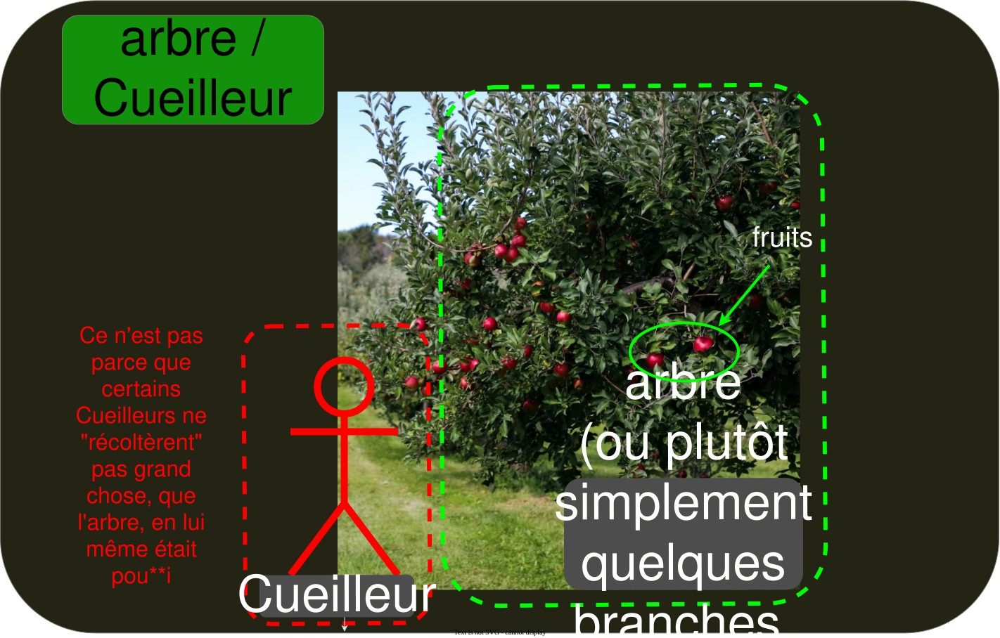 Les Chrétiens ont fait ceci en amérique du sud --> Chrétiens pas bien) Faudrait-il juger le "Christianisme" comme un "mauvais arbre"?, parce que certains, au nom du Christianisme, auraient commis ceci/cela aux amériques. De la même manière est-ce que parce-que Certains seraient "égarés" par rapport au Livre du Ciel, alors est-ce que cet égarement signifierait que le livre du Ciel serait forcément pas bien? Je dirais ce n'est pas parce qu'il y a de "mauvais Cueilleurs", que l'arbre est forcément "pourr*" (À moins qu'en parlant d'arbre gâté, Jean Rémi faisait référence au texte du livre du Ciel en lui-même, mais alors, j'estime qu'il faudrait qu'il développe, là dessus) Je dirais il est peut-être aussi un peu tôt pour avoir une vision assez globale de ce qu'auraient produits les écrits du livre du Ciel. Ces écrits auraient-ils même été compris, jusqu'à présent? |
|||||||||||||||||
| On ne trouve pas de bons fruits sur un arbre gâté. | Je dirais plutôt : un mauvais cueilleur ne peut pas trouver de bons fruits, ou sinon, pas, relativement peu, sur un arbre qui pourtant, peut-être bien, en contient. | ||||||||||||||||
| Voilà. | |||||||||||||||||
| Et bien, moi, ce que je vois de gens qui suivent Luisa Piccarreta, je vois des Gens d'un orgueil absolu. | Problématique intéressante, de chercher à comprendre s'il y eut de l'orgueil chez divers Intervenant(e)s qui se prononcèrent sur les écrits du "livre du Ciel"🌌 (Par exemple Colombine, Ignis ou Dominique Duten), je dirais. Mais assez fort, l'expression orgueil absolu, je dirais : Serait-ce le genre d'expression à réserver plutôt à des "entités" du style le diable ou l'antéChrist? Mais je dirais c'est quand même intéressant de se pencher sur la question de savoir s'il y eut de l'orgueil En l'état (mai 2025), je connais trop peu divers Intervenant(e)s sur le livre du Ciel, pour juger, pour ma part, s'il a s'agit, chez eux, "d'orgueil absolu". Je n'écarte pas qu'il puisse s'agir d'un niveau d'orgueil assez élevé, s'il se trouve que Certain(e)s se servirent du livre du Ciel, Luisa Piccarreta ou autres Mystiques catholique, pour flatter leur égo. Dominique Duten me sembla parfois faire preuve d'une certaine modestie. |
||||||||||||||||
| Désolé. | |||||||||||||||||
| Je n'ai pas dit que tous étaient comme ça. | |||||||||||||||||
| Que les gens qui suivent cela ne prennent pas mal, ce n'est pas une attaque. | |||||||||||||||||
| Je fais juste cette vidéo parce que je sens dans mon cœur qu'il me faut prévenir des abus spirituels. | |||||||||||||||||
| Je pense qu'avec cette femme, on est typiquement, avec les écrits de cette femme, dans quelque chose... | |||||||||||||||||
| En tout cas, ce que sa communauté en transparait, je vais être cru, mais j'avais appelé ça de la br*nl*tte spirituelle. | |||||||||||||||||
| Et je pense que c'est les gens qui suivent cette femme... | Peut-être en contradiction avec ce qui vient d'être dit (à 1:47) : "Et bien, moi, ce que je vois de gens qui suivent Luisa Piccarreta" (mais enfin s'est "corrigé" ensuite : "Je n'ai pas dit que tous étaient comme ça." "les gens qui suivent cette femme sont mal inspirés" | ||||||||||||||||
| Je n'ai pas dit que cette femme venait du diable, mais les gens qui suivent cette femme sont mal inspirés. | |||||||||||||||||
| Pourquoi ? Parce qu'on voit dans leurs mots, on voit dans leurs écrits, on voit dans leurs vidéos, on voit dans leurs commentaires, en tout cas de ce que j'ai vu, un orgueil absolu. |
assez fort, quand même, je dirais, l'expression orgueil absolu
Je connais, j'estime, assez peu, les vidéos de Colombine. En ce jeudi 22 mai 2025, au moment de rédiger ces quelques considérations sur une partie d'une des vidéos de Colombine, j'estime je dus en voir maximum quelques unes, et sinon totalement, partiellement. Donc je ne prétends pas porter un jugement d'ensemble. Juste je donne un point de vue sur le peu que j'en vis. |
||||||||||||||||
| Des gens qui pensent qu'ils vivent la divine volonté, c'est-à-dire qu'ils sont le fruit de la divine volonté. |
J'aurais de quoi suspecter que Jean Rémi pourrait faire référence à Colombine, pour ce qu'il dit dans ce passage. Par contre, Dominique Duten ne me sembla éméttre un avertissement
|
||||||||||||||||
| Ça se répand comme une traînée de poudre sur Internet. | Jean Rémi, vers 2:50 : "Ça se répand comme une trainée de poudre sur internet." Une trainée de poudre, je dirais, ça dépend : - collectivement, d'un point de vue d'ensemble, par rapport à la population en général : pt'être exagéré, quand même, l'expression "comme une traînée de poudre", si je considère le nombre de Gens qui semblent dans la Théologie (les vidéos de Théologies font pas bien plus de quelques centaines ou milliers de vues, en général, sauf youtubeur important) - individuellement, pour certain(e)s qui s'intéressèrent à Luisa Piccarreta, je conçois que certain(e)s firent pas mal de vidéos, oui. Et qu'il y ait eut, pour eux, un effet "trainée de poudre". Par exemple Colombine (au moins 1500 vidéos.. d'après ce que je vis sur sa chaine "Les petits enfants de la Divine Volonté - YouTube https://www.youtube.com/@lespetitsenfantsdeladivine/videos ) "Des gens qui pensent qu'ils vivent la divine volonté" Aurait-il songé à Colombine, quand Jean Rémi évoqua ceci? (Plus d'une fois, Colombine dit qu'elle plongeait dans la "divine volonté") |
||||||||||||||||
Jean Rémi / Analyse, d'une partie de sa vidéo ''les prophéties apocalyptiques d internet''
Dans cette vidéo, Jean Rémi me sembla avoir dit des choses pas mal sur les complots:
Jean Rémi. L'illumination des consciences / garabandal. Pourquoi une telle conviction que ce ne puisse arriver
Pas compris pourquoi Jean Rémi me sembla si convaincu qu'il n'y aurait pas de garabandal / "illumination des consciences". De mémoire, si je ne fait pas erreur, au moins une fois, il y a moins de 5 ans, moins de 5 ans précédants le mercredi 21 mai 2025,
se prononça aussi dans ce sens qu'il n'y aurait pas de garabandal.
| Illumination des consciences / garabandal | ||
| Quelques propos de Jean Rémi | Considérations de ma part | |
| vers 27:00: Et il n'y aura aucun événement matériel qui conditionnera votre salut ou non. Aucun événement matériel ni grande pentecôte ni grand événement ni grande illumination des consciences et cetera tout ça c'est au Ciel qu'on l'aura. |
Je compris pas trop pourquoi Jean Rémi me sembla si sûr de lui-même, qu'il n'y aurait pas "d'illumination des consciences" qui "conditionnera votre salut ou non". Je comprend pas pourquoi, avec certitude, il ne pourrait y avoir un événement mondial, qui agirait sur les consciences. Un événement qui pourrait, plus ou moins, quand même, impacter, du moins, certaines consciences et "influencer" le choix d'un tel ou d'un autre. Libre aux uns et aux autres, ensuite, d'en faire ce qu'il veulent de cet événement (si tant est qu'un tel événement arrive un jour). (Peut-être si un tel événement arrivait, Certains y croiraient mais d'autres pourraient toujours dire : c'est la cia qui a fait cet événement, ou c'est du "contrôle mind" (contrôle de l'esprit) fait par le gouvernement)... Enfin faudrait voir ce que Jean Rémi comprit par illumination des consciences. |
|
| C'est juste avant de mourir c'est à l'heure de la mort. C'est pour ça qu'on dit à la Sainte Vierge priez pour nous maintenant et à l'heure de notre mort. Parce que c'est à l'heure de la mort que vient le jugement. Après c'est trop tard on est mort. On se retrouve devant Dieu dans l'état qu'on qu'on qu'on décède. Et c'est là que on sera jugé voilà c'est là qu'il y a une grande illumination. C'est là que même les athées même les gens d'autres religions vont se retrouver devant le Christ vont se retrouver devant Dieu le vrai Dieu Père Fils et Esprit et c'est ça l'illumination des consciences wou ah mais c'était vraiment lui Dieu finalement pour un athée mais il existe vraiment finalement. Vous voyez ce que je veux dire. | ||
| Mais c'est un événement spirituel c'est un événement lié à la fin de notre vie sur terre. Et non pas dans notre vie sur terre un événement qui va prédisposer notre salut. C'est pas vrai. la C'est pas vrai. La Sainte Vierge a fait danser le soleil à Fatima et pour autant le monde entier ne s'est pas converti. Le monde entier n'a pas vu le soleil bouger c'est les gens qui étaient présents à Fatima et autour qui ont vu le soleil bouger. Elle a pas fait bouger le soleil mondialement il y aura jamais de grands signes mondiaux comme ça qui fera quelque chose d'incroyable. Si on veut vraiment les trouver on les trouve on les cherche il y a il y a le l'un seul de Turin il y a des grands miracles des Saints. |
de ce que je compris de ce que dit Jean Rémi, c'est qu'il ne croit pas qu'arrivera garabandal / l'illumination des consciences. Personnellement, je ne serais pas sûr que ça arrive garabandal / l'illumination des consciences, mais je ne suis pas sûr non plus que ça n'arrive pas. Je ne compris pas pourquoi Jean Rémi me sembla si sûr de lui-même, en déclarant il y aura jamais de grands signes mondiaux comme ça qui fera quelque chose d'incroyable. J'aurais envie de dire : qu'est-ce qu'on en sait? N'y aurait-il pas eu, par le passé, un déluge? |
|
Playlist vidéo au sujet de garabandal
|
|
Mon avis concernant la communication mondiale aux consciences (dite parfois illumination des consciences) (une communication à venir, qui aurait été évoquée, par Marie, à garabandal, du moins à Conchita Gonzalez)
J'ignore si une "illumination des consciences", ou enfin, une communication qui serait faite aux consciences, une communication mondiale telle que prévue à garabandal, une telle communication va arriver ou non. Mais ce me semblerait pas mal, comme événement. Un événement assez digne d'un Dieu assez miséricordieux, qui prévient, à l'avance, les Gens.
En plus, j'imagine cet événement (garabandal) le "dédouannerait"/déchargerait, au cas où Certain(e)s persisteraient dans telle ou telle voie écartée de lui. Ces Gens n'auraient plus qu'à s'en prendre à eux-mêmes. Il auraient été prévenus / informés.
Quelques considérations à propos de divers Intervenants, divers Intervenants s'étant prononcés sur le livre du Ciel
Depuis, de mémoire quelques années (quelques années précédants 2025), j'ai vu quelques vidéos de la chaine ignis2 (une chaine d'un vidéaste qui se prénomme Benoît, si je ne fais pas erreur (chaine youtube Ignis 2 - YouTube https://www.youtube.com/@-ignis2 ) ,quelques vidéos ou extraits vidéos de Marie Verschoote (chaine youtube https://www.youtube.com/@SousTonManteauCeleste), quelques vidéos de la Vidéaste Colombine (sa chaine youtube : Les petits enfants de la Divine Volonté - YouTube https://www.youtube.com/@lespetitsenfantsdeladivine/videos. (Voici un lien vidéo d'une compilation de quelques vidéos de Colombine : https://www.youtube.com/watch?v=dkV8gJ69od4 )), quelques passages aussi de Dominique Duten, Salvador Thomassiny ou Thomas Fahy.
Certain(e)s Intervenant(e)s sur le livre du Ciel furent-ils dans l'orgueil?, ''l'orgueil absolu''?
| Vers , Jean Rémi parle d' "orgueil absolu" concernant Certain(e?)s |
|
|
| Assez contradictoire, par moments, dans cette vidéo, ce que Jean Rémi dit : "Je pense qu'avec cette Femme, on est typiquement, avec les écrits de cette Femme, dans quelque chose, En tout cas, ce que sa communauté en transparait [...] Et je pense que c'est les gens qui suivent cette Femme...Je n'ai pas dit que cette Femme venait du diable, mais les gens qui suivent cette femme sont mal inspirés." Tantôt Jean Rémi dit les Gens qui suivent cette femme, tantôt il dit que pas tous étaient comme ça. Comme s'il commença à généraliser pour ensuite restreindre envers qui il portait son jugement. J'imagine cette "confusion" fut liée "au direct", peut-être Jean Rémi n'avait pas l'habitude de s'exprimer en vidéo. Si je devais faire un bilan, j'imagine qu'il ne pensait pas à tous les Gens qui s'intéressaient à Luisa Piccarreta, mais plutôt une partie d'entre eux. J'pense aussi que c'est quelque chose, émotionnellement, de s'interesser à tel ou tel sujet, quand on a la sensation qu'il y a une arnaque et/ou une exagération, et dans ce sens, j'imagine que Jean Rémi put être dans un emport émotionnel, quand il dit "en tout cas ce que sa communauté en transparaît" ou "les gens qui suivent cette femme". |
Divers Vidéastes ayant parlé de Luisa Piccarreta / de ses écrits, furent-ils dans l'orgueil l'"orgueil absolu"? Jean Rémi évoqua que divers Intervenants sur la divine volonté / Luisa Piccarreta avaient de l'orgueil : Pensait-il alors à au moins un de ces Intervenants : ignis / Marie Verschoote / Colombine / Dominique Duten?
J'estime l' "orgueil absolu" me semble une expression assez forte. À priori, s'ils furent dans l'erreur sur certaines de leurs déclarations sur "la divine volonté" / le livre du Ciel, je mettrais ceci plutôt à titre d'erreur, de "gaucherie", plutôt que d'orgueil "absolu". Et puis je ne les mettraient pas tous au même niveau.
Divers Intervenants sur le livre du Ciel dans un entre-soi?, une auto satisfaction ? : pas forcément, je dirais, ceci dépend de l'Intervenant(e)
(Au vendredi 25 juillet 2025, je connais relativement peu divers Intervenants sur le livre du Ciel, je construis cette partie "petit à petit")
| Pour ce passage, Dominique Duten ne me sembla pas dans l'orgueil, et même, au contraire, plutôt dans la modestie |
|
|
|
nous répondrons avec joie vos questions et à tout ce que vous désirez savoir. Bon ce que nous comprenons nous mêmes et que nous pouvons vous partager Dans ce passage (surligné en rose), Dominique Duten me sembla avoir eut une manière de parler plutôt modeste. |
Divers
Est-ce de l'orgueil? Je ne suis pas si sûr. Je dirais ça dépend pour qui. Je ne mettrais pas forcément tout le monde au même niveau.
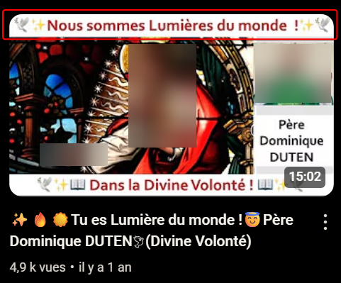
Certains évoquèrent qu'ils seraient les Apôtres de la divine volonté. Alors qu'ils soient "Apôtres" pour des cas individuels, peut-être, je ne sais pas, je suis encore en réflexion là dessus.
Par contre, à titre collectif, selon le livre du Ciel, ne devrait-il y avoir qu'un seul qui pourra véritablement faire comprendre "la divine" volonté parmi les peuples : un Mahdi? et/ou Machia'h? et/ou grand Monarque? (ou quelqu'un qui prendra un autre nom? ou la Trinité si elle revient sur la terre (sous forme glorieuse)? comme l'avait évoqué Françoise Breynaert)
| Salvador Thomassiny, à propos du livre du Ciel, un passage assez modeste, il me sembla (traduction par Dominique Duten, je dirais) (un passage plutôt modeste, mais avec une déclaration exagérée, voire "fausse", parce qu'il dit les choses en deux fois plutôt qu'une) |
||||||||
|
|
||||||||
|
Fusion dans la ''divine volonté'' et château intérieur de Thérèse d'Avila
Je me suis demandé si cet état de fusion avec la "divine volonté" correspondrait au dernier étage du
de Thérèse d'Avila. Et je vis, selon chatgpt, le dimanche 8 juin 2025, je vis que ce serait même plus loin que cet étage. À se demander si beaucoup de Gens, sur terre, actuellement seraient arrivés à cet "étage".
Chacun sa version? du livre du Ciel...
Que ce soit pour le "livre du Ciel" mais peut-être pour beaucoup d'autres livres aussi, (voire tous les livres), une phrase d'
s'appliquerait-elle?
" On ne peut trouver dans un livre que ce que l’on y a soi-même mis. " autre formulation : « Ce que l’on lit dans un livre dépend de ce que l’on est soi-même. »
source : Parerga et Paralipomena (1851), un livre d'
source : Parerga et Paralipomena (1851), un livre d'
D'ailleurs
Pour un même livre, il y aurait différence de compréhension, d'une Âme à une autre : par exemple, pas mal de "n*zis", prirent-ils le surHumain Nietzschéen pour une sorte de surHomme hyperboréen issu de la pure lignée germanique?.. Mais pour d'autres lecteurs, et aussi selon Nietzsche, son surHumain, n'était justement pas à prendre dans le sens d'un superman.
De la même manière, qu'est-ce que comprirent/comprennent certains du livre du Ciel comparé à d'autres : certain(e)s essayaieront-ils de trouver dans ce livre une sorte de moyen de s'auto prendre pour les dernières merveilles du monde?
Moi-même, ce qu'y ma semblé dans ce livre, c'est que le Fils évoquait souvent qu'il y en avait marre de la volonté Humaine.
Ce que je me demande, pour certains Intervenants du livre du Ciel, c'est si eux, cet aspect que le Fils évoquait souvent en avoir marre de la volonté Humaine, je me demande si ce ras-le-bol, certains Intervenants en parleront très peu. Et s'ils se focaliseront surtout à dire : Dieu aime les Humains... Dieu nous aime... On est les dernières merveilles du monde. On est "co-Créateurs".
| 3 types de Gens?, 3 manières de considérer? le "livre du Ciel", 3 capacités? d'impact sur les Gens pour les écrits du livre du Ciel |
||||||||
| cas 1 "les égarés" |
cas 2 relativement équilibrés |
cas 3 un seul? |
||||||
Des Gens qui cherchent peut-être pas forcément à mal faire et qui sont peut-être fatigués d'un monde peu spiritualisé. Mais aussi... des "orgueilleux"? |
← | Qui | → | Je connais assez peu Dominique Duten, mais je me demande s'il serait plutôt dans cette catégorie. C'est-à-dire une catégorie relativement intéressante, équilibrée. Peut-être Salvador Thomassiny (lien d'une chaine youtube où il apparait) aussi, mais je vis très peu de vidéos de lui, jusqu'au vendredi 27 juin 2025 |
← | Qui | → | Peut-être bien un seul Le futur Mahdi? Machia'h? Grand Monarque? (ou quelqu'un d'autre qui s'appelera autrement?) |
| Retenir surtout des passages où le Fils évoque qu'il aime bien les Humains Une manière de voir l'œuvre, une manière qui servirait surtout à se flatter, à flatter l'égo? |
← | manière de comprendre le livre du Ciel | → | Essayer davantage de faire la part des choses : Bien voir aussi que souvent, dans ce livre du Ciel Le Fils évoque qu'il y en a vraiment marre de la volonté humaine, que c'est de là précisément de là que viendraient pleins de problèmes. |
← | manière de comprendre le livre du Ciel | → | Faire la part des choses. Arriver à comprendre le livre du Ciel dans une Perspective de Trinitisation / monothéisme du monde |
| Transmission de quelques passages à quelques Gens. À se demander si même ils pourraient écarter de Dieu / dégouter du livre du Ciel. Une hypothèse aussi serait que Certains utilisent ces écrits à des fins "démoniaques" |
← | à qui arriveraient-ils transmettre divers passages du livre du Ciel | → | transmission partielle à quelques milliers ou dizaines de milliers de Gens | ← | à qui arriveraient-ils transmettre divers passages du livre du Ciel | → | transmission d'un autre niveau, à des millions, voire milliards de Gens aux nations, aux peuples |
L' ''extériorisation de la joie de divers Intervenants sur Luisa Piccarreta / Maria Valtorta
Une impression que j'eus, c'est que divers Intervenants (que ce soit Marie Verschoote, ignis2 ou Colombine) furent parfois assez expressifs, en particulier peut-être Colombine, lorsqu'ils prononcèrent souvent des expressions du style "c'est formidable" la divine volonté, "c'est merveilleux". Et je me demande, si à la longue, Certain(e)s, ceci pourrait les décourager, voire les dégouter?, de voir divers Intervenant extérioriser fréquemment leurs "états d'Âme", leurs "joies", quand ils se prononcent sur le livre du Ciel, ou autres œuvres Théologiques
Est-ce que le comportement de certains Intervenants, avec ''extériorisation de la joie'', est-ce que ce comportement pourrait être diminuant, pour Autrui (Autrui en général, ou du moins pour certain(e)s)
J'imagine parfois Quelqu'un(e) qui n'aurait pas lu Luisa Piccarreta et/ou Maria Valtorta (ou qui aurait lu juste quelques passages) et qui apprendrait que les œuvres de L.Piccarreta et M. Valtorta réunies font plus de 10000 (dix mille) pages, et que ce(tte) même Quelqu'un(e) n'aimerait pas trop lire, j'imagine que, peut-être Certains en tout cas, Certain(e)s auraient de quoi se sentir plus ou moins blasé(e)s / diminué(e)s, face à Quelqu'un(e) semblant parfois dans "l'extase" et qui dirait "c'est super/c'est formidable", la divine volonté, le livre du Ciel, Maria Valtorta, l'évangile..
|
|
Marie Verschoote me donna pas trop cette sensation qu'elle étalait sa joie.
Enfin quand même, dans une vidéo comme "La seule solution qui peut changer et sauver le monde ! - Témoignage de Marie Verschoote" - YouTube https://www.youtube.com/watch?v=XqO-fD1-FUg , une vidéo dans laquelle elle intervint pendant environ 45 minutes, je vis, avec un programme pour faire le compte de certains mots, que j'eus le mot "magnifique" : compté 8 fois, et le mot "merveilleux" : compté 3 fois.
Une certaine joie extériorisée, serait aussi à mettre en lien avec l'âge de celui/celle qui parle de Théologie (ou autres sujets). Plus il/elle est jeune, plus j'aurais de quoi comprendre qu'il soit dans une extériorisation des sentiments. (Tout autant qu'un petit chat ou un petit chien me sembla, en général, plus "mouvant" qu'un chien/chat d'âge adulte. A croire que l'âge apporte une certaine "tenue" dans l'expression des sentiments.
D'ignis, de Marie Verschoote et Colombine, la plus "extériorisante de sa "joie"", j'estime ce serait Colombine mais j'ai vu relativement peu de vidéo de Colombine et je souhaiterais pas trop juger Colombine.
Est-ce que Colombine serait son vrai prénom? un deuxième prénom? Nom de famille? S'il se trouve que c'est un pseudo, serait-ce prétentieux? comme pseudo. Orgueilleux? Aurait-elle prit ce pseudo? en référence à la colombe? Genre je suis une colombe... Colombine.
Je ne prétends pas que Colombine aurait été dans l'orgueil.
Est-ce que Colombine compris ce que serait la "divine volonté"? Comprit-t-elle divers concepts du Livre du Ciel? Je ne saurais trop. (Je rédige ceci début mai 2025). J'imagine bien qu'il ne suffirait pas que Quelqu'un(e) lise pendant des mois, voire des années, chaque semaine, un texte de Maria Valtorta et/ou Luisa Piccarreta (sachant qu'il y aurait de quoi faire, parce que ces œuvres de Maria V. et celle de L. Piccarreta feraient des milliers de pages), je me demande s'il suffirait qu'un(e) Intervenant(e) lise ceci tout en prononçant quelques vérités, pour qu'il/elle passe, pour certains, pour un "pro" mais de là à ce qu'il/elle ai forcément compris/intériorisé ce qu'aurait souhaité communiquer le Fils à Luisa Piccarreta et/ou Maria Valtorta..
L'extériorisation répétée de sa ''joie'' par rapport à des textes faisant des milliers de pages : de l'orgueil?
En fait une question qui pourrait se poser serait de savoir si "étaler sa joie" (ou enfin mettre en avant sa joie, parce que "étaler sa joie" fait peut-être péjoratif) mettre en avant fréquemment sa joie, face à des Gens qui n'ont pas lu, ou peu lu, est-ce que cette mise en avant serait de l'orgueil? : du genre : regardes, je suis un(e) pro, j'ai lu des milliers de pages, c'est super.
Est-ce que certain(e)s firent passer divers textes qui émaneraient du Fils, et/ou, ''la divine volonté'', pour quelque chose de télétubbies?
Avertissement
Je vais peut-être déplacer cette partie ''télétubbies'' dans une partie sur les Catholiques en général, plutôt que la laisser dans cette partie sur les Gens qui parlent de la divine volonté, parce que bon, il y a déjà peut-être tellement peu de Gens qui seraient dans la Théologie, en occident, que bon, ce serait peut-être "tirer sur l'ambulance", que de laisser cette partie ici. Les Gens qui parlent/s'intéressent au livre du Ciel, mériteraient beaucoup moins d'être considérés comme "télétubbies" que beaucoup d'autres prétendus Catholiques.
Considérations
|
|
| Pendant un temps j'avais sélectionné comme vidéo de télétubbies, une vidéo relativement longue (plus d'une heure) et plus représentative de la série que la vidéo que je mis finalement plus haut. Mais il me sembla entendre trop de sons de pro*ts (sons de rejet de gazs intestinaux) dans diverses vidéos de teletubbies. Pas évident de trouver une vidéo "teletubbies" où il n'y avait pas trop ce genre de sons. Dans cette vidéo plus haut, je n'eus pas trop l'impression d'entendre de sons de pro*t. De ce que je vis, ce vendredi 2 mai 2025, les " " serait une série télévisée britannique. À se demander si une partie considérable de ce peuple anglais / ces seraient sous emprise démoniaque non négligeable (depuis au moins des siècles): Leur humour, leurs .. Un peuple, pour grande partie, malade? (Comme pas mal d'autres peuples, d'ailleurs?, mais les Anglais, davantage que d'autres?) |
Est-ce que divers(es) Intervenant(e)s sur Luisa Piccarreta / la divine volonté firent passer le livre du Ciel, pour un "truc" teletubbies?
(Je ne l'affirme pas. Je m'intérroge. Je rédige ceci le vendredi 2 mai 2025) Est-ce que certain(e)s confondirent se mettre dans une sorte d'extériosation de leur joie avec comprendre divers concepts de la "divine volonté". Voire confondirent ils cette extériorisation avec vivre certains concepts de la "divine volonté".
Genre : j'ai ressenti ceci ou cela quand j'ai lu ceci ou cela de tel ou tel texte de Luisa Piccarreta, et puis je dis, c'est super, alors ça veut dire j'ai compris / j'ai vécu "le truc". Suffit que je fasse un "grand sourire" et/ou une mine "extatique".
Vidéos dans lesquelles certain(e)s parlent de télétubbies, ou barney, ou goofy
| 🐥 Certains Gens mimant ''télétubbies'', ou musique "télétubbies" 🐥 | |||||
|
passage teletubbies : autre passage : |
|
||||
|
1er passage 🐥: passage bonus 🎁🐥: |
passage goofy , vidéo sur la gauche : |
||||
|
|
|||||
Livre du Ciel et Mahdi et/ou Machia'h et/ou grand Monarque
Serait-ce possible, individuellement d'aller "dans" la divine volonté, jusqu'à une certaine "profondeur" (ou altitude) ou, en arriver à cette profondeur/altitude dépendrait d'un processus collectif?
S'il se trouve qu'un degré de proximité avec la "divine volonté" dépend d'un parcours collectif, alors j'aurais de quoi penser que la plupart des Gens qui crurent individuellement être "plongés", "submergés", dans la divine volonté, ne purent tout simplement pas l'être. Peut-être, ils ont été davantage à proximité de la "divine volonté" que la moyenne des Gens, mais peut-être pas "enfouis" dans la "divine volonté", jusqu'à un certain degré.
En fait, le rapprochement possible de Quelqu'un(e) avec la "divine volonté" devrait-il dépendre d'événements eschatologiques à venir?
| Selon le livre du Ciel, ne devrait-il y en avoir qu'un qui arriverait à faire connaitre la "divine volonté" parmi les peuples? |
|
|
|
Ton Jésus saura trouver sa voie pour trouver celui qui accomplira la mission de faire connaître ma Divine Volonté parmi les peuples. |
En fait, si un jour devait survenir une croisade, avec apparition d'un Mahdi et/ou Machia'h et/ou grand Monarque (ou non), c'est peut-être à ce moment-ci où il y aurait de quoi voir qui est vraiment plutôt du côté du Fils ou non.
Je me demande aussi si véritablement une compréhension collective du livre du Ciel, voire une "immixtion" de la "divine volonté" chez les Gens, un investissement plus net des Gens par la "divine volonté", je me demande si cet investissement ne pourrait être possible qu'à partir de l'émergence d'un Mahdi et/ou Machia'h et/ou grand Monarque ou l'apparition du Fils. Ou enfin d'un événement de groupe (mondial éventuellement).
En fait je me demande si les Gens qui croiraient pour le moment être rentrés, individuellement, jusqu'à un certain degré, dans la divine volonté se tromperaient sur leur degré de proximité avec la "divine volonté". Exceptés peut-être pour certaines Âmes assez spéciales, mais j'imagine, ces Âmes, justement, elles seraient quantitativement très rares, voire très très rares.

La Vidéaste Colombine. Mon point de vue / mes questionnements
Préambule / 🕊️?🐶🐩?
Colombine, une Fille qui me sembla déclarer, depuis des années, qu'elle entrait dans la divine volonté..
Je ne serais pas étonné avoir déjà rencontré il y a plusieurs années, Colombine, du moins durant mon adolescence, tant elle me sembla ressembler à une Fille de ce temps là.
Plusieurs points concorderaient à me faire croire qu'il s'agit bien de la même Fille :
- une ressemblance physique
- sa manière de parler souvent à l'impératif
- son comportement dirigeant / Capitaine
- da mémoire cette Fille qui ressemble à Colombine, au moins une fois, avait parlé de J*sus (ou si ce ne fut elle, Quelqu'un d'autre qui me parla qu'elle avait déjà de ce temps là une certaine approche relationnelle par rapport à Jésus). Je ne serais pas non plus étonné que la statue de Jésus que Colombine eut au cours de centaines de ses vidéos youtube, cette statue, elle l'avait déjà, il y a plus de 20 ans. Ou si ce n'est la même que celle de ses vidéos, une autre qu'elle aurait remplacée par la statue visible dans beaucoup de ses vidéos youtube.
J'ai commencé
(J'ai constaté que depuis quelques mois, quelques mois précédant début 2026, j'eus l'impression que ses temps d'intro où elle semblait prier, me semblèrent raccourcis, du genre d'une demi heure à quelques minutes.)
De ce que je compris, Colombine déclara plus d'une fois qu'elle entrait dans la divine volonté. Je n'affirme pas avec certitude que Colombine serait entrée, ou qu'elle ne serait pas entrée dans la divine volonté. Ce serait de ma part comme estimer que je saurais déjà ce que serais cette divine volonté, or je ne suis pas sûr, justement, de ce que serait la divine volonté. Dans un passage du livre du Ciel il me sembla être fait un distinguo entre faire la divine volonté et être dans la divine volonté.
Pour Colombine, il me sembla plutôt qu'elle déclara plus d'une fois qu'elle entrait dans la divine volonté.
Dans cet partie sur Colombine, entre autres, j'essaye de comprendre si Colombine fut dans la divine volonté. Aurait-elle été :
- Dans la divine volonté et véritablement bienfaitrice de milliards d'âmes.. au Ciel et sur la terre.. (j'aurais de quoi déduire qu'elle se considéra comme bienfaitrice de milliard d'âmes, d'après certains de ses propos de fin décembre 2025)
- Ou plutôt Colombine ne fut pas dans la divine volonté et même certains de ses comportements auraient put même l'écarter de la divine volonté.
Dans cette partie Colombine, je cite des passages des vidéos de Colombine, des passages de Maria Valtorta et des passages de Luisa Piccarreta. Peut-être ces passages permettront de mieux se faire une idée.
Colombine dans la divine volonté? : Laisser faire J*sus et multiplier les phrases à l'impératif : Un niveau de contradiction départemental?
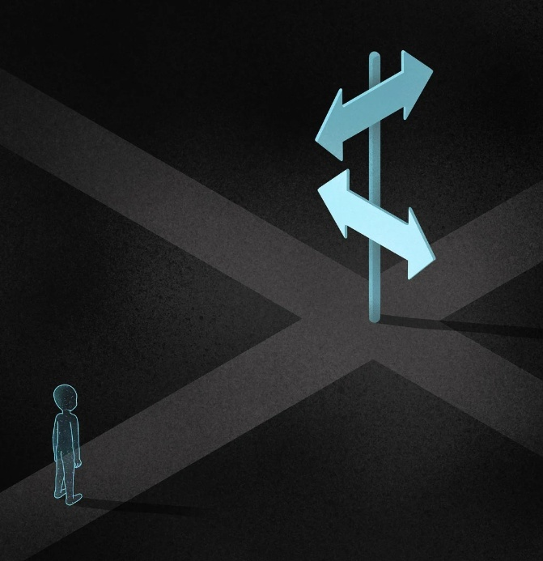
J'ai utilisé le mot / l'adjectif "départemental", surtout parce qu'il y a quelques années, si Colombine serait bien la même Fille que j'avais déjà rencontré, j'avais déjà dut penser qu'il y avait chez elle quelques chose de particulier, quelque chose d'une certaine envergure. Une envergure d'un niveau, d'un niveau au moins départemental. Mais en réalité, maintenant, des années, après cette considération qu'il y avait chez elle quelque chose de départemental, maintenant, l'adjectif régional et même national, me semblerait davantage adapté pour elle. Voire international. Maintenant, comparé à il y a plusieurs années, elle eut sa chaine youtube, ses 100aines de vidéos publiques.
Vidéos publiques + sa manière d'accumuler des phrases à l'impératif.. Un cas.
Pour
À qui Colombine, parfois, dut me faire penser
Colombine / Leia, de star wars, ressemblance
Je ne serais pas étonné, des années avant que Colombine produise des vidéos, avoir déjà vu ailleurs Colombine. De mémoire, déjà, il y a des années, elle avait du me faire parfois penser à Leia, de la série de film star wars. Leia en particulier des épisodes 4, 5 et 6 de star wars. Je connais moins les épisodes suivants.
| Princesse Leia, en tant qu'Héroïne principale, dans star wars 4, 5 et 6 : Colombine, de mémoire, déjà il y a plusieurs années, me fit parfois penser à cette Actrice dans la série star wars | ||
|
||
|
|
|
De mémoire, peut-être bien aussi avant que je vis pour la première fois une des vidéos youtube de Colombine, – Colombine me fit songer/penser à la Princesse Leia, de star wars (
) : Une Fille Brune, cheveux long. Comme une ressemblance, je dirais, entre Colombine et Leia, une ressemblance comportementale et physique.
Et depuis des années, je dus considérer qu'en tant qu'Héroïne principale, Carrie Fisher le fit moyennement, comme Héroïne, dans star wars 4, 5 et 6. Tantôt Luke Skywalker me sembla pouvoir le faire, comme Héros, tantôt Obi-wan, tantôt Harrisson Ford pour Han solo, mais Leia, en tant qu'Héroïne principale, comme si je ressentis quelque chose qui clochait. Comme si Leia me sembla avoir un aspect
, sûre d'elle-même. Mise à jour du jeudi 26 mars 2026 et du dimanche 10 mai 2026 : pendant quelques semaines, avant le jeudi 26 mars 2026, dans cette partie, j'avais utilisé le mot "bêcheuse", à propos de Colombine, mais ce serait peut-être déplacé/exagéré, donc je le remplace par "forte tête".
Je ne prétend pas que Colombine aurait un aspect forte tête du même niveau que Leia dans star wars. Et puis je ne pense pas que ce fut le trait de caractère principal de Colombine, il y a plusieurs années. Une autre Fille brune, d'un âge semblable à celui de Colombine, avait dû me faire penser bien davantage que Colombine, à l'aspect forte tête de Leia.
Si tant est que Colombine eut cet aspect forte tête, je dirais c'aurait été plutôt de temps en temps et il y a plusieurs années, plutôt que maintenant (2026 lorsque je rédige cette phrase) et continuellement. S'il se trouve qu'elle eut des Enfants, je suspecte peut-être ceci modifia comportementalement Colombine.
| avant Enfants | après Enfants | |
| aspect forte tête, mais ce n'aurait pas été son trait de caractère principal, je dirais. Dans ses vidéos ce qu'y me sembla caractériser spécifiquement Colombine, ce serait la quantité de phrases à l'impératif qu'elle prononce. (J'ai revérifié le jeudi 26 mars 2026). Dans ce comportement, une sorte cas rare, sinon unique? "départemental". |
moins tendue ? / plus calme? |
Par ailleurs attention, j'imagine que peut-être Carrie Fisher, dans son quotidien, ne ressemblait pas au rôle qui lui fut attribué pour star wars. Et puis, j'imagine Carrie Fisher évolua, après, avec l'âge. (Je connais relativement peu son parcours, hors ces films star wars).
De plus, si y aurait pas trop de quoi comprendre en quoi Leia aurait vraiment un statut d'Héroïne principale, dans divers épisode de star wars, Leia n'est pas appelée Reine (mais Princesse Leia), alors que dans d'autres épisodes star wars, l'Héroïne, par exemple Padmé Amidala serait Reine, de statut.
Dans d'autres films, l'Actrice sensée jouer le rôle de l'Héroïne principale, me firent davantage la sensation Héroïne, que Carrie Fisher comme Héroïne dans star wars. Par exemple – mais enfin pour les dessins animés, – la belle au bois dormant, dans la belle au bois dormant, ou blanche neige.
Colombine / Fréderic Delavier / ressemblance
Colombine dut parfois me faire penser à Frédéric Delavier, pour ses intros de vidéo fréquemment semblables, d'une vidéo à l'autre.
| intro typique de Colombine | Intro typique de F. Delavier | ||
| Bonjour à tous. | Salut, c'est Frédéric Delavier, ce soir je voulais vous faire une petite vidéo, une petite vidéo pour.. | ||
| Prenons un moment aujourd'hui pour continuer à lire et méditer le volume ... du livre du ciel de Luisa Piccarreta | ← phrase à l'impératif | ||
| Au nom du Père qui me crée, du Fils qui me sauve et du Esprit qui me sanctifie. Amen. | |||
| J*sus, une fois de plus, nous entrons dans ta divine volonté | ← update du jeudi 26 mars 2026 : j'ai écouté ce jour le début de sa vidéo du même jour et j'eus l'impression pour sa vidéo que Colombine avait changée d'intro. J'entendis pas le "une fois de plus, nous entrons dans ta divine Volonté". Ce qui serait peut-être mieux. Peut-être plus modeste. | ||
| ↑ citation de la vidéo de Colombine, du lundi 5 janvier 2026 et j'ai vérifié qu'intro semblable pour la vidéo suivante d'il y a deux ans : Le Divin Fiat est l'Acte primordial de tous les actes humains et de toutes les choses créées (T24,9) - YouTube https://www.youtube.com/watch?v=l_TCTw8BBPY |
Colombine / Michel Onfray, ressemblance
D'autre part Colombine, parfois, dut me faire penser à Michel Onfray:
- Peut-être pour l'aspect parfois caricatural (voire gauche?), mais ⚠️ attention, je ne souhaiterais pas trop la comparer à M. Onfray, ne serait-ce que parce que j'ai assez peu lu M. Onfray. Juste je donne une sensation. Certains passages de l'émission à propos de Michel Onfray, que j'ai évoqué en page 2 de ce site internet, certains passages s'appliqueraient-ils aussi à Colombine?
À se demander si Colombine comme M. Onfray feraient parti de ces Âmes qui auraient une sorte de "joie de vivre", une énergie qui proviendrait du fait qu'elles auraient souvent quelque chose à gagner de la part d'autrui.
-Pour la quantité aussi de vidéo produites par Colombine (+de 1800, au lundi 5 janvier 2026), y aurait-il un parallèle faisable, par rapport à Michel Onfray qui produisit au moins 80 livres.
Y aurait-il une ressemblance? entre Colombine et Judas l'iscariote, d'après l'Évangile tel qu'il m'a été révélé, de Maria Valtorta
Une ressemblance? Judas / Colombine, dans la manière de s'adresser à Jés*s
|
|
|
"Nous irons donc demain et après demain, jusqu'au lendemain du sabbat et nous resterons dans une cabane de branchages dans la vallée du cédron, en parfaits Israëlites. Eux se lasseront de t'attendre, et alors, tu viendras. En attendant, tu resteras ici, tranquille, à te reposer. Tu es épuisé mon Maitre, et nous ne le voulons pas." ↑ dans cet extrait, plusieurs verbes à l'indicatif, mais un indicatif qui me sembla ressembler à de l'impératif |
De mémoire, pour avoir écouté, il y a moins de 5 ans, au moins les 3/4 (trois quarts) de l'Évangile tel qu'il m'a été révélé, de
, j'ai le souvenir que sinon un seul Apôtre, un des rares Apôtres, qui parlait à J*sus en lui faisant autant de phrases à l'impératif, c'était Judas l'Iscariote. (Peut-être y eut-il d'autres Apôtres qui employèrent souvent des phrases à l'impératif, mais si tant est qu'il en eut d'autres, je n'ai pas le souvenir qu'il y en eut beaucoup). J'ajouterais peut-être ici des passages de cet Évangile dicté à Maria Valtorta, des passages où Judas aurait parlé à l'impératif, à Jés*s.. (J'ai rédigé cette phrase précédente, le samedi 23 mai 2026).
Une ressemblance? Judas / Colombine, pour l'aspect Meneur / Meneuse
|
|
Dans une autre partie de l'oeuvre de M. Valtorta il est évoqué que Judas avait cette mentalité de Meneur. Et Colombine aussi, me sembla se présenter comme une sorte d'Explicatrice / Meneuse du livre du Ciel.
Rajout du mardi 26 mai 2026 : j'ai trouvé ce passage, et en réalité, dans la traduction que j'eus, c'est le mot "Faiseur" qui me sembla employé.
"Jésus dit : mon regard avait lu dans le cœur de judas Iscariote. Personne ne doit penser, que la sagesse de Dieu n'a pas été capable de comprendre ce cœur. Mais, comme je l'ai dit à ma Mère, il le fallait. Malheur à lui d'avoir été le traître mais un traître, il le fallait. Plein de duplicité, d'astuces, avide, luxurieux, voleur et intelligent. Et cultivé. Plus que la masse des gens. Il avait su s'imposer à tous. Audacieux il m'aplanissait le chemin même, s'il était difficile. Il aimait surtout sortir du rang et faire valoir sa place de confiance auprès de moi. Sa serviabilité ne venait pas de la charité, mais il était uniquement ce que vous appelleriez un Faiseur"
Attention, j'imagine bien que ce ne serait pas parce que Quelqu'un serait Meneur ou Meneuse qu'il serait forcément un Judas. Il y aurait Meneur et Meneur : Moïse / Pharaon, grand Chef / et "Cheffeton"(Cheffaillon), Penseur et Politicien, etc.
Certains trouveront peut-être des ressemblances Judas / Colombine, mais je dirais attention ⚠️
| ⚠️ attention, je n'ai pas rédigé que Judas = Colombine.. | ||
| Judas | Colombine | |
| Je dirais Judas, en général avait assez conscience qu'il faisait le mal. | La différence, s'il se trouve que Colombine fit le mal, je dirais c'est qu'en général Colombine l'aurait fait beaucoup plus par innocence, par immaturité. | |
| En général, aurait fait exprès | En général, fit même pas exprès | |
Attention, ce n'est pas que je voudrais exagérer et dire que Colombine, avec ses fréquentes phrases à l'impératif ressembl(a)erait vraiment à
. Je n'évoque pas que Colombine = Judas. Ce serait aller trop loin. Déjà, Colombine ne me sembla pas être un Garçon et puis j'imagine certaines circonstances familiales, que ce soit pour Colombine d'avoir eu des Enfants dernièrement, mais aussi une autre circonstance familiale, (une circonstance familiale, dont j'eus connaissance il y a plusieurs, années, si Colombine correspond bien à cette même Fille), j'imagine ces circonstances l'auraient poussées à assez souvent essayer d'assister autrui. Que l'assistance d'autrui passe par une production de phrases à l'impératif, je puis le concevoir, ça prendrait un sens. J'imagine ces situations familiales l'aurait peut-être influencée à dire aussi souvent des phrases à l'impératif. Donc Colombine, j'estime, aurait cette excuse que n'aurait pas eu un Judas l'iscariote.
Par contre, attention, J*sus ne serait tout de même pas un Enfant de moins de 10ans. Et ce ne serait pas parce qu'il pourrait être adapté de dire à un Enfant de moins de 10 ans, parfois, des phrases à l'impératif, que j'estime qu'il serait adapté d'en dire si souvent à Jés*s.
Update de fin décembre 2025, début 2026 /Colombine
Update de fin décembre 2025, début 2026 : j'ai écouté il y a quelques jours une vidéo de Colombine : L'âme qui vit dans la Divine Volonté vit dans les hauteurs! (T12,3) - lien youtube : https://www.youtube.com/watch?v=7XwPPgY11NY .
|
|
|||
|
|
Jésus, une fois de plus, nous entrons en Toi, dans ta divine volonté. Nous nous fondons en Toi. Nous nous identifions à Toi. Nous nous unissons à ton humanité, à ta divinité, à ta volonté. Nous consumons en Toi. Nous fusionnons nos volontés dans la tienne |
← D'après ce que dit Colombine, de quoi avoir l'impression qu'elle cru être entrée dans la dv, non? s'être fusionnée avec J*sus |
||
|
|
Donc c'est parce qu'on fait aujourd'hui |
C'est parce que Colombine fit cette vidéo que des Âmes du passé ont pu aller jusqu'au martyre.. |
||
|
|
Tu nous as montré déjà à de multiples reprises combien nos actes sont magnifiques 👍 et incroyables et produisent tellement de bienfaits pour pour 👐 tous les Saints, les Bienheureux, la Cour céleste, mais aussi les Âmes ici-bas. |
|
||
Pour le pseudo Colombine de cette Vidéaste youtube, à partir de fin décembre 2025, le site devrait plutôt afficher maintenant Colombine avec un remplacement de la 4ème lettre de Colombine (un o), par une image chien suivie d'un point d'interrogation : ? parce que je dus me demander si cette Vidéaste eut, et aurait encore, vraiment, un problème de modestie, voire, un problème d'orgueil, à se déclarer comme entrée dans la divine volonté, fusionnée avec J*sus. Colombine, depuis des années, aurait-elle été un cas d'immodestie d'une autre dimension? Un cas départemental? régional? national? voire davantage?
Mais peut-être que non. Je ne déclare pas que Colombine ne serait pas dans la divine volonté, mais je m'intérroge. S'il se trouve que Colombine ne fut ni ne serait pas vraiment dans la divine volonté, ce ne serait pas l'aider que d'abonder dans son sens et de la considérer comme véritablement une petite colombe, et donc garder le pseudo Colombine tel quel. S'il se trouve que Colombine fut dans un comportement en partie gauche,
, négativement occidental, alors insérer le symbole du chien dans son pseudo, serait peut-être plus adapté. Alors pour ce site,
Colombine → Col mbine. Update du mardi 20 janvier 2026: finalement, je rédige ce pseudo avec plutôt de nouvelles formes, pour les lettres, plutôt que d'y insérer une tête de chien suivie d'un point d'interrogation. Ce sera peut-être plus respectueux.
Par ailleurs, la situation me sembla pas si évidente. Parce que peut-être Colombine serait dans la divine volonté. Mais depuis des mois, et encore maintenant, je dus y croire moyennement quand même que Colombine serait dans la dv. Aurait-elle vécue des états semblables à ceux de Luisa Piccarreta? Je n'ai pas trouvé sur sa chaine youtube de vidéo spéciale où elle aurait parlé qu'elle aurait vécu des états semblables. Y aurait de quoi suspecter qu'elle vécue des états semblables, puisqu'elle dit qu'elle entrait dans la dv, mais je n'ai pas le souvenir l'avoir entendu dire qu'elle fit des sorties de corps et/ou avait été alitée. (Je n'estime pas qu'il faudrait forcément être alité(e) pour être dans la divine volonté.)
La sensation que j'eus, dernièrement (fin 2025 quand je rédige cette phrase), la sensation que j'eus, concernant la méthode de Colombine, fut que 1. elle part du principe qu'elle serait dans la divine volonté et donc que 2. eh bien puisqu'elle se croit y être, alors tout ce qu'elle dirait, tout – ou enfin , du moins, une grande partie – de ce qu'elle ferait, serait merveilleux. Or, y aurait quand même, une question fondamentale, et sinon simplement une question, un problème : Colombine fut elle dans la divine volonté. Si tel ne fut pas le cas, alors une grande partie de son "système", ou enfin de sa méthode, une grande partie s'écroulerait. (Y aurait-il même de quoi se demander si elle s'en écarta?, de la divine volonté)
Ce à quoi j'ai réfléchi aussi, dernièrement, c'est que la manière de Colombine de se déclarer dans la divine volonté (comme quoi elle se fondait en J*sus, elle entrait dans sa Divine Volonté), je suspecte cette manière de faire irait à l'encontre de pouvoir y être, dans la divine volonté. Parce que cette manière de fréquemment s'auto-déclarer comme étant dans la divine volonté, ceci ne pourrait-il ressembler à de l'immodestie. Cette manière de s'auto valider, de s'auto déclarer que l'on serait dans la divine volonté, que l'on y rentrerait. Dans l'hypothèse où Colombine ne serait pas dans la divine volonté, dans cette hypothèse, n'y aurait-il pas un problème comportemental à se déclarer être dans la divine volonté, de sa part? Car s'autodéclarer comme étant dans la divine volonté serait alors comme de l'immodestie, et en réalité, je suspecte que ceci pourrait même écarter Colombine d'aller vers la divine volonté, ou d'être dedans.
Quand j'imagine Quelqu'un(e) de relativement modeste, je me dis déjà que par rapport à une œuvre assez vaste comme celle de Luisa Piccarreta (une œuvre faisant des milliers de pages), déjà, il/elle serait bien plus prudent/précautionneux : déjà il/elle se dirait que c'est une œuvre assez vaste (des milliers de pages) et il/elle se demanderait qu'est-ce que serait cette divine volonté. Moi même je doute de qu'est-ce que ce serait exactement cette divine volonté. Et puis quand j'imagine Quelqu'un(e) de relativement modeste, j'imagine aussi qu'il/elle hésiterait avant de se déclarer comme étant dans cette divine volonté :
1. il/elle douterait de ce que serait la divine volonté.
2. il/elle garderait des pincettes, une prudence, avant de se déclarer qu'il/elle serait dedans.
3. Y aurait aussi un autre point, un autre questionnement, ce serait tout de même de s'intérroger pour savoir si oui ou non, cette œuvre de Luisa Piccarreta émana bien du Fils. / Une question d'authenticité de son oeuvre.
Observation : Des déclarations contradictoires?
|
Des contradictions fréquentes? : se déclarer dans la dv, mais demander malgré que l'on se déclare y être, demander que J*sus vienne |
||||
|
vidéo de fin décembre 2025 (le 29 ou sinon le 29, proche du 29) de quoi avoir l'impression que Colombine se croit encore dans la divine volonté, non? comme entrée dedans? selon cette déclaration au début de la vidéo : J*sus, une fois de plus, nous entrons en toi dans ta divine volonté. Nous nous fondons en toi, nous nous identifions à toi, nous nous consumons en toi. Nous fusionnons nos volontés dans la tienne |
|
Une question qui pourrait se poser à laquelle j'ai pensé, c'est : si Colombine déclare qu'elle est fusionnée dans la divine volonté, pourquoi ensuite demander de venir à J*sus : Viens agir à travers nos mains, marcher à travers nos pas. Viens faire palpiter nos cœurs, Seigneur. Que ce soit ton Cœur qui palpite à l'unisson avec chacun de nos cœurs et qu'à chacun de ses battements, tout comme à chacun de nos actes, de nos mouvements internes, externes, conscient, inconscient, volontaire, involontaire, tu puisses recevoir des flots d'amour, de louange, de bénédiction, de réparation, Seigneur. |
|
|
Qu'est-ce que y a besoin de demander de venir à J*sus, si l'on y est déjà, en lui et/ou dans la dv. N'y serait-il pas déjà là? Ne serait-ce pas inutile alors de lui demander de venir? et même pénible pour J*sus. Genre comme il serait pénible de demander quelque chose à Quelqu'un, alors qu'il serait déjà en train de le faire. ? Ne serait-ce pas laisser planer que l'on ne lui ferait pas confiance. Déclarer être dans la dv puis quelques dizaines de secondes plus tard demander à J*sus de venir, ne serait-ce pas contradictoire? Quelqu'un(e) qui serait véritablement dans la dv, n'aurait-il pas déjà un sentiment de plénitude? Et donc si il/elle avait cette plénitude, à quoi bon alors demander à J*sus de venir (de toute façon Il serait déjà là, non?). Y eut-il contradiction? Ce dut me laisser suspecter que Colombine ne fut pas dans la dv, malgré qu'elle le déclara en début de vidéo. (D'ailleurs j'imagine, elle déclara bien plus d'une fois être dans la dv, car, de mémoire, dans d'autres vidéos, j'entendis une une intro semblable à cette vidéo plus haut.) |
||||
| Dire à l'impératif à J*sus de faire ceci cela, alors qu'Il le ferait déjà.. | |||||||
|
|
||||||
|
|||||||
À se demander ce que Colombine fit, depuis quelques années. À passer une partie importante de son temps à dire qu'elle laissait faire J*sus tout en lui disant fais ceci, fais cela, viens ici, viens là. Y aurait-il eut un niveau de contradiction élevé.
Je me demande si Colombine fit un transfert : Parce que peut-être pour des Filles, en général, peut-être il faudrait leur dire fait ceci ou fait cela, avant qu'elles s'activent et alors dans ce sens Colombine transposa-t-elle comment elle souhaiterait à elle que l'on s'adresse, et elle aurait transposé ceci à J*sus. Or Il ne serait ni une Fille, ni un Humain comme les autres. Ni un Enfant de moins de 10 ans.
Contradiction? : La quantité de phrases à l'impératif prononcées par Colombine, écarta? Colombine de la divine volonté? Là aussi, je dus me demander si cette manière de faire, avec ses phrases fréquentes à l'impératif, ses phrases à l'impératif adressées à J*sus, je dus me demander si ceci l'écarta de la divine volonté.
Alors Colombine fut-elle dans la dv? y entra-t-elle? Dans l'hypothèse où Colombine ne fut pas dans la dv, dans quoi Colombine aurait-elle été? : Une comédie? Un rôle? Une maladie? Aurait-elle même été malade?
|
|
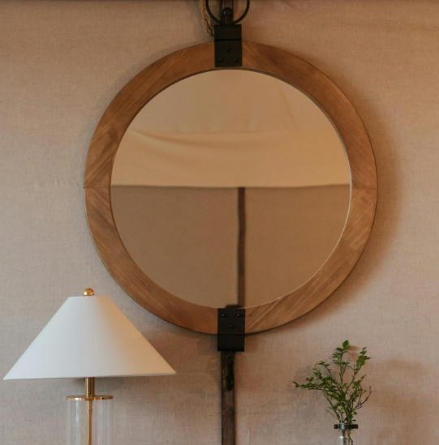 |
|
|
Colombine vraiment
|
- Questionnement : Colombine aurait-elle été, – depuis des années? – à travers la plupart de ses vidéos, dans une comédie? (attention je n'affirme pas que Colombine fut dans une comédie, mais je pose une question), une comédie dans le sens où Colombine aurait eut conscience qu'elle ne serait pas forcément à 100% dans la divine volonté, ni toujours, mais qu'en réalité, consciente de ceci, Colombine aurait pris un rôle, plutôt pour se faire remarquer? Est-ce qu'elle aurait fait exprès de répéter souvent qu'elle entrait dans la divine volonté (je n'ai pas regardé toutes ses vidéos, mais je suspecte que souvent, du moins en intro, elle répéta être dans la divine volonté. Ce qu'elle me sembla dire, par exemple, dernièrement, dans au moins une vidéo de fin décembre 2025).
De mémoire, ne serait-ce que pour ceci, je ne dus être pas à l'aise, parfois, de rédiger ceci ou cela, sur cette Vidéaste (Colombine), parce que je ne souhaiterais pas non plus rentrer dans une "comédie", si tant qu'elle joua une comédie.
Mais enfin comme je doute qu'elle fit la comédie/ qu'elle fit exprès.. Et puis s'il se trouve que Colombine ne fut pas dans la dv ou en tout cas bien moins que ce qu'elle déclara, alors y aurait aussi des Filles peut-être beaucoup plus modestes, qui à la limite, elles, mériteraient davantage que je passe du temps pour elles. - Questionnement : Au départ, Colombine prit-elle à elle seule l'initiative de se lancer dans cette série de maintenant (fin 2025) cette série de plus de 1800 vidéos? et/ou un Prêtre ou des Gens de cette Communauté l'aurai(en)t incitée à se lancer dans cette série?
Dans ce sens, Colombine aurait été, et sera peut-être ,véritablement une Messagère/Colombine, dans le sens où indirectement, passivement, elle aurait été Archétypale/ miroir / reflet de la psyche de beaucoup d'Occidentaux. Un miroir grossissant de quel serait la conception d'une Divinité, pour beaucoup d'Occidentaux : une sorte de self-service.
Colombine et sa manière de s'exprimer à J*sus : y eut-il de l'excès? fut-elle pénible?
Dans les quelques vidéos de Colombine sur le livre du Ciel que je vis, j'eus l'impression qu'au début de ces vidéos sur le livre du Ciel, Colombine commençait par au moins 5 minutes, mais je dirais même plutôt 10 voire 15 minutes, pendant lesquelles Colombine faisait des sortes de demandes au Fils/à J*sus (pendant ~environ ½ heure, pour cette vidéo).
Or déjà, un tel temps de "prière", serait-ce convenable?
Vierge Marie et Maria Valtorta, prières et silence(s) / Colombine
|
|
|
Extrait d'un message qu'aurait tenu la Vierge Marie à Maria Valtorta, le 2 décembre 1943 : "Prier ne signifie pas dire beaucoup de prières. Cela signifie aimer. Cela signifie faire parler son propre cœur. Je suis la silencieuse, nouvelle Ève. Je vous enseigne le silence. C'est par la parole que la séduction entra en Ève. C'est par mon silence que la rédemption entra dans le monde. Apprenez de moi la vertu du silence, car dans le silence extérieur le cœur parle à Dieu et Dieu au cœur. Mon silence n'était pas le silence inerte d'une Âme morte. Il était au contraire une œuvre très active sur le plan spirituel". |
Quelle conception aurait eu la Vierge Marie de la prière? La vidéo ci-contre éclairera peut-être davantage.
Est-ce que Colombine, au niveau de ses demandes/appels qu'elle fit à J*sus, est-ce que Colombine serait concernée par ces paroles qu'aurait tenues la Vierge, en décembre 1943, concernant la prière et le silence (paroles d'un passage de la vidéo ci-contre).
Pour les vidéos de Colombine dans lesquelles Colombine parle du livre du Ciel, pour ~le premier quart de la vidéo, quand elle demande "ceci cela" à J*sus, j'eus de quoi me demander, si oui, Colombine exagérait.
Par contre pour les ~3/4 restant de ce genre de vidéo de Colombine, comme ce n'est pas forcément de la prière, ce passage de la Vierge, la concernerait sinon pas, bien moins (mais enfin je serais pas étonné qu'assez souvent, même dans les 3 derniers quarts des vidéos de Colombine sur le livre du Ciel, assez souvent, dans ces 3/4 de temps, par moments elle demanda ceci ou cela au Fils).
Colombine / Les phrases à l'impératif adressées au Fils
Des verbes à l'impératif, en quantité
| Selon tchatgpt, j'eus pour les ~3 premières minutes de la vidéo de Colombine "La Divine Volonté nous appelle continuellement dans Ses actes afin tout nous donner! (T35,28)", j'eus 13 verbes à l'impératif : Voici un extrait (un peu modifié pour le texte, mais pas pour le compte final) voici un extrait de tchatgpt : |
|
| Voici le dénombrement des verbes à l’impératif dans les 3 premières minutes de la vidéo mentionnée. 🔍 Méthodologie : Un verbe à l’impératif est un verbe conjugué à ce mode (présent de l’impératif) et utilisé pour donner un ordre, formuler un souhait, une invitation, une prière, etc. 📌 Liste des verbes à l’impératif relevés : Prenons (v.0:01) Lis ou lisez est implicite (« pour lire » = infinitif utilisé, donc non compté). Viens (x3) (v.1:50 → « viens les ennoblir », « viens les sanctifier », « viens retirer ») Arrache (x2) (v.2:00 → « arrache ces mauvaises choses », « arrache ces mauvais comportements ») Purifie-nous (v.2:05) Recrée (v.2:07) Marque-nous (v.2:41) Marque (x2) (v.2:42 → « marque chacune… », « marque-nous… ») Investis-nous (v.2:45) Enchaîne-nous (v.3:28) Garde-nous (v.3:36) Consume-nous (v.3:37) ➡️ Total des verbes à l’impératif : 13 |
au moins 10 verbes à l'impératif dans les 3 premières minutes de cette vidéo https://www.youtube.com/watch?v=NJcP25yBnRg |
Quelque chose dont j'eus l'impression avec Colombine, pour les quelques vidéos que j'en vis, c'est qu'elle employait souvent des verbes à l'impératif. Et cette manière de parler à l'impératif, je me demande, s'il y a un Dieu, si à ce Dieu, si ceci lui aurait convenu. Au niveau du nombre de phrases à l'impératif, par exemple, pour la vidéo "La Divine Volonté nous appelle continuellement dans Ses actes afin tout nous donner! (T35,28)" (https://www.youtube.com/watch?v=NJcP25yBnRg), avec un logiciel, j'ai fait un compte des verbes à l'impératif, et j'eus, pour cette seule vidéo, 133 tournures de phrases à l'impératif (je prétends pas que le code pour compter ces verbes était "parfait" et que le compte soit bon, mais il donne déjà un ordre d'idée).
| Est-ce qu'à force de demander à J*sus "purifies nous", etc. Est-ce que ces demandes (voire ordres?) de Colombine purent être, pour le Fils, pénibles? Je ne prétend pas que les demandes ("ordres") de Colombine auraient eut le même effet que l'effet qu'auraient eues les attentes/demandes de Luisa Piccarreta. Juste je m'interroge si cette manière de demander à l'impératif aurait pu être pénible. Est-ce que ce serait une question de quantité, aussi? Genre demander une fois par jour, ou une fois par semaine.. Mais demander au moins 10, voire 100 fois par jour... |
|
|
|
vers , dans la vidéo plus haut, ce qu'aurait déclaré le Fils, à Luisa Piccarreta, tome4, partie6, "livre du Ciel": Ma Fille, tu es la cause de mon plus grand martyre. Parce que, lorsque je dois envoyer quelque châtiment, je ne peux pas me manifester à toi. C'est parce -que tu me lies de toutes parts et -que tu ne veux pas que Je fasse quoi que ce soit. D'un autre côté, quand Je ne viens pas, -tu me casses la tête avec tes plaintes, tes lamentations et tes attentes. |
Si pour cette vidéo ("La Divine Volonté nous appelle continuellement dans Ses actes afin tout nous donner! (T35,28)"), si pour cette vidéo, au total, il y eut au moins 100 verbes à l'impératif et que Colombine aurait publié dans les 1600 vidéos (jusqu'à début juin 2025), alors si pour ces vidéos, en prenant pour moyenne 100 verbes à l'impératif par vidéo, je fais une estimation, ceci ferait que Colombine aurait prononcé, depuis quelques années, au moins des dizaines de milliers de fois des verbes à l'impératif. Des phrases du style : Jésus fait ceci, fait cela, J*sus donnes-nous ceci, donnes-nous cela (ou d'autres fois, quand ce n'était pas à J*sus qu'elle s'adressait, j'imagine elle dit des verbes à l'impératif mais pour s'adresser au public).
Personnellement, depuis pas mal d'années, que ce soit chez certain(e)s Mystiques ou chez d'autres Gens, ce type de phrases à l'impératif, ce type de phrases qui me semblèrent comme donner des ordres à Dieu, plus ou moins ces phrases durent me "chiffonner".
Serait-ce plus fréquent, en général, chez les Occidentaux, de parler à Dieu comme on parle à un chien, plus fréquent que chez les Orientaux. (Il me sembla que beaucoup d'Occidentaux donnèrent de l'importance aux chiens, aux jeux de balles/ballons)
Je ne prête pas à divers Occidentaux qu'ils eurent forcément de la méchanceté, de parler ainsi.
De base, n'y eut-il pas, depuis des années, (voire des siècles) comme un truc bizarre à demander (voire ordonner) ceci-cela à un Dieu? : genre c'est comme si on parlait à un Dieu en lui disant : allé, fais-ceci, fais-cela, donnes moi ceci, donnes moi cela. Comme l'impression que ceux/celles qui lui "parlèrent" ainsi, comme l'impression qu'ils/elles se croyaient au supermarché 🛒 et/ou limite en face d'un chien 🐶 (ou un chat 🐱), un animal de compagnie auquel ils donneraient des ordres.
Dans une relation essentiellement consommatrice
Comme l'impression que c'était comme si ils/elles commandaient quelque chose à Quelqu'un. N'y eut-il pas, dans cette manière de "parler" (limite exiger) à un Dieu, n'y aurait-il pas quelque chose qui pourrait même tenir de l'irrespect? voire de la violence. Une forme de brutalité? Quelque chose de poussif? Dieu, déjà, ne donnerait-il pas en permanence ceci/cela? Y aurait-il besoin de le "pousser"?
Pour un Dieu, vaudrait-il mieux employer certaines expressions et dire : s'il te plait, s'il te convient, s'il te plait, si je le mérite,(et encore ne vaudrait-il pas mieux le vouvoyer): daignez me donner ceci, daignez me donner cela, plutôt que de dire directement : fais ceci, fais cela, donnes nous ceci, donnes nous cela. (Je ne serais pas étonné que même Certains dirent dépèches-toi, fais vite). Genre : d'où tu parlerais à un Dieu comme au "premier venu"? C'est quoi cette manière de commander/demander?
Un extrait musical qui reposera peut-être Certains de toutes ces phrases à l'impératif
Peut-être ceci reposera , au moins un peu, Certain(s) qui seraient fatigués de toutes ces phrases à l'impératif
extrait musical de sans vouloir te commander. Chanté par Stephan Eicher
Origine, chez Colombine de s'exprimer souvent à l'impératif, à J*sus
- Cette manière de parler souvent à l'impératif, provint-elle, chez Colombine, d'une origine occidentale? Puisque divers Occidentaux me semblèrent vraiment aimer les chiens, et que le chien me sembla un animal fétiche de l'occident (l'occident qui me sembla avoir comme un culte/une obnubilation pour les balles/les ballons, comme les chiens), certains Occidentaux/Occidentales firent-ils une sorte de transfert dans leur manière de s'addresser à Dieu? Genre divers Occidentaux aimeraient qu'on leur parle "comme" a des chiens? (le chien m'ayant semblé l'animal fétiche de l'occident) et donc des Occidentaux parlèrent ensuite à Dieu "comme" à un chien? Croyant bien faire? Il lui parlèrent comme à eux ils aimeraient qu'on leur parle? Et même sans se rendre compte, que Dieu ne serait pas un chien.
(Après, chacun(e) fait bien ce qu'il/elle veut, dit bien ce qu'elle veut (il y aurait le principe du libre arbitre, sur cette planète), je donne juste ma sensation sur l'effet que me firent, en général, ces nombreuses phrases à l'impératif.)
- Parce que Colombine aurait eu des enfants, assez récemment. J'imagine que quand on a eut récemment des Enfants, on est amener souvent à leur dire fais ceci, fais cela. On est amené à les diriger, ne serait-ce qu'un minimum. Alors peut-être cette situation avec des Enfants influença Colombine, ensuite, dans sa manière de parler à J*sus, dans ses vidéos de ces dernières années (depuis 2022, au moins). (Si une grande partie de la journée, elle eut l'habitude de dire à tel ou tel de ses Enfants : fais ceci, fais cela, au bout d'un moment elle prit naturellement l'habitude de donner des ordres, elle prit l'habitude de parler à l'impératif. Ainis, je ne ne porte pas forcément de mauvaises intentions à Colombine dans cette manière de s'être souvent adressée à l'impératif à J*sus. Peut-être cette manière de parler fut liée, en partie, à une situation familiale.
Une vidéo par rapport à la manière de demander à J*sus: y aurait pas à le pousser
"Je viens quand, où, et comme Je veux. À l'heure et dans les circonstances, que, Je veux. Je vous parle comme, Je le veux."
"Je dis bien personne, pas même un Saint, peut s'imposer à Dieu et lui dire :"viens, je te l'ordonne"
|
||
|
|
||
| Je ne prétends pas que Colombine aurait dit "je te l'ordonne". Mais Colombine, depuis des années, à travers, j'estime, des milliers de phrases à l'impératif, ses phrases à l'impératif ne purrent-elles tout de même donner une sensation d'ordres donnés. Une ambiance. (En français il y aurait 7 modes verbaux. et sur ces 7 modes, le mode de l'impératif, serait le mode pour donner des ordres (vu sur chatgpt le samedi 5 juillet 2025)) |
Colombine : dire que l'on laisse faire Dieu et fréquemment lui demander/''ordonner'' ceci cela : comme une contradiction?
N'y eut-il pas une forte contradiction dans le comportement de Colombine, pendant des années, quand
| d'un côté, Colombine dit : | d'un autre côté, Colombine dit | |
| J*sus fais ce que tu veux de nous, nous te donnons notre volonté, nous te laissons les rênes | "purifies nous", "investis nous", "consumes-nous" (ou autre phrases à l'impératif) | |
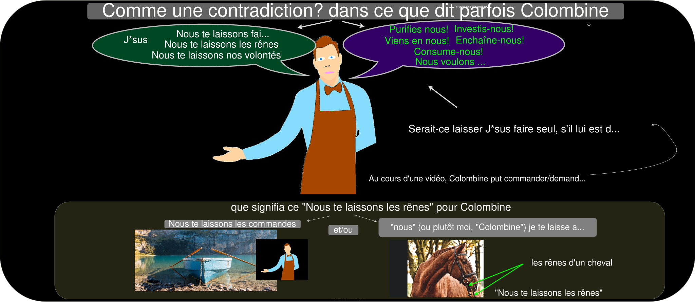 |
||
Est-ce bien laisser faire J*sus à sa manière que de lui dire "fais ceci/ fais cela". N'est-ce pas plutôt — évidemment — comme lui donner des ordres?
En quoi serait-ce compatible d'ordonner – ou demander à l'impératif – quelque chose à Quelqu'un (et même peut-être bien plus que simplement Quelqu'un : Dieu) et le laisser faire tout à fait à sa manière.
Étrange / contradictoire situation, il me sembla. Pour faire une analogie, je me suis dit que cette ambiance avec Colombine ressemblerait à l'ambiance où Quelqu'un, sur un bateau, dirait à celui/celle qui tiendrait le gouvernail :
| d'un côté il/elle dirait | mais d'un autre côté, il/elle lui dirait | |
| vas-y fais comme tu veux, mènes le bateau où tu veux, tu es à la manœuvre⛵ | va à droite, va plus vite, amène le bateau par ici, va à gauche, ralentit🎠 | |
| N'y aurait une forte contradiction ? | ||
En fait, il y aurait de quoi se demander : qu'est-ce que tu "veux?" : laisser faire celui/celle qui tient la barre, ou tu veux le "télé"guider? : Qu'est-ce que tu veux?
| Concernant le fait de ne pas laisser faire Dieu, ne pas lui laisser les commandes : Un épisode de ce qu'aurait vu Maria Valtorta. Un épisode avec une barque⛵. Du moins Pierre, André, Jacques et Jean auraient souhaités faire par eux-mêmes. Laissant le Fils de côté. |
|
|
Colombine et sa compréhension, ou non? compréhension, de ce que serait être dans la ''divine volonté''
Colombine / Une confusion entre joie de la maternité et submersion/complet plongeon dans la ''divine volonté''?
|
|
|
Ce qu'aurait dit la V. Marie à Maria Valtorta "Il n'y a pas de joie plus grande après celle d'aimer le Seigneur que d'être mère d'un Enfant à soi et de dire : je t'ai formé, je t'ai portée et nourri." |
D'après ce qu'aurait évoqué la V. Marie à Maria Valtorta, "Il n'y a pas de joie plus grande après celle d'aimer le Seigneur que d'être mère d'un Enfant à soi" et Colombine eut 5 Enfants, au cours des dernières années selon ce que je vis sur au moins une des vidéos, (j'imagine les siens). Est-ce que cette maternité, est-ce qu' avoir des Enfants donna à Colombine la sensation d'être entrée dans la "divine volonté"? Est-ce que Colombine confondit — cette joie de l'enfantement évoquée par la V. Marie — avec une "immersion" dans la divine volonté.. (Parfois Colombine dit "Nous fusionnons nos volontés dans la tienne.","nous nous immergeons en toi, dans ta divine volonté")
Plongeons, 💦 immersions 🤿 dans la ''divine volonté''..
| Un extrait vidéo qui pourrait s'appliquer à Colombine? ou non? |
|
|
Quand
|
2 extraits audio de Colombine |
||
|
|
||
| "Plongeon" solitaire et immersion solitaire | "Immersion" collective | |
|
|
quelques secondes extraites de la vidéo de Colombine : "L'Âme qui vit dans la Divine Volonté est porteuse d'un amour nouveau, conquérant et opérant (T36,20)", vers 14:00 lien : https://youtu.be/AKXXTTlkeoQ?t=14 Qui serait ce nous? Colombine + ses Enfants? + qui d'autre? Plein de Gens sont en train de s'immerger? |
|
Y eut-il con(comme)-fusion et/ou confusion?
Colombine / Une confusion? entre sorties de corps d'une Âme qui aurait été exceptionnelle (L. Piccarreta) et ''fusion'' de Colombine avec la ''divine volonté''
Sortie de corps
Colombine 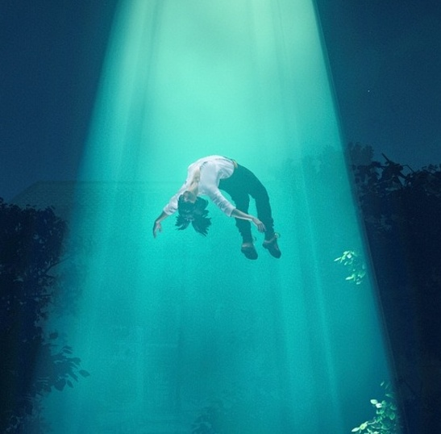
En fait, des Âmes telles que celle de Luisa Piccarreta il y en aurait eu très peu, voire pas, j'estime, depuis le milieu du XXème siècle, depuis Luisa Piccarreta. Si j'ai compris quelque chose au livre du Ciel, Luisa Piccarreta faisait des sortes de "sorties de corps". A chaque fois? Au moins des centaines de fois, elle aurait été en sortie de corps.
Est-ce que quand Colombine dit "nous nous fusionnons" avec la divine volonté (d'ailleurs qui inclurait ce "nous"?), quand Colombine dit "nous nous fusionnons" avec la divine volonté, est-ce que cette "fusion" correspondit à ce qu'aurait fait Luisa Piccarreta? Luisa Piccarreta qui aurait été alitée pendant des décennies.. Colombine aurait-elle fait des "sorties de corps" ? Aurait-elle été alitée? Si oui pendant combien de temps?
En plus des sorties de corps, Luisa Piccarreta rédiger assez souvent l'expression "mon état habituel".
État habituel de Luisa Piccarreta
Luisa Piccarreta me sembla avoir souvent rédigé l'expression "mon état habituel". Par exemple : "Étant dans mon état habituel, complètement immergée dans mon aimable Jésus" J'ai cherché le nombre d'occurence de l'expression "dans mon état habituel" et j'eus à peu près 500 occurrences.
Est-ce que Colombine se serait retrouvée dans un état semblable à celui de Luisa Piccarreta, un état semblable à ce que Luisa Piccarreta aurait rédigée :"dans mon état habituel".
Tableau Luisa Piccarreta / Colombine
| Relation de Luisa Piccarreta avec la divine volonté : | la "fusion", la "submersion" de Colombine avec la "divine volonté" |
|
| du moins en partie, des sorties de corps | des sorties de corps? | |
| Pour le moment (mardi 10 juin 2025), je ne suis pas sûr si à chaque fois c'était des sorties de corps (il faudrait que "j'explore" davantage le livre du Ciel) |
Est-ce que
Serait-elle, ou fut-elle pendant des années ou même simplement quelques semaines d'affilées, dans des conditions d'existence semblables à celles de (c'est-à-dire alitée quasi continuellement, en mangeant quasiment rien). |
Colombine, véritable Explicatrice ayant compris le Livre du Ciel, ou avant tout, surtout, un caractère, un cas
Colombine / la statue de J*sus à sa droite
Sur certaines vidéos de Colombine, Colombine me sembla avoir une statue à sa droite  (et pas une seule, sur au moins 100 vidéos de sa chaine (Je n'ai pas compté toutes 😐, je ne serais pas étonné que ce fut sur + de 1000 vidéos que Colombine). Cette statue représente le Fils avec une main levée comme s'il était en train de prêcher certaines paroles. Est-ce que cette statue ferait style : "Je vous parle, c'est comme si c'était J*sus qui vous parle." Genre c'est J*sus qui vous parle. Genre je suis en train de vous prêcher la bonne parole parce qu'à côté de moi, vous voyez, y a une statue de Jé*us. Écoutez c'est J*sus qui est en train de vous parler.
(et pas une seule, sur au moins 100 vidéos de sa chaine (Je n'ai pas compté toutes 😐, je ne serais pas étonné que ce fut sur + de 1000 vidéos que Colombine). Cette statue représente le Fils avec une main levée comme s'il était en train de prêcher certaines paroles. Est-ce que cette statue ferait style : "Je vous parle, c'est comme si c'était J*sus qui vous parle." Genre c'est J*sus qui vous parle. Genre je suis en train de vous prêcher la bonne parole parce qu'à côté de moi, vous voyez, y a une statue de Jé*us. Écoutez c'est J*sus qui est en train de vous parler.
Je ne prête pas à Colombine l'intention de se prendre pour Dieu, je ne sais pas si elle eut cette intention ou non.
Je ne prête pas à Colombine l'intention de se prendre pour Dieu, je ne sais pas si elle eut cette intention ou non.
Colombine dans la compréhension du livre du Ciel, ou, plutôt/surtout, Occidentale, récipient/reflet de la volonté Humaine?
En fait, Colombine fut-elle grande Explicatrice / Théologienne du livre livre du Ciel, fut-elle, elle même, dans la "divine volonté" ("submergée" dedans..) ou Colombine fut-elle plutôt un reflet pour se rendre compte de ce que peut signifier – une partie du moins – de la volonté Humaine (la volonté Humaine plutôt occidentale, je dirais, pour Colombine).
Colombine fut-elle vraiment perspicace dans sa compréhension du livre du Ciel, ou avant tout, fut-elle un caractère? Est-ce que son approche du livre du Ciel est vraiment une compréhension pertinente de divers passages du livre du Ciel, ou y aurait-il eut, partiellement, méprise, par moments? (Quand par exemple elle évoque se submerger dans la "divine volonté".)
| Colombine | Colombine | ||||
| Surtout un caractère, une Fille très sûre d'elle-même Archétype? Occidentale : pas forcément méchante, mais pas forcément non-gaffeuse non plus? Capable de sortir des déclarations — fausses? — en toute conviction : genre qu'elle se plonge complétement dans la "divine volonté" (ou que "nous" nous y plongeons (qui serait inclus dans ce "nous")?). Je ne serais pas étonné non plus que dans une même vidéo ou dans des vidéos décalées de quelques jours elle déclara que tantôt elle était dans la divine volonté et que parce-qu'elle y était dedans (ou "nous") alors nous recevons ceci cela de J*sus, et tantôt elle déclare que quand nous y serons dedans, alors il nous arrivera ceci ou cela : alors quoi penser? y serait-on dedans ou non? tantôt oui, tantôt non.. |
ceci? ← |
ou |
plutôt ceci? → |
Fille très perspicace? Capable d'expliquer, sur des heures et des heures, depuis des années, (dans plus de 1500 vidéos), le livre du Ciel |
|
| ou un mélange des deux? | |||||
Colombine, son sourire sur les couvertures vidéos de sa chaine youtube
Sur de nombreuses couvertures youtube des vidéos de Colombine, voire sur la grande majorité de ses couvertures youtube (faudrait vérifier si ce serait su r la majorité de ses couvertures mais je ne serais pas étonné que ce soit le cas), sur beaucoup de ses images de couverture vidéo youtube, Colombine me sembla faire un sourire assez appuyé. Or il me sembla que Luisa Piccarreta, sur quelques photos qui auraient été prises d'elle, de son vivant, il ne me sembla pas que Luisa Piccarreta faisait un grand sourire. Voire même au moins une fois, elle me sembla plutôt comme peinée, voire attristée. Alors avec tous ces sourires de Colombine, sur ses couvertures de vidéos youtube, là encore, fut-on dans la caricature? (Je rédige ceci le samedi 23 mai 2026, mais j'avais repéré ceci déjà, je dirais, il y a plusieurs mois avant.)
J'ai quelques doutes, mais je ne serais pas étonné, qu'il y a déjà plus de vingt ans, Colombine avait fait valoir, au moins une fois, qu'il était important que quand on était pris en photo, il fallait faire un sourire.
| Présenter certaines oeuvres de Théologie (par exemple le livre du Ciel), présenter ces oeuvres en montrant dents blanches systématiquement, serait-ce une manière adéquate de présenter ces oeuvres? Serait-ce caricatural de les présenter avec sourire et dents blanches? Serait-ce réducteur? |
|
|
|
En vérité je vous dis encore une fois que ce n'est pas une joie tranquille d'être mon Instrument : c'est une fatigue et un effort continuels, en tout c'est de la douleur car aux Disciples du Maître le monde donne ce qu'il a donné au Maître : de la douleur; |
Pour présenter (voire croire expliquer) le livre du Ciel, cette manière de présenter souvent un grand sourire, ceci clôcherait-il? Car même si Luisa Piccarreta aurait été une des très rares Âmes à vivre des moments de joie intense par rapport au Christ, il n'en serait pas moins que dans beaucoup d'autres moments, j'imagine Luisa Piccarreta était en souffrance, en languissement, en attente, et elle même alors ne faisait-elle pas tant que ceci un grand sourire, mais même parfois, plutôt la moue.
⚠️ ce n'est pas par là que je dirais qu'il faudrait que Colombine fasse la moue. Mais croire que pour ses couvertures de vidéos youtube, il faudrait faire à chaque fois un grand sourire.. serait-ce caricatural? Ne serait-ce pas prendre le risque de faire passer un certain Christianisme pour quelque chose de caricatural? ⚠️ je ne dis pas non plus que des Gens qui auraient souvent une joie, un sourire, ce serait forcément négatif, excessif. Mais attention, le sourire de Colombine fut-il justement véritable, ou n'y aurait-il eut quelque chose qui aurait tenu de l'exagération, de l'excessivité? Y aurait sourire et sourire.. Et puis y aurait un problème d'intelligence, aussi : quand on croit qu'on a compris des textes du genre des textes comme le livre du Ciel, une oeuvre faisant des milliers de pages, un texte de Théologie pouvant sembler quand même assez vaste, voire long, ne serait-ce que pour ne pas risquer de mettre mal à l'aise des Gens qui auraient des difficultés face à un texte si long, il serait aussi peut-être une question d'intelligence de ne pas se présenter soi-même comme tout joyeux, tout joyeux d'avoir compris ce texte (ou croire l'avoir compris), pour justement essayer d'éviter que des Débutants se sentent comme écrasés.
|
|
Dans l'extrait audio ci-contre, il aurait été évoqué à Maria Valtorta que l'on ne changerait pas la V. Marie en une Femme:
- excessivement, morbidement exaltée, ou
- glacialement égoïste
Marie est ce qu'elle est, et on ne change pas la douce, pure, affectueuse Fille d'Israël, Epouse de Dieu, Mère virginale de Dieu, en une femme excessivement, morbidement exaltée, ou une femme glacialement égoïste de votre siècle.
Certaines couvertures de vidéos youtube à propos du Livre du Ciel / à propos de la divine volonté
J'ignore qui serait l'Administrateur de la chaine https://www.youtube.com/@Amen_Fiat/videos. Mais je vis sur cette chaine youtube plusieurs couvertures avec une Luisa Piccarreta représentée souriante. Présenter, souvent, Luisa Piccarreta, sur diverses images, de cette manière, c'est-à-dire avec un grand sourire, ne serait-ce pas déjà réducteur?
| Jean Rémi : "Moi, ce que je vois, de Gens qui suivent Luisa Piccarreta, je vois des Gens, d'un orgueil absolu. Désolé. J'ai pas dis que tous étaient comme ça." |
|
|
| Comme évoqué plus haut dans cette page religion, je ne dirais pas comme Jean Rémi orgueil absolu, mais j'aurais de quoi me demander si Certains furent dans l'orgueil. |
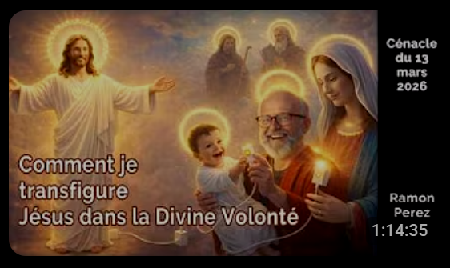
Un des rares qui dut me reposer de certains comportements de Certains qui se prétendirent dans la divine volonté, un des seuls qui serait peut-être davantage lui dans la vérité voire même davantage dans la divine volonté que d'Autres, c'aurait été Jean Rémi, (et par ailleurs, dans une autre mesure, il y a quelques années, Mathieu B. alias Claude (Mathieu B. qui réalisa quelques vidéos à propos du catholicisme)), Jean Rémi qui se serait demandé (voire davantage que demandé) si certains Gens, par rapport au Livre du Ciel, auraient été dans l'orgueil. De ma part, y aurait de quoi se demander si divers Gens ayant prétendu qu'lis transfiguraient J*sus ou qu'ils seraient dans la divine volonté et parce qu'il seraient dans la dv, ils seraient les Sauveurs du monde, j'aurais de quoi me demander s'il furent dans une sorte d'orgueil en col blanc. Une sorte d'orgueil en toute innocence. Orgueil tout sourire.
| Dans ce tableau, quelques images extraites de l'onglet videos de la chaine youtube Amen Fiat - La Divine Volonté . ou de recherche Des images dans lesquelles soit Luisa Piccarreta apparait souriante, soit Certains se prétendent Tansfigurateurs, etc. de J*sus.. |
||||
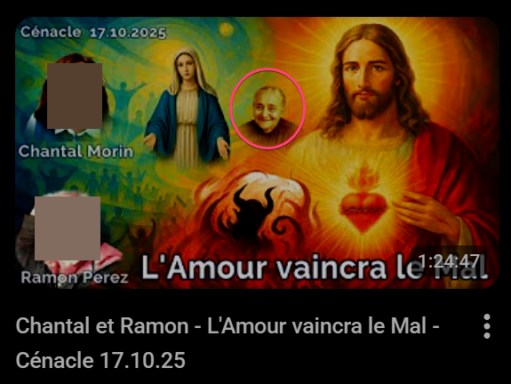 |
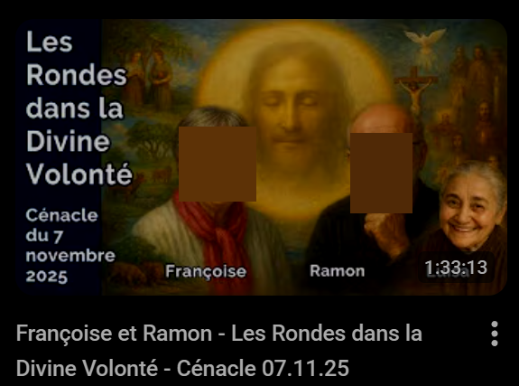 |
|||
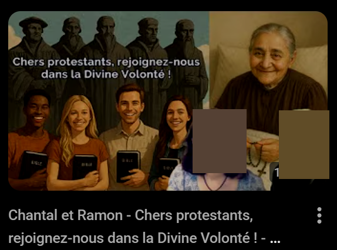 |
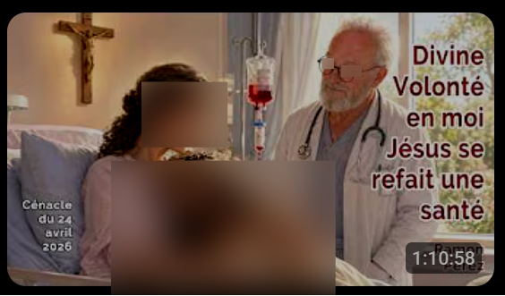 |
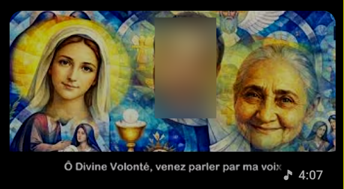 |
||
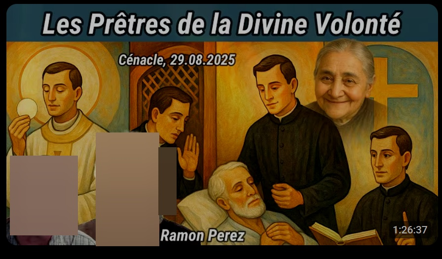 |
||||
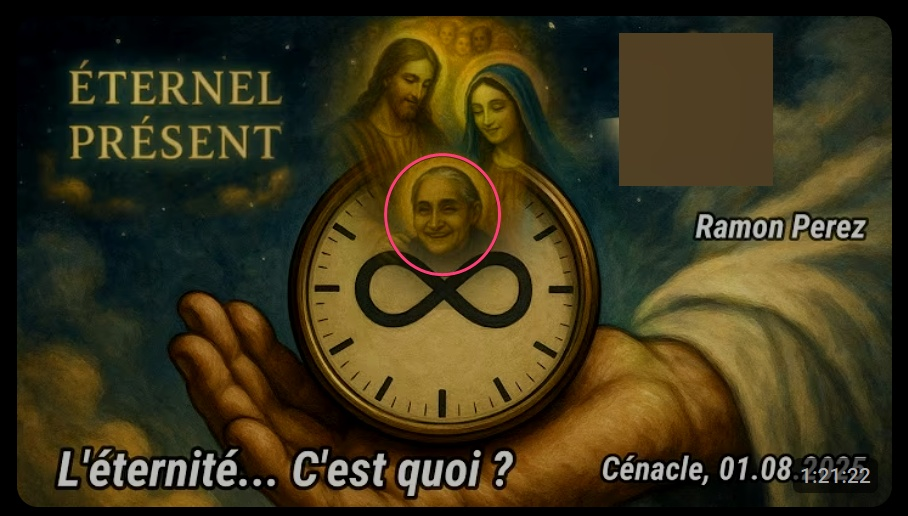 |
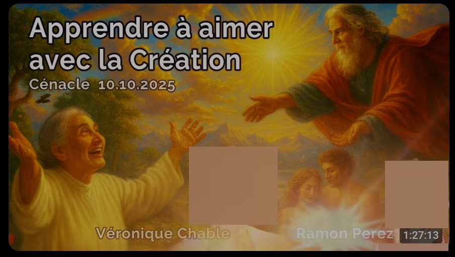 |
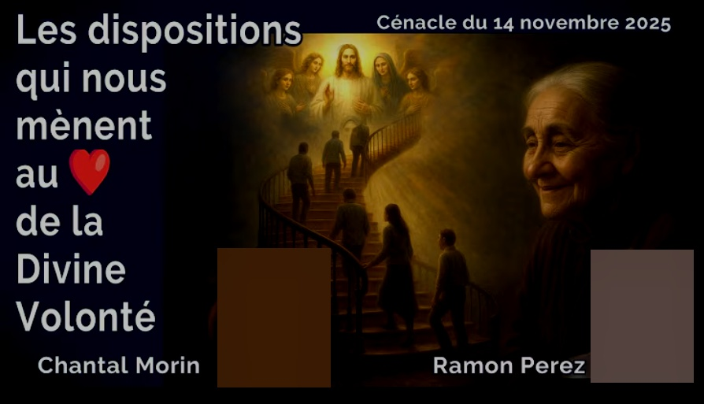 |
||
Colombine / Bilan provisoire / À priori / questionnements
Comportementalement, Colombine fut-elle plutôt une Fille plongée "complétement" dans la "divine volonté" (comme elle le dit, bien plus d'une fois, depuis des années, qu'elle se plongeait "complétement" (ou que nous nous plongions complétement)), fut-elle ainsi véritablement plongée complétement dans la "divine volonté", ou fut-elle avant tout un caractère. Depuis le début de la rédaction de cette partie sur Colombine, pour avoir avoir écouté davantage certains passages vidéos de Colombine je me demande en fait si avant même qu'elle se plongea véritablement "complétement" dans la "divine volonté", Colombine fut plutôt un récipient de la volonté humaine et un reflet de la volonté Humaine. Un récipient qui depuis des années extériorise souvent ce que peut représenter la volonté Humaine. Par ses manières de fréquemment donner des ordres (ou enfin faire des demandes / faire des phrases à l'impératif), ces comportements me semblèrent plutôt refléter la volonté Humaine. C'est l'à priori/sensation, que j'ai, pour le moment.
Je conçois que par moments, Colombine ait fait des déclarations vraies, sur le livre du Ciel. Sur des milliers de pages de cette œuvre, j'imagine bien qu'elle ait dit des déclarations assez simples, vraies. Mais se poserait quand même la question de savoir si elle a mélangé des déclarations vraies avec des affirmations qui serait, pour le mois, "à revoir" (voire fausses) : du genre qu'elle se plongeait complétement dans la divine volonté.
Une question serait de savoir si non seulement
- il y eut des déclarations, pour le moins, "hasardeuses" et
- s'il y eut exagération à demander/ordonner souvent ceci/cela à J*sus : à partir de quelques vidéos que je vis, pendant que Colombine parla du livre du Ciel, souvent elle me sembla donner de temps en temps des "ordres" au Fils. Du genre elle va lire tel ou tel passage, puis elle va dire Viens J*sus, fais ceci, fais cela.
J'imagine, parfois, certaines Filles, tout en douceur, tout en finesse, elle suggéreraient à un Garçon, d'agir. Avec Colombine, depuis des années, y aurait-il eut quelque chose de poussif? (Même envers le Fils). Comme l'impression qu'il eut parfois un "poussage". Plutôt un poussage qu'une suggestion "tout en douceur". (Avec une accumulation de phrases à l'impréatif (de quoi estimer, que Colombine prononça des dizaines de milliers de phrases à l'impératif, depuis quelques années.)
Mais enfin une partie du comportement de Colombine aurait représenté un "poussage", ceci dépend pour qui, je suspecte. Je me demande si pour des Orientaux (plutôt félin, dans la finesse (je dirais pour le chat/les félins en général, la finesse est naturellement incarnée, mais les félins/Orientaux ne seraient pas trop obéissants, plutôt sauvages)), je me demande si en général, pour des Orientaux, Colombine semblerait plutôt poussive, mais pour des Occidentaux (plutôt de mentalité "chien", plutôt orientés obéissance (ordre/commandes) (peut-être pas tellement naturellement "gracieux" comme les félins, mais par contre davantage travailleurs)), peut-être Colombine semblerait-elle davantage non poussive.
| Colombine impact chez des Occidentaux comparé à impact chez des Orientaux |
|||
| Pour des Occidentaux |
Pour des Orientaux |
||
| Moins "fins" / moins naturellement gracieux Mais plus obéissants / plus travailleurs / Moins sauvages / moins sanguins |
Plus fins / gracieux Mais moins obéissants, plus sauvages, plus sanguins |
||
| Même si Colombine donna des "ordres" souvent, ou du moins souvent dit des phrases à l'impératif ("Prenons un moment tous ensemble aujourd'hui pour continuer à lire et méditer le volume .. " / J*sus donnes nous, J*sus viens), pour un Occidental, j'imagine, il aimerait plutôt bien, ou du moins, n'y verrait pas trop d'inconvénient | Pour un Oriental, cette manière qu'eus Colombine de donner fréquemment des ordres, pour un Oriental, ces manières lui sembleraient/seraient pénibles? | ||
| Pas mal d'Occidentaux, j'estime étant plutôt de mentalité chien | Pas mal d'Orientaux me sembleraient plutôt de mentalité félin | ||
| Colombine, j'imagine, pourrait, pour des Occidentaux, leur être assez adaptée (Enfin pour ceux étant dans la Théologie, c'est-à-dire peut-être pas grand monde actuellement (j'ai revu cette phrase le vendredi 27 mars 2026)) |
|||
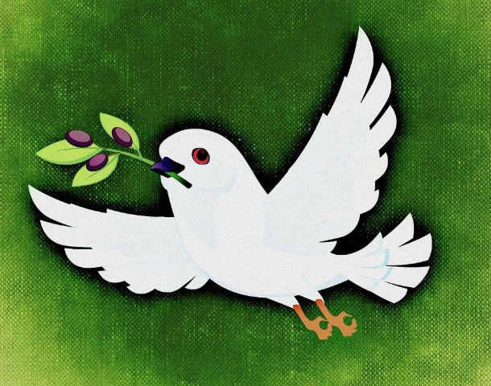 |
 |
Pour un Oriental mental, Colombine ne pourrait pas vraiment faire l'illusion d'une petite colombe ? | |
| Des Orientaux pourraient prendre le pseudo Colombine pour de l'immodestie?, une faute de goût? | |||
| Les demandes / "aboiements" de Colombine dérangeraient pas forcément un Occidental mental, qui en général aime bien les chiens | Pour un oriental mental peut-être les aboiements / demandes, lui seraient davantage pénibles qu'à un Occidental. | ||
L'impression d'une Archétype occidentale. À se demander si beaucoup d'Occidentaux auraient comme besoin d'être commandés. Et si dans beaucoup de comportements, Colombine exprima cette orientation occidentale. Est-ce que comment Colombine commanda souvent ceci /cela à J*sus, est-ce que ces commandes/demandes seraient un reflet de la psyche occidentale. Comme s'ils parlaient au Fils comme ils souhaiteraient qu'eux leur parle. Mais cette manière d'ordonner/demander à J*sus ne pourrait-elle poser problème? Car le Fils serait le Fils. Et il n'y aurait pas à s'adresser au Fils, comme le Fils s'adresserait à des Occidentaux ou des Orientaux.
Est-ce que le Fils souhaiterait qu'on lui ordonne/commande ceci cela : d'après certains extraits du livre du Ciel, j'eus pour le moins de quoi en douter, et même y aurait de quoi penser, que parfois, venant de Luisa Piccarreta, ses demandes lui auraient été pénible. Y aurait diverses manières de "demander" : la Vierge Marie l'aurait évoqué à Maria Valtorta : "Prier ne signifie pas dire beaucoup de prières. Cela signifie aimer. Cela signifie faire parler son propre cœur. Je suis la silencieuse, nouvelle Ève. Je vous enseigne le silence. C'est par la parole que la séduction entra en Ève. C'est par mon silence que la rédemption entra dans le monde."

Anne Bernet
| Gemma Galgani / Anne Bernet Un montage de ma part |
||||||||||
 |
||||||||||
|
|
||||||||||
|
|
||||||||||
Françoise Breynaert
J'ai déjà vu plusieurs pages du site
et écouté diverses vidéos de ce site. Je dirais qu'il me sembla présenté sur ce site une des perceptions les plus justes qui soit. Si ce ne fut sur certains points:
- La "conviction" de Françoise Breynaert qu'il y aurait un bel avenir.
- Sa conception du système scolaire et du système professionnel.
- Françoise Breynaert me sembla assez convaincue que le retour glorieux du Fils se ferait sans présence physique.
- Par ailleurs, elle me sembla assez convaincue sur la notion d'Âme sœur.
Françoise Breynaert - L'école et les systèmes professionnels
|
"Vous pouvez faire des études d'architecte, de tout ce que vous voulez. Y a un bel avenir" |
|
|
|
"Il faut dire aux jeunes attention vous avez un bel avenir". Faudrait-il dire aux Jeunes qu'ils ont un bel avenir. Je dirais on peut être aussi parfois en université sous aura "démoniaque" et avoir un avenir pourri si on stagne dans ces universités. À se demander si elle, ou d'autres de son âge ou environ, se seraient rendu compte de ce que serait devenu ce système scolaire. |
J'eus comme un doute que Françoise Breynaert et beaucoup de Créatures de sa génération, se rendirent compte de la gravité que représentait le système scolaire occidental actuel et, en général, les systèmes professionnels occidentaux actuels.
Par moment, elle déclara que l'on pouvait devenir architecte et réussir sa vie et je ne suis plus tout à fait sûr (il faudrait que je retrouve les vidéos) mais dans d'autres vidéos, je crois me souvenir qu'aussi elle parla du parcours scolaire comme quelque chose de bien et qu'elle déclara ceci sans émettre de consignes de sécurité.
Par rapport à Françoise Breynaert, j'ajouterais tout de même, qu'à travers ce système scolaire occidental mixte actuel, on peut aussi la rater, son existence.
Personnellement, si un Garçon ou une Fille avait les moyens d'éviter ce système scolaire, je lui conseillerais plutôt de rester tranquille, en relative sécurité, à domicile, et que si il(ou elle) a envie d'étudier l'architecture ou autre, il est évident qu'il (ou elle) peut aussi le faire tranquillement à domicile (en consultant à domicile des données sur l'architecture, ou par exemple en regardant des reportages, des documentaires).
De plus, en l'état actuel du monde, avant d'orienter une Créature vers des métiers du monde, je l'orienterais vers la Théologie et/ou vers les couvents ou les monastères, ou à domicile.
⚠️ Professionnellement, ce n'est peut-être pas la peine d'aller en première intention, vers des milieux professionnels eux-mêmes situés pour beaucoup dans une société moderne globalement agnostique, mixte, dangereuse pour la libido, démoniaque, plutôt que de rester dans des milieux relativement protégés.
(Luisa Piccarreta, alitée pendant des décennies, et autres grandes figures du catholicisme, auraient ainsi été mises à l'écart des "affaires du monde", par le Christ.)
Françoise Breynaert - Le retour glorieux du Christ
D'après Françoise Breynaert, il me sembla que ce devait être virtuel. L'abbé Veyron, dans un schéma d'une de ses vidéos, ne me sembla pas du même avis. Un passage de Maria Valtorta me sembla aller dans le sens que ce ne pourrait être que "virtuel", pour le Fils.
| Dieu devrait-il revenir une deuxième fois en "chair et en os"? ou non? Un extrait de Maria Valtorta, du 7 janvier 1944 |
||
| Cet extrait en langue italienne : | Traduction de cet extrait : | |
|
Nel mio vero, unico Vangelo, è detto:[13] “Io sono il Dio di Abramo, il Dio di Isacco, il Dio di Giacobbe. Non il Dio dei morti ma dei vivi”. Abramo è vissuto una volta. Isacco è vissuto una volta. Giacobbe è vissuto una volta. Tu vivrai una volta. Io che sono Dio ho preso carne una volta e non la prenderò una seconda, perché anche Dio rispetta l’ordine. E l’ordine della vita umana è questo: |
Il est dit, dans mon seul et vrai Évangile: "Je suis le Dieu d’Abraham, le Dieu d’Isaac et le Dieu de Jacob. Non pas le Dieu des morts, mais des vivants [1]." Abraham a vécu une fois. Isaac a vécu une fois. Jacob a vécu une fois. Tu vivras une fois. Moi, qui suis Dieu, j’ai pris chair une seule fois et ne la prendrai pas une seconde, parce que Dieu lui-même respecte l’ordre. Or l’ordre de la vie humaine est le suivant : |
|
Autres extraits de Maria Valtorta qui iraient dans le sens que le Fils n'aurait pas même chair que lors de la première venue, lors de son retour
16 Août 1943 : A – 𝐋𝐚 𝐩𝐫𝐢𝐦𝐨𝐠𝐞𝐧𝐢𝐭𝐮𝐫𝐞 𝐡𝐮𝐦𝐚𝐢𝐧𝐞 𝐞𝐭 𝐝𝐢𝐯𝐢𝐧𝐞 𝐝𝐮 𝐂𝐡𝐫𝐢𝐬𝐭.| Les Cahiers de 1943-Maria Valtorta et https://www.youtube.com/watch?v=IvVj8eO3uIE&list=PLVVyLbuOAmohScHBR5ksnT5DQpcgvbUub&index=103
16 Août 1943 : B – 𝐂𝐡𝐞𝐦𝐢𝐧𝐞𝐦𝐞𝐧𝐭 𝐬𝐩𝐢𝐫𝐢𝐭𝐮𝐞𝐥 𝐝𝐞 𝐥’𝐡𝐮𝐦𝐚𝐢𝐧 𝐚𝐩𝐫𝐞𝐬 𝐥𝐚 𝐜𝐡𝐮𝐭𝐞.| Les Cahiers de 1943 - YouTube https://www.youtube.com/watch?v=B2HCLN4rgbs&list=PLVVyLbuOAmohScHBR5ksnT5DQpcgvbUub&index=105
Je viendrai, avec ma Chair glorifiée, rassembler les créatures pour la dernière bataille contre l’Ennemi; je jugerai, splendidement revêtu de ma Chair glorifiée, les corps revenus à la vie pour le jugement; je retournerai pour toujours au Ciel après avoir condamné à la mort éternelle les chairs qui ne voulurent pas devenir des esprits; et je vous reviendrai, Roi éclatant d’un peuple éclatant en qui l’œuvre du Père, du Fils, de l’Esprit sera glorifiée par la création du corps humain parfait, tel que le Père l’avait créé en Adam, beau d’une indescriptible beauté, grâce à la rédemption de la semence d’Adam par l’œuvre du Fils et la sanctification opérée par l’Esprit."
Un retour du Fils qui serait simplement virtuel?
|
|
1. "Attention, c'est une venue glorieuse, il ne va pas revenir corporellement".
Pas corporellement?
En quoi l'adjectif "glorieuse" s'opposerait à présence physique matérielle?
Serait-ce un à priori infondé?
Je n'ai pas encore parcouru tout le site de Françoise Breynaert, alors peut-être donna-t-elle des sources quelque part, je ne préjuge pas pour l'instant que ce ne fut pas le cas.
Update du mardi 26 novembre 2024 : s'il se trouve qu'un des passages de Maria Valtorta (du 7 janvier 1944) est authentique, vrai : alors oui, pour le Fils, ce ne pourrait être un retour que "virtuel", pas dans un corps physique, en tout cas.
2."Il serait vulnérable".
Vulnérable? N'aurait-il, du moins, des Anges, pour le protéger?
3."Il ne va pas exercer de pouvoir par une contrainte physique."
? Et s'il y a des tremblements de terre, des épidémies, ceci est bien physique tout de même non? Si Il fait venir des anges qui s'occupent des Créatures. De plus, si c'est Lui qui régit le monde, le climat... Je dirais plutôt : Il ne devrait pas laisser les hommes exercer de contrainte physique, la volonté Humaine, exercer de contrainte physique. (Mais les anges, je suspecte (je ne sais pas non plus) Il devrait les laisser faire, et laisser faire les hommes s'ils sont avec divine volonté. (Peut-être parce qu'ainsi, s'ils laissent faire les hommes sous condition qu'ils soient dans la divine volonté, ce serait comme s'il se laissait faire lui-même?)).
Par rapport aux Judaïsants et aux Musulmanisans, (quoique je suis moins sûr pour les Musulmanisans) les Christianisants, auraient été les seuls à concevoir que Dieu se fit homme, mais pourquoi certains d'entre eux auraient-ils la conviction que lors de son éventuelle deuxième venue aussi, il ne pourrait aussi se faire homme (même, peut-être ne serait-ce que par intermittence)?
Certains Musulmanisans, avec leur foi pour le Mahdi et certains Judaïsants, avec leur foi pour le Machia'h, ne purent-ils sembler plus terre-à-terre? (Par rapport à certains Christianisants)
Pour ma part, je n'aurais pas de conviction comme Françoise Breynaert sur ces 3 points : un retour non corporel, une vulnérabilité si c'était un retour corporel, aucune contrainte physique.
Pour le moment, je n'écarte pas qu'il ne revienne pas corporellement, mais je n'écarte pas l'inverse non plus.
Mais pourquoi me sembla-t-elle avoir des convictions sur ces trois points? Je vis qu'elle se basa, du moins, sur un passage de Daniel. (De mémoire, je crois elle en parla dans une vidéo ultérieure à cette vidéo dans laquelle elle évoquait que le retour ne serait pas physique.)
Daniel 7:13?
Je regardai pendant mes visions nocturnes, et voici, sur les nuées des cieux arriva Quelqu'un de semblable à un fils de l'homme; il s'avança vers l'ancien des jours, et on le fit approcher de lui.
En quoi ce verset impliquerait un retour virtuel? Je n'ai pas compris, pour l'instant. (Comme précédemment évoqué, je n'ai pas encore parcouru, au mardi 26 novembre 2024, tout le site foi-vivifiante, alors peut-être dans le futur trouverais-je des sources qui iraient dans le sens que venue glorieuse = forcément pas de présence physique).
Retour glorieux du Fils/Christ. Françoise Breynaert en contradiction avec l'abbé Veyron?
|
|
Capture d'écran d'une vidéo de la chaîne bible et savoir, de l'abbé Veyron. J'y ai rajouté une ellipse rouge clignotante.
https://www.youtube.com/watch?v=o623dW9aA5o
Dans la capture d'écran ci-contre, depuis la chaîne bible et savoir, il y aurait présence physique.

Un passage de Maria Valtorta qui me sembla aller dans le sens que le Fils ne reprendra pas corps
Il n'y aurait pas de réincarnation, et pas 2 corps.
D'après le passage suivant, de Maria Valtorta, Le Fils ne devrait pas reprendre corps.
De quoi, pour le moins, suspecter que le Fils ne peut pas être aussi le Mahdi, le Machia'h ou le grand Monarque.
7 janvier 1944
Jésus dit : "Voici ce qui est dicté pour toi, ô homme qui m’est cher en dépit de tes erreurs, toi, la brebis perdue pour laquelle j’ai marché et versé mon sang pour t’indiquer la voie de la Vérité. Cette instruction est pour toi. C’est une lumière pour toi. Ne refuse pas mon don. Ne commets pas le sacrilège de penser qu’une autre parole est plus juste que celle-ci. Celle-ci est la mienne. C’est ma voix qui, depuis des siècles, est la même, sans changer, sans se contredire, sans se renouveler au fil des siècles parce qu’elle est parfaite et que le progrès n'a aucune incidence sur elle. Vous, vous pouvez vous mettre à jour. Pas moi, qui suis comme au premier jour de mon enseignement tout comme je suis de toute éternité en ma nature. Je suis la Parole de Dieu, la Sagesse du Père.
Il est dit, dans mon seul et vrai Évangile: "Je suis le Dieu d’Abraham, le Dieu d’Isaac et le Dieu de Jacob. Non pas le Dieu des morts, mais des vivants [1]." Abraham a vécu une fois. Isaac a vécu une fois. Jacob a vécu une fois. Tu vivras une fois. Moi, qui suis Dieu, j’ai pris chair une seule fois et ne la prendrai pas une seconde, parce que Dieu lui-même respecte l’ordre. Or l’ordre de la vie Humaine est le suivant :
Un esprit fusionne avec une chair pour rendre l’homme semblable à Dieu, qui n’est pas chair mais esprit, non pas animal mais surnaturel.
Quand la chair dépérit lorsque vient son crépuscule, elle tombe comme une dépouille, telle un simple revêtement, dans le néant dont elle fut tirée, et l’Âme retourne à sa vie : bienheureuse si elle vit, mais damnée si l’homme a fait de sa chair son seigneur au lieu de faire de Dieu le seigneur de son Âme.
De l'au-delà, dont vous désirez inutilement connaître les détails sans vous contenter de croire à son existence, cette Âme vous attend en tremblant de peur ou avec des frémissements de joie de voir la chair ressusciter pour s’en revêtir au dernier jour de la Terre et avec elle être précipitée dans l’Abîme ou entrer au ciel glorifiée jusque dans la matière avec laquelle vous avez remporté la victoire : en effet, de votre ennemie naturelle, vous vous serez fait une alliée surnaturelle.
Mais comment pourriez-vous revêtir une chair au moment de ma visite sublime et, avec elle, aller à la condamnation ou à la gloire, si chaque Âme avait eu plusieurs chairs ? Laquelle serait choisie ? La première ou la dernière ?
Si, selon vos théories, la première a permis l’accession de l’esprit à la seconde, c’est déjà une chair méritoire, et même plus digne que les autres de posséder le ciel, puisque c’est la première victoire qui coûte. Après cette accession, elle est entraînée. Mais si seuls les parfaits doivent aller au ciel, comment la première peut-elle y aller ? Il serait injuste d’en exclure la première de vos chairs, et tout aussi injuste de penser qu’il en irait de même de la dernière de vos chairs, qu’une théorie néfaste vous fait croire que votre esprit peut revêtir, en une série ascendante, en s’incarnant, se désincarnant pour se réincarner comme un habit que l’on enlève le soir pour le reprendre le lendemain matin.
Et comment pourriez-vous invoquer les bienheureux s’ils étaient déjà réincarnés ? Comment traiter vos défunts de vôtres, s’ils sont au même moment les Enfants d’autres personnes ?
Non. L’Âme vit. Bien qu’elle soit créée, elle ne sera plus détruite. Elle vit dans la Vie si elle a mené, sur la terre, l’unique vie qui vous soit permise, celle d’Enfants de Dieu. Elle vit dans la Mort si elle a vécu sur la terre en fils de Satan. Ce qui est à Dieu retourne à Dieu pour l’éternité. Ce qui est de Satan retourne à Satan pour l’éternité.
Ne dites pas : C’est mal. " Moi qui suis la Vérité, je te dis que c’est le bien suprême. Si vous viviez mille vies, vous deviendriez mille fois les souffre-douleur de Satan, et vous ne sauriez pas toujours en sortir blessés mais vivants. Mais puisque vous vivez une seule fois et que vous savez que votre destin se joue à ce seul moment, si vous n’êtes pas de nauséabonds adorateurs de la Bête, agissez au moins avec ce minimum de bonne volonté qui me suffit pour vous sauver.
S'il se trouve que ce passage est bien authentique, il y aurait de quoi déduire que le Fils ne reprendra pas corps.
Françoise Breynaert - Conception par rapport à la force physique - Confusion sur le véritable djihad?
|
|
Avec Jean-Marcel Gaudreault, Françoise Breynaert me sembla comprendre ce point important.
"Le jugement des mauvais n'appartient qu'à Dieu."
"On n'amène pas la divine volonté par la puissance militaire"
|
"Les Chrétiens ne sont pas des djihadistes, au contraire" |
|
"Les Chrétiens ne sont pas des djihadistes, au contraire" |
Dieu n'aurait jamais versé le sang de personne? / jugement et sang
Dieu n'aurait jamais versé le sang de personne?
"Seul Dieu peut juger parce que lui n'a jamais versé le sang de personne. Il est l'innocent qui a donné sa vie."
|
"Seul Dieu peut juger parce que lui n'a jamais versé le sang de personne." |
|
|
| - Si je considère que le Fils ne serait pas "personne", alors oui, Il n'aurait versé le sang de personne. - Si je considère le Fils comme ayant aussi pu être une "personne", alors pas évident de croire que Le Fils n'aurait versé le Sang de "personne". un mot spécial.. ne serait-ce que parce que l'expression "être personne" pourrait signifier être rien, "moins que rien". Alors le mot "personne" s'appliqeurait-il au Fils.. |
J'imagine, quand Françoise Breynaert prononça cette phrase, elle fit référence au Fils au moment de son passage sur la terre vers l'an 0. Et quand elle dit versé le sang de personne, j'imagine elle pensa à verser le sang par l'épée.
Mais dans la phrase que Françoise Breynaert prononça "Seul Dieu peut juger parce que lui n'a jamais versé le sang de personne." il n'est pas précisé Dieu le Fils et par l'épée. Alors pourrait-il y avoir une ambiguïté, dans cette phrase?
Sans préjuger de ce que Françoise Breynaert pensa, je profite de cette phrase pour faire une réflexion sur le sang du Père et du Fils. (J'ai aussi considéré qu'elle prononça cette phrase, au cours d'une intervention orale, elle ne l'aurait peut-être pas formulée ainsi, par écrit. Il y aurait à relativiser.)
1. Le Fils, le sang et les guerres.
Dans la phrase "Seul Dieu peut juger parce que lui n'a jamais versé le sang de personne. Il est l'innocent qui a donné sa vie.", il me sembla qu'il n'y a pas de temporalité.
Alors que l'on pourrait considérer, du moins d'après le livre du Ciel que même Dieu le Fils versa le sang quand il était au Ciel. 
Or, d'après la bible, il y aurait de quoi estimer que du sang fut versé, ne serait-ce
- qu'au moment du déluge.
- et puis aussi pour les stigmates des uns ou des autres (par exemple Thérèse Neumann) ne fut-ce pas Dieu qui leur donna ces stigmates et qui fit "verser" du sang?
- Et même si on considère que l'expression "verser le sang" correspondrait à ce que du sang fut versé à la suite d'une tentative de tuer, Dieu ne fit-il pas lui-même verser le sang dans le cadre d'actions de justice divine? (par exemple des guerres, comme parfois évoqué dans le livre du Ciel).
|
|
2. Le Fils, le sang, la cène, l'eucharistie
"Seul Dieu peut juger parce que lui n'a jamais versé le sang de personne. Il est l'innocent qui a donné sa vie."
Le Fils, au moment de la cène, n'aurait-il pas versé son sang? Et l'Eucharistie ne serait-elle aussi du Sang?
"Cette fois, je me montre à toi sous un autre aspect. L’
est Chair, mais elle est Sang aussi. Me voici sous l’aspect du Sang. Regarde comme il exsude et ruisselle sur mon visage défiguré, comme il coule le long de mon cou, sur ma poitrine, sur ma tunique, doublement rouge car trempée de mon Sang. Regarde comme il mouille mes mains liées et descend jusqu’aux pieds, au sol. Je suis vraiment celui qui presse le raisin dont parle le prophète, mais c’est moi que mon amour a pressé. Bien peu nombreux sont ceux qui savent évaluer le prix infini de ce Sang, que j’ai prodigué jusqu’à la dernière goutte pour l’Humanité, et jouir de ses très puissants mérites."
3. Le Fils, le sang et la crucifixion
Le Fils, du temps de sa première venue sur terre n'aurait-il pas aussi versé son sang pour les péchés des hommes? Et même versé jusqu'à la dernière goutte?
Je demande 
et d’essuyer avec son amour le visage ensanglanté de son Dieu. Je demande maintenant à celui qui m’aime de panser avec son amour les blessures que les Humains ne cessent de me faire. Je demande maintenant surtout de ne pas laisser ce Sang se perdre, de le recueillir avec une attention infinie, jusqu’à la plus petite goutte, et de le répandre sur ceux qui ne se soucient pas de mon sang.
C’est un Jésus triste, très triste, dont les larmes se mêlent au sang, un Jésus contusionné, dépeigné, sale, la tunique déchirée, les mains liées et la couronne bien enfoncée sur la tête. Je vois distinctement la couronne de grosses épines, pas longues mais serrées, qui pénètrent dans les chairs et les écorchent. Chaque cheveu a sa goutte de sang et le sang ruisselle du front sur les yeux, le long du nez, descend le long de la barbe et du cou, sur la tunique, tombe goutte à goutte sur les mains et semble plus rouge tant elles sont pâles, mouille la terre après avoir mouillé les pieds. Mais le plus triste à voir est le regard... Il demande pitié et amour, et trahit sous une mansuétude résignée, une douleur infinie.
1er septembre 1899
L'obéissance était tout pour Moi et Je veux qu'elle soit tout pour toi. C'est l'obéissance qui m'a fait naître et c'est elle qui m'a fait mourir. Les blessures que Je porte sur mon corps sont toutes des blessures et des marques que l'obéissance m'a infligées. Tu as raison de dire qu'elle est comme la plus puissante guerrière, armée de toutes sortes d'armes pour blesser. En fait, -elle ne m'a pas laissé une seule goutte de mon sang, -elle a déchiré ma chair en pièces, -elle a disloqué mes os pendant que mon pauvre Cœur, épuisé et sanglant, cherchait Quelqu'un de compatissant pour le consoler. Agissant comme le plus cruel des tyrans, l'obéissance ne fut satisfaite qu'après -m'avoir sacrifié sur la croix et -m'avoir vu rendre mon dernier souffle comme victime d'amour.
Le livre du Ciel
13 novembre 1899
Ah! L’homme est trop ingrat! De tous côtés, il me contraint à le châtier. Il m'arrache lui-même les châtiments des mains. Si tu savais comme je souffre quand je déploie ma Justice. Mais c'est l'homme lui-même qui me force. Par le fait que J'ai acheté sa liberté au prix de mon Sang, il devrait m'être reconnaissant.
Le livre du Ciel
|
|
||||||||||||
|
||||||||||||
4. Le Fils, le sang et le Ciel
|
Le Ciel tout entier chante aujourd'hui le sanctus à l'Agneau 🐑 dont le sang fut versé pour la rédemption de l'Humanité. |
|||
 |
1ᵉʳ juillet, fête du précieux Sang
|
|
|
| Une version | Une autre version | |
|
"Seul Dieu peut juger. Lui n'a jamais versé le sang de personne. Il est l'innocent qui a donné sa vie." |
Le Fils, au moment de son passage sur terre (il y a à peu près 2000 ans), n'a pas versé le sang par l'épée. | |
5. Le Père et le sang
Dans la phrase "Seul Dieu peut juger parce que lui n'a jamais versé le sang de personne. Il est l'innocent qui a donné sa vie." Dieu pourrait signifier Dieu le Père. Puisque cette phrase ne précise pas Dieu le Fils ou Dieu le Père, mais Dieu tout court. Or Dieu le Père (Trinité, trois en un.) n'aurait-il jamais versé le sang? Ceci semblerait difficile à concevoir, si Dieu est tout. Et s'il est trois en 1. C'est-à-dire ce qu'aurait fait le Fils, le Père l'aurait fait aussi.
Ne pas verser le sang suffirait à juger les hommes? ''Seul Dieu peut juger parce que lui n'a jamais versé le sang de personne.''
Certains Humanoïdes n'auraient pas non plus versé le sang d'Autrui et pourtant, auraient-ils de quoi être juges comme Dieu?
Cette phrase "Seul Dieu peut juger parce que lui n'a jamais versé le sang de personne." serait-elle valide? Serait-ce une raison suffisante, de ne jamais avoir versé par l'épée (ou autre arme ou autrement) le sang de personne, pour être juge des Humanoïdes?
Certain(e)s Humanoïdes ne versèrent pas le sang par l'épée et ils(elles) n'auraient peut-être pas à être juges non plus?
Bilan : ne vaudrait-il pas mieux rédiger : Seul Dieu peut justement juger parce que c'est Dieu. Ou même, plus simplement : Seul Dieu peut justement juger.
Plutôt que "Seul Dieu peut juger parce que lui n'a jamais versé le sang de personne." ?
Françoise Breynaert, lien du site internet
Ou d'un site internet (car elle en a peut-être plusieurs) ? Je vérifierai peut-être ceci plus tard. De mémoire je crois elle participa aussi à un site sur Marie. https://www.foi-vivifiante.fr/
Marion Sigaut, Claire Colombi
Marion Sigaut / Voltaire
J'ai écouté quelques vidéos de Marion Sigaut qu'elle fit à propos :
| Voltaire, un traitre à la Nation au service des puissants - YouTube - Marion Sigaut |
|
|
| "Y a le Voltaire public et le Voltaire privé." |
- de la révolution française et de son aspect anti-Chrétien
- des Enfants/de la pédocriminalité
- de Voltaire. (Voltaire qui me sembla relativement s'être parfois comporté comme un anti-Chrétien de son temps : mépris pour le peuple, affaire Damien, comportement plus ou moins odieux avec divers Gens de son époque (XVIIIᵉ siècle), mensonges. Mensonges réalisés en plus avec une sorte de panache.) Il y a plusieurs années, j'avais plutôt incompris que W.A Mozart aurait refusé de rencontrer Voltaire. Mais depuis au moins quelques années, je vois les choses différemment.
Edit du jeudi 14 mai 2026 et du vendredi 15 mai 2026 : Pendant un temps j'avais rédigé dans cette partie Marion Sigaut / Voltaire : "Voltaire qui me sembla relativement s'être parfois comporté comme une c*n*ille anti-Chrétienne" (sans l'étoile). Peut-être avais-je rédigé ceci peu après avoir entendu ceci ou cela de Voltaire, mais je ne dus pas être tout à fait à l'aise de laisser ceci. Il ne faudrait pas exagérer : j'ai peu lu/écouté du Voltaire depuis des années. Je ne prétends pas être contre Voltaire particulièrement. J'ai relu dernièrement divers passages de F. Nietzsche envers Voltaire (dans une compilation de plusieurs oeuvres de F. Nietzsche) et F. Nietzsche me sembla avoir une certaine admiration pour Voltaire. Je ne serais pas étonné que Voltaire s'inscrivit dans cette lignée de Penseurs qui surent quand même se rendre compte qu'il pouvait y avoir des problèmes avec au moins une partie de la population. En fait une problématique serait celle-ci :
| satan / satanique | divin / Dieu | |||
| Se rendre compte que la Population serait facilement manipulable et la manipuler à mauvais escient | Ne pas se rendre compte que le Peuple puisse poser problème. Considérer qu'à partir du moment où l'on ferait comme tout le monde, tout irait bien | Se rendre compte qu'une grande partie de la Population aurait un problème mais avoir plutôt un aspect paternel envers la Population | ||
| des Gens comme Moïse, les Prophètes, les Patriarches de l'Église |
Marion Sigaut - Le récentisme
Marion Sigaut me sembla aussi s'opposer au récentisme (plutôt prôné par Pierre Dortiguier). Pour ma part, je dus me demander si le récentisme fut une sorte de "lubie" académique. Ce me semblerait assez juste que l'on pourrait se demander ce qu'il s'est passé pendant quelques siècles (vers l'an 1000). (Autrement rédigé, il y aurait de quoi se le demander). Mais ce ne fut pas pour autant qu'il ne se soit rien passé. (Entre autres : Hildegarde de bingen, Thomas d'Aquin).
(Par exemple, pour le XIIème siècle,
)
Claire Colombi
Me sembla essayer de faire valoir que le moyen-âge ne fut pas une époque aussi sombre que ceci fut parfois présenté.
Je vis quelques vidéos où elle intervint.